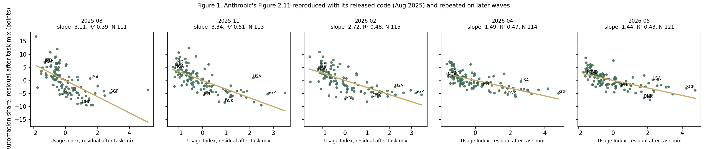
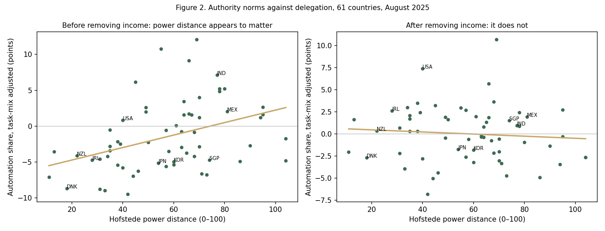
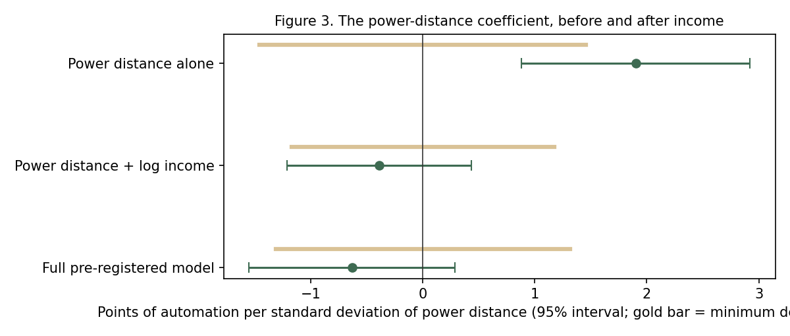
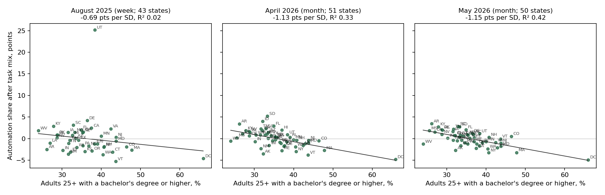
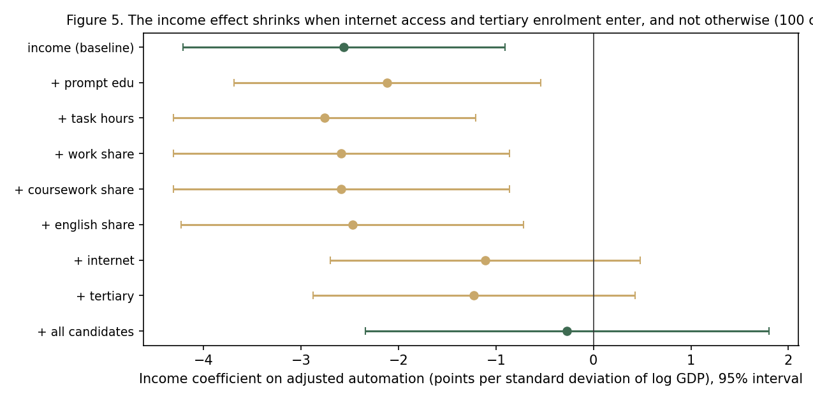
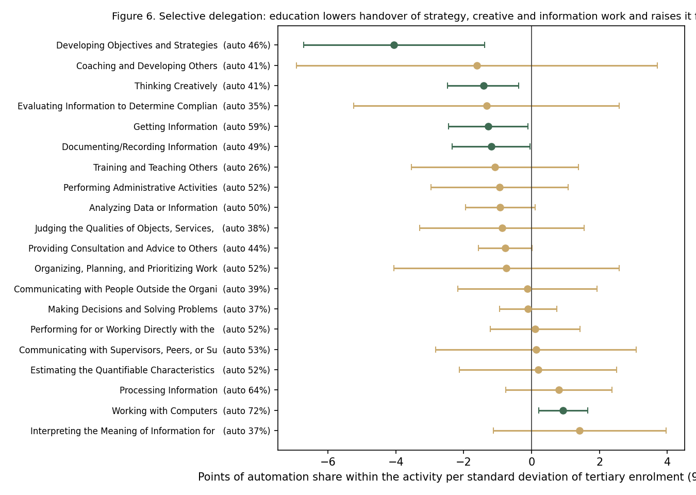
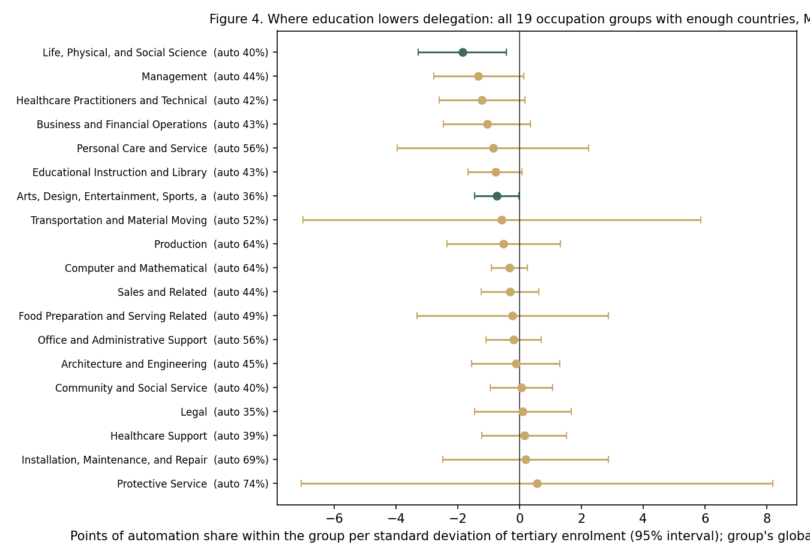

Human capital, not culture: why countries work with AI so differently
September 2026 · Evidence from Claude
The puzzle Anthropic left open
In September 2025, Anthropic's Economic Index reported a pattern in how countries work with Claude. In countries where many people use it, conversations tend to be collaborative: people refine drafts with the model, ask it to explain, ask it to check their work. In countries where few people use it, conversations tend toward delegation: people hand over a whole task and take the result. That much could be composition, since low-adoption countries ask about different things, and coding in particular is delegated more everywhere. But the pattern survived an adjustment for what people ask about. The report called this "somewhat counter-intuitive," offered two guesses, "cultural and economic factors" or the possibility that "early adopters in each country tend to use AI in a more automotive way," and asked for more research.
Two later reports leaned different ways without settling it. January 2026 favoured "a simple adoption curve story." March 2026 found that new users hand over more than experienced ones, and said this "pushes back against a hypothesis we made last year."
This post tests the three explanations against each other with the public data, a measure of authority norms the reports never used, and Anthropic's own released code. The hypothesis it was built to test, that culture explains the gap, is the one it rejects. Once a country's income is accounted for, authority norms explain nothing detectable, the newness of users explains little, and adoption itself, the axis on which the original finding was stated, adds nothing at all. Income, taken apart, is not wealth as such: the relationship is carried by how many people are online and how educated the population is. And the same gradient reappears inside one country. Across US states, where language, product, pricing, classifier and national culture are all the same, states with more graduates and higher incomes delegate less, on the same scale relative to the spread and with the same explanatory power as across countries. The gap between countries in how people work with AI is, on this evidence, a gap in human capital.
Three explanations, and how to tell them apart
Anthropic measures how people work with Claude with a classifier that places each conversation in one of five patterns. Two are grouped as automation: Directive ("translate this document") and Feedback Loop (relaying results or errors back). Three are grouped as augmentation: Task Iteration, Learning and Validation. Anthropic's own reports gloss automation as delegating complete tasks and augmentation as collaborating, and this post uses those plain words. The outcome throughout is a country's automation share, the percentage of its conversations in the two automation patterns, after adjusting for task mix.
Three explanations were on the table.
- Culture. Countries differ in norms about authority. Where people expect to be told what to do rather than consulted, they may treat an assistant the same way: give it the task, take the result. The standard measure is Hofstede's power distance, a 0-to-100 country score built from surveys of whether employees expect instruction or consultation. GLOBE's 2004 survey of 62 societies offers a second, independent measure.
- Cohort. Countries differ in how new their users are. New users hand over more than experienced ones; low-adoption countries have newer users; so the gap is the newness of the user base and will close as it ages.
- Development. Countries differ in income, and with it education, infrastructure and the kinds of work people bring to the model. The gap is a stage that closes as countries grow.
The three predict different things on two axes, and the tests were fixed before any of them was run.
| Across countries at one time: does power distance predict automation, once income and adoption are held constant? | Within a country over time: does automation move with the country's own adoption? | |
|---|---|---|
| Culture | Yes | Roughly flat |
| Cohort | No | Up when a wave of new users arrives |
| Development | No; income carries it | Down as adoption deepens |
The gap is real, and it has not closed
The first step was to reproduce Anthropic's result exactly. Anthropic released the code behind its Figure 2.11, and that function, run on the public August 2025 file with the same 200-conversation threshold, returns the published numbers to the third decimal: after task mix, each unit of the AI Usage Index (a country's share of Claude use divided by its share of the world's working-age population) goes with 3.1 points less automation, explaining 39% of the variance across 111 countries. An independent implementation written from the report's description returns the same to the sixth decimal.
The same function on the four later public waves, which to our knowledge nobody had run, gives slopes of −3.3 in November 2025, −2.7 in February 2026, and −1.5 and −1.4 in April and May 2026. The June figures rest on the new schema's task nodes and a changed user population, so they are not like-for-like; across the three comparable waves the gap narrowed by about an eighth. It is a persistent feature of the data, not a snapshot.

Evidence: the replication and its repetition on later waves
Script · scripts/02_replicate.py
"""Step 02: replicate Anthropic's Figure 2.11 exactly, two ways.
What this does
A. Extracts the numerical part of Anthropic's own function `collaboration_task_regression`
from the released code file (everything up to where it starts drawing the figure) and runs
it verbatim on the public August 2025 file. Published result: slope 3.112 (negative
relationship), R^2 0.394, p < 0.001.
B. Re-computes the same thing with our own independent code, written from the description:
expected automation for a country = sum over its tasks of (task weight x global
automation rate for that task) / sum of weights; then regress actual automation on
expected (residual A), regress the Usage Index on expected (residual B), and regress
residual A on residual B. The slope of that last regression is the "partial" slope.
C. Compares A and B to the decimal, and both to the published numbers.
Why
If our pipeline reproduces their number with their code AND with ours, every later step
starts from the same place they did. If it does not, we stop.
Vocabulary
partial regression = the relationship between two things after a third (task mix) has been
removed from both. "Residual" = what is left after removing it.
"""
import re, types, pandas as pd, numpy as np, statsmodels.api as sm, os, json
RAW = "data/raw/release_2025_09_15"; OUT = "data/processed"; CHK = "outputs/checks"
FILE = f"{RAW}/aei_enriched_claude_ai_2025-08-04_to_2025-08-11.csv"
PUBLISHED = {"slope": 3.112, "r2": 0.394}
# ---------- A. Anthropic's code, verbatim (numerical part only) ----------
src = open(f"{RAW}/code/aei_analysis_functions_claude_ai.py").read()
def grab(name, stop_marker):
start = src.index(f"def {name}(")
end = src.index(stop_marker, start)
return src[start:end]
filter_src = grab("filter_df", "\ndef get_filtered_geographies")
geos_src = grab("get_filtered_geographies", "\ndef ") # up to the next function
core_src = grab("collaboration_task_regression", " # Create visualization")
core_src += " return df_regression, partial_slope, partial_r2, partial_p, n_tasks\n"
ns = {"pd": pd, "np": np, "sm": sm, "MIN_OBSERVATIONS_COUNTRY": 200, "MIN_OBSERVATIONS_US_STATE": 100}
exec(filter_src + "\n" + geos_src + "\n" + core_src, ns)
df = pd.read_csv(FILE, keep_default_na=False, low_memory=False)
df["value"] = pd.to_numeric(df["value"], errors="coerce")
regA, slopeA, r2A, pA, ntasksA = ns["collaboration_task_regression"](df, geography="country")
print(f"A. Anthropic's function: slope = {slopeA:.3f}, R2 = {r2A:.3f}, p = {pA:.2e}, countries = {len(regA)}, tasks = {ntasksA}")
# ---------- B. Our independent implementation ----------
c = df[df.geography == "country"]
usage = c[(c.facet == "country") & (c.variable == "usage_count")].set_index("geo_id")["value"]
keep = [g for g in usage[usage >= 200].index if g != "not_classified"]
auto = c[(c.facet == "collaboration_automation_augmentation") & (c.variable == "automation_pct") & (c.geo_id.isin(keep))].set_index("geo_id")["value"]
aui = c[(c.facet == "country") & (c.variable == "usage_per_capita_index") & (c.geo_id.isin(keep))].set_index("geo_id")["value"]
tasks = c[(c.facet == "onet_task") & (c.variable == "onet_task_pct") & (c.geo_id.isin(keep))]
tasks = tasks[~tasks.cluster_name.isin(["not_classified", "none"])]
g = df[(df.geography == "global") & (df.facet == "onet_task::collaboration") & (df.variable == "onet_task_collaboration_pct")].copy()
g["task"] = g.cluster_name.str.split("::").str[0]; g["mode"] = g.cluster_name.str.split("::").str[1]
g = g[g["mode"].isin(["directive", "feedback loop", "validation", "task iteration", "learning"])]
g["is_auto"] = g["mode"].isin(["directive", "feedback loop"])
rate = g.groupby("task").apply(lambda t: t.loc[t.is_auto, "value"].sum() / t["value"].sum() * 100)
rows = []
for geo, t in tasks.groupby("geo_id"):
t = t[t.cluster_name.isin(rate.index)]
if t.empty: continue
rows.append((geo, float((t["value"] * t.cluster_name.map(rate)).sum() / t["value"].sum())))
exp = pd.DataFrame(rows, columns=["geo_id", "expected"]).set_index("geo_id")["expected"]
B = pd.concat([auto.rename("automation"), aui.rename("aui"), exp], axis=1, join="inner")
def resid(y, x):
X = sm.add_constant(x); return sm.OLS(y, X).fit().resid
B["auto_resid"] = resid(B.automation, B.expected); B["aui_resid"] = resid(B.aui, B.expected)
fitB = sm.OLS(B.auto_resid, sm.add_constant(B.aui_resid)).fit()
slopeB, r2B, pB = fitB.params.iloc[1], fitB.rsquared, fitB.pvalues.iloc[1]
print(f"B. Independent code: slope = {slopeB:.3f}, R2 = {r2B:.3f}, p = {pB:.2e}, countries = {len(B)}, tasks = {len(rate)}")
# ---------- write the replication table (this is the object later steps use) ----------
B.index.name = "geo_id"
B.to_csv(f"{OUT}/02_replication_aug2025.csv")
json.dump({"anthropic_fn": {"slope": slopeA, "r2": r2A, "p": pA, "n": int(len(regA))},
"independent": {"slope": slopeB, "r2": r2B, "p": pB, "n": int(len(B))},
"published": PUBLISHED}, open(f"{OUT}/02_replication_stats.json", "w"), indent=1)
# ---------- C. check block ----------
assert abs(abs(slopeA) - PUBLISHED["slope"]) < 0.05, f"Anthropic-code slope {slopeA:.3f} vs published {PUBLISHED['slope']}"
assert abs(r2A - PUBLISHED["r2"]) < 0.01, f"Anthropic-code R2 {r2A:.3f} vs published {PUBLISHED['r2']}"
assert abs(slopeA - slopeB) < 1e-6 and abs(r2A - r2B) < 1e-6, "our implementation disagrees with Anthropic's"
assert slopeA < 0, "relationship should be negative (more adoption, less automation)"
print(f"CHECK OK: both implementations agree to the decimal and match the published slope {PUBLISHED['slope']} and R2 {PUBLISHED['r2']}; sign negative as reported")
Check block · what the script printed when it ran
rate = g.groupby("task").apply(lambda t: t.loc[t.is_auto, "value"].sum() / t["value"].sum() * 100)
A. Anthropic's function: slope = -3.112, R2 = 0.394, p = 1.72e-13, countries = 111, tasks = 1808
B. Independent code: slope = -3.112, R2 = 0.394, p = 1.72e-13, countries = 111, tasks = 1808
CHECK OK: both implementations agree to the decimal and match the published slope 3.112 and R2 0.394; sign negative as reported
Script · scripts/03_repeat_waves.py
"""Step 03: repeat the task-mix-adjusted partial regression on every wave, and harmonise codes.
What this does
1. Validates our reconstruction of the AI Usage Index (AUI): in Aug 2025 the file carries both
usage_pct and the published AUI, so we rebuild AUI from usage_pct and the population file and
check it matches. Only then do we use the same formula for Nov 2025 and Feb 2026, which carry
usage_pct but no AUI. AUI = (country's share of usage) / (country's share of working-age
population among the countries in the population file).
2. For each wave: expected automation from the country's task mix x global per-task automation
rates (the Aug 2025 method), residuals, partial slope. June 2026 has no task-level automation
by country, so its adjustment uses the O*NET task nodes (level 0) with global automation rates
per node, which is the same construction on the same objects under a new schema.
3. Harmonises country codes to ISO-3 (Nov 2025 and Feb 2026 use ISO-2) and writes one table with
one row per country-wave: automation, expected, residual, AUI.
Why
Nobody has asked whether the Aug 2025 gap persisted. And later steps need every wave on one
code system.
"""
import pandas as pd, numpy as np, statsmodels.api as sm, json, os
RAW="data/raw"; OUT="data/processed"
pop = pd.read_csv(f"{RAW}/release_2025_09_15/working_age_pop_2024_country.csv", keep_default_na=False)
pop = pop[pop.iso_alpha_3 != ""]
iso2to3 = dict(zip(pop.country_code, pop.iso_alpha_3))
pop_share = (pop.set_index("iso_alpha_3").working_age_pop / pop.working_age_pop.sum())
def partial(auto, aui, expected):
d = pd.concat([auto.rename("automation"), aui.rename("aui"), expected.rename("expected")], axis=1, join="inner").dropna()
r = lambda y, x: sm.OLS(y, sm.add_constant(x)).fit().resid
d["auto_resid"] = r(d.automation, d.expected); d["aui_resid"] = r(d.aui, d.expected)
f = sm.OLS(d.auto_resid, sm.add_constant(d.aui_resid)).fit()
return d, f.params.iloc[1], f.rsquared, f.pvalues.iloc[1]
def expected_from_tasks(task_shares, global_rates):
"""task_shares: DataFrame[geo_id, task, w]; global_rates: Series task -> automation % ."""
t = task_shares[task_shares.task.isin(global_rates.index)].copy()
t["r"] = t.task.map(global_rates)
g = t.groupby("geo_id")
return (g.apply(lambda x: (x.w * x.r).sum() / x.w.sum(), include_groups=False)).rename("expected")
ANOMALY_CAP = 25.0 # pre-stated rule (plan §5, added 15 Sep): an index above 25 (Israel, the highest ever published, is 7.0)
# means machine or routed traffic, not a population using Claude. Excluded and named, never silently.
exclusions = []
def drop_anomalies(aui, wave):
bad = aui[aui > ANOMALY_CAP]
for g, v in bad.items():
exclusions.append({"wave": wave, "geo_id": g, "aui": float(v)}); print(f" EXCLUDED {wave} {g}: index {v:.0f} (> {ANOMALY_CAP})")
return aui.drop(bad.index)
results = {}; frames = []
# ---------- long-schema waves (Aug 2025, Nov 2025, Feb 2026) ----------
long_waves = [("2025-08", f"{RAW}/release_2025_09_15/aei_enriched_claude_ai_2025-08-04_to_2025-08-11.csv", "ISO3"),
("2025-11", f"{RAW}/release_2026_01_15/aei_raw_claude_ai_2025-11-13_to_2025-11-20.csv", "ISO2"),
("2026-02", f"{RAW}/release_2026_03_24/aei_raw_claude_ai_2026-02-05_to_2026-02-12.csv", "ISO2")]
for wave, path, codesys in long_waves:
df = pd.read_csv(path, keep_default_na=False, low_memory=False, usecols=["geo_id","geography","facet","variable","cluster_name","value"])
df["value"] = pd.to_numeric(df["value"], errors="coerce")
c = df[df.geography == "country"].copy()
if codesys == "ISO2":
c["geo_id"] = c.geo_id.map(iso2to3).fillna(c.geo_id) # harmonise to ISO-3 (NA=Namibia survives: keep_default_na=False)
usage = c[(c.facet=="country")&(c.variable=="usage_count")].set_index("geo_id")["value"]
keep = [g for g in usage[usage>=200].index if g!="not_classified"]
col = c[(c.facet=="collaboration")&(c.variable=="collaboration_pct")&(c.geo_id.isin(keep))]
# Anthropic's automation share is a percentage of the FIVE classified patterns (verified on Aug 2025: automation_pct
# equals (directive + feedback loop) / (sum of the five) x 100, not the share of all conversations). Same base here.
five = col[col.cluster_name.isin(["directive","feedback loop","task iteration","learning","validation"])].groupby("geo_id")["value"].sum()
auto = col[col.cluster_name.isin(["directive","feedback loop"])].groupby("geo_id")["value"].sum() / five * 100
# Anthropic's convention (release notebook, calculate_usage_per_capita_index): both the usage total and
# the population total are taken over the thresholded countries only, then index = usage share / pop share.
# Verified empirically on Aug 2025 (max difference 0.00000 against the published index):
# usage share = country count / (sum of counts over thresholded countries + the 'not_classified' count)
# pop share = country working-age pop / (sum over thresholded countries)
wap = pop.set_index("iso_alpha_3").working_age_pop
kept_pop = wap.reindex(keep).dropna()
total_usage = usage.reindex(kept_pop.index).sum() + float(usage.get("not_classified", 0.0))
total_pop = kept_pop.sum()
aui_rebuilt = (usage.reindex(kept_pop.index) / total_usage) / (kept_pop / total_pop)
if wave == "2025-08":
aui_pub = c[(c.facet=="country")&(c.variable=="usage_per_capita_index")].set_index("geo_id")["value"]
both = pd.concat([aui_pub.rename("pub"), aui_rebuilt.rename("rebuilt")], axis=1, join="inner").dropna()
both = both[both.index.isin(keep)]
maxdiff = (both.pub - both.rebuilt).abs().max()
print(f"AUI reconstruction check on Aug 2025: {len(both)} countries, max |published - rebuilt| = {maxdiff:.4f}")
assert maxdiff < 0.005, "AUI reconstruction does not match the published index"
aui = aui_pub
auto = c[(c.facet=="collaboration_automation_augmentation")&(c.variable=="automation_pct")&(c.geo_id.isin(keep))].set_index("geo_id")["value"]
else:
aui = aui_rebuilt
aui = drop_anomalies(aui, wave)
tasks = c[(c.facet=="onet_task")&(c.variable=="onet_task_pct")&(c.geo_id.isin(keep))]
tasks = tasks[~tasks.cluster_name.isin(["not_classified","none"])].rename(columns={"cluster_name":"task","value":"w"})[["geo_id","task","w"]]
g = df[(df.geography=="global")&(df.facet=="onet_task::collaboration")&(df.variable=="onet_task_collaboration_pct")].copy()
g["task"]=g.cluster_name.str.split("::").str[0]; g["mode"]=g.cluster_name.str.split("::").str[1]
g = g[g["mode"].isin(["directive","feedback loop","validation","task iteration","learning"])]
rates = g.groupby("task").apply(lambda t: t.loc[t["mode"].isin(["directive","feedback loop"]),"value"].sum()/t["value"].sum()*100, include_groups=False)
exp = expected_from_tasks(tasks, rates)
d, slope, r2, p = partial(auto, aui.reindex(auto.index), exp)
d["wave"]=wave; d.index.name="geo_id"; frames.append(d.reset_index())
results[wave] = {"slope": float(slope), "r2": float(r2), "p": float(p), "n": int(len(d)), "tasks": int(len(rates))}
print(f"{wave}: slope = {slope:.3f}, R2 = {r2:.3f}, p = {p:.1e}, N = {len(d)}, tasks with rates = {len(rates)}")
# ---------- June 2026 (wide schema; O*NET nodes level 0 = tasks) ----------
v6 = pd.read_csv(f"{RAW}/release_2026_06_26/aei_claude_ai_2026-06-26.csv", keep_default_na=False, low_memory=False,
usecols=["geo_id","geo_level","category_name","hierarchy_level","metric_id","value","date_start","node_external_id"])
v6["value"] = pd.to_numeric(v6["value"], errors="coerce")
for ds, wave in [("2026-04-01","2026-04"),("2026-05-01","2026-05")]:
m = v6[v6.date_start==ds]
ov = m[(m.geo_level=="country")&(m.category_name=="overall")]
auto = ov[ov.metric_id=="collaboration_bucket_automation_pct"].set_index("geo_id")["value"]
aui = drop_anomalies(ov[ov.metric_id=="usage_per_capita_index"].set_index("geo_id")["value"], wave)
on = m[(m.category_name=="onet")&(m.hierarchy_level.astype(str)=="0")]
tasks = on[(on.geo_level=="country")&(on.metric_id=="pct")].rename(columns={"node_external_id":"task","value":"w"})[["geo_id","task","w"]]
rates = on[(on.geo_level=="global")&(on.metric_id=="collaboration_bucket_automation_pct")].set_index("node_external_id")["value"]
exp = expected_from_tasks(tasks, rates)
d, slope, r2, p = partial(auto, aui.reindex(auto.index), exp)
d["wave"]=wave; d.index.name="geo_id"; frames.append(d.reset_index())
results[wave] = {"slope": float(slope), "r2": float(r2), "p": float(p), "n": int(len(d)), "tasks": int(len(rates))}
print(f"{wave}: slope = {slope:.3f}, R2 = {r2:.3f}, p = {p:.1e}, N = {len(d)}, task nodes with rates = {len(rates)} [June: node-level adjustment]")
allw = pd.concat(frames, ignore_index=True)
allw.to_csv(f"{OUT}/03_partial_by_wave.csv", index=False)
json.dump({"by_wave": results, "exclusions": exclusions}, open(f"{OUT}/03_partial_stats.json","w"), indent=1)
# ---------- check block ----------
assert abs(results["2025-08"]["slope"] + 3.112) < 0.01 and results["2025-08"]["n"] == 111, "Aug 2025 must reproduce step 02 exactly"
assert all(v["slope"] < 0 for v in results.values()), "every wave should show the negative relationship"
assert allw.geo_id.str.len().eq(3).all(), "all codes should be ISO-3 after harmonisation"
print("CHECK OK: Aug 2025 reproduces step 02; all waves negative; codes harmonised to ISO-3")
Check block · what the script printed when it ran
AUI reconstruction check on Aug 2025: 115 countries, max |published - rebuilt| = 0.0000 2025-08: slope = -3.112, R2 = 0.394, p = 1.7e-13, N = 111, tasks with rates = 1808 EXCLUDED 2025-11 SYC: index 1055 (> 25.0) 2025-11: slope = -3.341, R2 = 0.514, p = 4.4e-19, N = 113, tasks with rates = 2088 2026-02: slope = -2.715, R2 = 0.484, p = 6.4e-18, N = 115, tasks with rates = 2201 2026-04: slope = -1.487, R2 = 0.472, p = 3.2e-17, N = 114, task nodes with rates = 2380 [June: node-level adjustment] 2026-05: slope = -1.444, R2 = 0.432, p = 2.6e-16, N = 121, task nodes with rates = 2691 [June: node-level adjustment] CHECK OK: Aug 2025 reproduces step 02; all waves negative; codes harmonised to ISO-3
Anthropic's function is extracted verbatim from the released code (numerical part) and run on the public file; the independent implementation follows the report's description and must agree to the decimal.
Authority norms seem to matter, until income enters
Plot a country's adjusted automation share against its power-distance score and the culture story looks right. Across the 61 countries with a country-specific Hofstede score, one standard deviation more power distance (22 points on the 0-to-100 scale) goes with 1.9 points more automation, with an interval well clear of zero. Denmark, with a power-distance score of 18, delegates 9 points less than its task mix predicts; India, at 77, delegates 7 points more. Anyone who drew this chart would believe it.
Add one variable, the logarithm of the country's GDP per working-age adult, and the culture effect is gone. Power distance falls to −0.4 with an interval spanning zero, while income takes −3.8 points per log unit. In the full model set in advance, with adoption, coding share, personal-use share and language group as further controls, power distance is −0.6 (interval −1.6 to +0.3) and below the minimum detectable effect, the smallest true effect this sample could reliably have found, of 1.3 points. Income is −2.8 points per log unit (interval −4.2 to −1.4): doubling a country's income per working-age adult goes with 1.9 points less delegation. The model explains 69% of the variance in the adjusted outcome.

Why does the effect move? Power distance and income are strongly related: richer countries have lower scores (correlation −0.58). When two predictors overlap this much, the question is which one holds up when both are present, and the answer here is not close. Singapore, Japan and Korea are the test cases the culture story needed: rich and hierarchical. They sit with the rich countries, not the hierarchical ones.

The result holds under every change we could make to it. With Hofstede's regional scores added for eleven more countries, with GLOBE's power-distance practices in place of Hofstede's score, with GLOBE's participative-leadership score, with individualism and uncertainty avoidance added, with the directive share alone as the outcome, on the November 2025 and February 2026 waves, among English-majority countries only, and on a second classifier's measure of how much the human stayed involved: in none does power distance survive income. A placebo outcome that culture should not predict, the unclassified share, is null. No single country moves the coefficient by more than a point. One exploratory hint appears, a positive coefficient on individualism, below its own minimum detectable effect; it is noted, not claimed.
One more thing the full model says. The September 2025 report already showed that adoption tracks income, with a 1% rise in GDP per capita going with about 0.7% more usage per capita; what it did not test is whether the collaboration gap is about adoption or about income. Here the three orderings tell the story. Adoption alone predicts adjusted automation at −3.1 points per index unit, the replicated finding. Income alone predicts it at −4.0 points per log unit. With both present, income keeps −2.8 and the Usage Index coefficient falls to 0.1 with an interval spanning zero. Adoption and income are closely related (correlation 0.73), so the two cannot be fully separated in 61 countries, but when both are present income takes the weight and adoption takes none. What looked like an adoption gradient is, on this evidence, an income gradient.
Evidence: the primary model and the robustness battery
Table · Full model, August 2025, HC3 robust errors
| term | coef | se | ci_low | ci_high | p | mde |
|---|---|---|---|---|---|---|
| z_pdi | -0.634 | 0.469 | -1.554 | 0.286 | 0.177 | 1.314 |
| log_gdp | -2.791 | 0.704 | -4.172 | -1.411 | 0.000 | 1.972 |
| aui | 0.104 | 0.440 | -0.758 | 0.965 | 0.813 | 1.231 |
| coding_share | 0.041 | 0.061 | -0.078 | 0.161 | 0.498 | 0.171 |
| personal_share | -0.231 | 0.083 | -0.394 | -0.068 | 0.005 | 0.233 |
Table · Power-distance coefficient across specifications
| specification | n | coef | ci_low | ci_high | mde | p |
|---|---|---|---|---|---|---|
| Primary (Aug 2025, Hofstede country scores) | 61.000 | -0.634 | -1.554 | 0.286 | 1.314 | 0.177 |
| A. + Hofstede regional scores | 72.000 | -0.419 | -1.286 | 0.447 | 1.238 | 0.343 |
| B1. GLOBE power-distance practices | 52.000 | 0.591 | -0.320 | 1.503 | 1.303 | 0.204 |
| B2. GLOBE participative leadership (expect negative) | 52.000 | 0.613 | -0.612 | 1.838 | 1.751 | 0.327 |
| C. + individualism + uncertainty avoidance (PDI coef) | 61.000 | -0.132 | -1.183 | 0.919 | 1.501 | 0.805 |
| C. individualism coef | 61.000 | 1.452 | 0.065 | 2.838 | 1.981 | 0.040 |
| C. uncertainty-avoidance coef | 61.000 | 0.149 | -0.809 | 1.106 | 1.368 | 0.761 |
| D. outcome = directive share (task-mix residual) | 61.000 | -0.406 | -1.209 | 0.397 | 1.147 | 0.322 |
| E. wave 2025-11 | 61.000 | -0.294 | -1.179 | 0.590 | 1.264 | 0.514 |
| E. wave 2026-02 | 61.000 | 0.120 | -0.581 | 0.822 | 1.002 | 0.737 |
| F. English-majority countries only (illustrative) | 49.000 | -0.586 | -1.611 | 0.439 | 1.464 | 0.263 |
| G. Stanford human agency: AI-handles-alone share | 41.000 | -0.235 | -0.621 | 0.150 | 0.551 | 0.232 |
| I. placebo outcome: unclassified share | 61.000 | -0.121 | -0.413 | 0.171 | 0.418 | 0.417 |
Script · scripts/06_main_test.py
"""Step 06: the primary test (H1 culture vs H3 development), exactly as pre-registered.
What this does
0. Tests the regression code on synthetic data: (a) fake data built with a known power-distance effect
must give that effect back; (b) fake data with no effect must give roughly zero. Then a hand-written
least-squares calculation (matrix algebra, no library) must agree with statsmodels.
1. Plots every variable (histograms) and the outcome against each control (scatters), saved to outputs/figures/06_*.
2. Fits the pre-registered model on the Aug 2025 wave with HC3 robust standard errors:
auto_resid ~ z(hof_pdi) + log_gdp + aui + coding_share + personal_share + lang_group
3. Reports each coefficient with its 95% interval, the MDE ((1.96+0.84) x SE), VIFs, and the
two-variable model (power distance alone; income alone) beside the full one.
4. Applies the pre-registered decision rule for H1 and prints it.
Why
This is the one number the post stands on. Everything else is robustness.
Vocabulary
z(x) = (x - mean) / standard deviation, so a coefficient reads "points of automation per standard deviation".
HC3 = a robust standard error that does not assume every country is equally noisy.
VIF = variance inflation factor; how much a control's overlap with others inflates uncertainty (>5 is a warning).
"""
import pandas as pd, numpy as np, statsmodels.api as sm, statsmodels.formula.api as smf, json, os
from statsmodels.stats.outliers_influence import variance_inflation_factor
import matplotlib; matplotlib.use("Agg"); import matplotlib.pyplot as plt
OUT="data/processed"; FIG="outputs/figures"; TAB="outputs/tables"; os.makedirs(FIG,exist_ok=True); os.makedirs(TAB,exist_ok=True)
rng = np.random.default_rng(20260915)
# ---------- 0a. synthetic test: known effect must be recovered ----------
def fit_formula(df, formula):
return smf.ols(formula, data=df).fit(cov_type="HC3")
n=61
for true_beta in [3.0, 0.0]:
z=rng.normal(size=n); inc=rng.normal(size=n); ad=rng.normal(size=n)
y = true_beta*z + 1.0*inc + rng.normal(scale=4, size=n)
fake=pd.DataFrame({"y":y,"z":z,"inc":inc,"ad":ad})
ests=[fit_formula(fake.assign(y=true_beta*fake.z+fake.inc+rng.normal(scale=4,size=n)),"y ~ z + inc + ad").params["z"] for _ in range(300)]
print(f"synthetic test, true effect {true_beta}: mean estimate over 300 draws = {np.mean(ests):.2f} (sd {np.std(ests):.2f})")
assert abs(np.mean(ests)-true_beta) < 0.15, "regression code does not recover a known effect"
# ---------- 0b. hand-written OLS must agree with the library ----------
t = pd.read_csv(f"{OUT}/04_country_table.csv")
d = t[t.wave=="2025-08"].dropna(subset=["auto_resid","hof_pdi","log_gdp","aui","coding_share","personal_share","lang_group"]).copy()
d["z_pdi"] = (d.hof_pdi - d.hof_pdi.mean())/d.hof_pdi.std(ddof=0)
# DEVIATION (logged 15 Sep): language groups with fewer than 5 countries are collapsed into "other".
# Reason: a group with one country gives that point leverage 1, which makes the HC3 robust error undefined.
small = d.lang_group.value_counts(); d["lang_group"] = d.lang_group.where(d.lang_group.map(small) >= 5, "other")
X = pd.get_dummies(d[["z_pdi","log_gdp","aui","coding_share","personal_share","lang_group"]], columns=["lang_group"], drop_first=True, dtype=float)
X = sm.add_constant(X); y = d["auto_resid"].values
beta_hand = np.linalg.solve(X.values.T @ X.values, X.values.T @ y) # (X'X)^-1 X'y, the least-squares formula
lib = sm.OLS(y, X).fit(cov_type="HC3")
assert np.allclose(beta_hand, lib.params.values, atol=1e-8), "hand-written OLS disagrees with statsmodels"
print(f"hand-written least squares agrees with statsmodels on all {len(beta_hand)} coefficients")
# ---------- 1. look before modelling ----------
vars_=["auto_resid","hof_pdi","log_gdp","aui","coding_share","personal_share"]
fig,axes=plt.subplots(2,3,figsize=(11,6))
for ax,v in zip(axes.flat,vars_): ax.hist(d[v].dropna(),bins=15,color="#3e6b52"); ax.set_title(v)
plt.tight_layout(); plt.savefig(f"{FIG}/06_histograms.png",dpi=120); plt.close()
fig,axes=plt.subplots(1,5,figsize=(16,3.4))
for ax,v in zip(axes,vars_[1:]):
ax.scatter(d[v],d.auto_resid,s=14,color="#3e6b52"); ax.set_xlabel(v); ax.set_ylabel("auto_resid")
for g,r in d.set_index("geo_id").iterrows():
if g in ["IND","DNK","SGP","JPN","KOR","NGA","IRL","USA"]: ax.annotate(g,(r[v],r.auto_resid),fontsize=7)
plt.tight_layout(); plt.savefig(f"{FIG}/06_scatters.png",dpi=120); plt.close()
print(f"figures saved; estimation sample N = {len(d)}; language groups: {d.lang_group.value_counts().to_dict()}")
# ---------- 2. the pre-registered model ----------
full = fit_formula(d, "auto_resid ~ z_pdi + log_gdp + aui + coding_share + personal_share + C(lang_group)")
pdi_only = fit_formula(d, "auto_resid ~ z_pdi"); inc_only = fit_formula(d, "auto_resid ~ log_gdp + aui")
two = fit_formula(d, "auto_resid ~ z_pdi + log_gdp")
def row(m, name):
b=m.params[name]; se=m.bse[name]; lo,hi=m.conf_int().loc[name]; mde=(1.96+0.84)*se
return {"coef":round(b,3),"se":round(se,3),"ci_low":round(lo,3),"ci_high":round(hi,3),"p":round(m.pvalues[name],4),"mde":round(mde,3)}
res = {"n": int(full.nobs), "r2": round(full.rsquared,3),
"full": {k: row(full,k) for k in ["z_pdi","log_gdp","aui","coding_share","personal_share"]},
"pdi_only": row(pdi_only,"z_pdi"), "pdi_plus_income": {k: row(two,k) for k in ["z_pdi","log_gdp"]},
"income_only": {k: row(inc_only,k) for k in ["log_gdp","aui"]}}
# VIFs on the numeric design matrix
Xn = sm.add_constant(d[["z_pdi","log_gdp","aui","coding_share","personal_share"]])
res["vif"] = {c: round(variance_inflation_factor(Xn.values, i),2) for i,c in enumerate(Xn.columns) if c!="const"}
json.dump(res, open(f"{OUT}/06_main_test.json","w"), indent=1)
tab = pd.DataFrame(res["full"]).T; tab.to_csv(f"{TAB}/06_main_model.csv");
print("\nFull pre-registered model (Aug 2025, HC3):"); print(tab.to_string())
print("VIF:", res["vif"])
print(f"\nPower distance alone: {res['pdi_only']}"); print(f"Power distance + log income: {res['pdi_plus_income']}"); print(f"Income + adoption only: {res['income_only']}")
# ---------- 3. decision rule, as pre-registered ----------
b=res["full"]["z_pdi"]
support = (b["coef"]>0) and (b["ci_low"]>0) and (b["coef"]>=b["mde"])
verdict = "SUPPORTS H1 (culture): positive, interval excludes zero, above the MDE" if support else ("AGAINST H1: coefficient below the MDE" if b["coef"]<b["mde"] else "INCONCLUSIVE: sign/interval fail the rule but coefficient not below MDE")
print(f"\nPre-registered decision: {verdict}")
inc=res["full"]["log_gdp"]; print(f"Income (log GDP) in the full model: coef {inc['coef']} [{inc['ci_low']}, {inc['ci_high']}], MDE {inc['mde']}")
assert res["n"]>=50, "estimation sample smaller than expected"
print("CHECK OK: synthetic recovery, hand-vs-library agreement, model fitted on the pre-registered specification")
Check block · what the script printed when it ran
beta_hand = np.linalg.solve(X.values.T @ X.values, X.values.T @ y) # (X'X)^-1 X'y, the least-squares formula
beta_hand = np.linalg.solve(X.values.T @ X.values, X.values.T @ y) # (X'X)^-1 X'y, the least-squares formula
beta_hand = np.linalg.solve(X.values.T @ X.values, X.values.T @ y) # (X'X)^-1 X'y, the least-squares formula
synthetic test, true effect 3.0: mean estimate over 300 draws = 3.01 (sd 0.55)
synthetic test, true effect 0.0: mean estimate over 300 draws = -0.00 (sd 0.53)
hand-written least squares agrees with statsmodels on all 8 coefficients
figures saved; estimation sample N = 61; language groups: {'english': 49, 'spanish': 8, 'other': 4}
Full pre-registered model (Aug 2025, HC3):
coef se ci_low ci_high p mde
z_pdi -0.634 0.469 -1.554 0.286 0.1767 1.314
log_gdp -2.791 0.704 -4.172 -1.411 0.0001 1.972
aui 0.104 0.440 -0.758 0.965 0.8132 1.231
coding_share 0.041 0.061 -0.078 0.161 0.4985 0.171
personal_share -0.231 0.083 -0.394 -0.068 0.0054 0.233
VIF: {'z_pdi': np.float64(1.65), 'log_gdp': np.float64(3.9), 'aui': np.float64(2.33), 'coding_share': np.float64(1.18), 'personal_share': np.float64(2.28)}
Power distance alone: {'coef': np.float64(1.901), 'se': np.float64(0.521), 'ci_low': 0.88, 'ci_high': 2.923, 'p': np.float64(0.0003), 'mde': np.float64(1.459)}
Power distance + log income: {'z_pdi': {'coef': np.float64(-0.39), 'se': np.float64(0.419), 'ci_low': -1.211, 'ci_high': 0.43, 'p': np.float64(0.3511), 'mde': np.float64(1.172)}, 'log_gdp': {'coef': np.float64(-3.84), 'se': np.float64(0.431), 'ci_low': -4.684, 'ci_high': -2.995, 'p': np.float64(0.0), 'mde': np.float64(1.206)}}
Income + adoption only: {'log_gdp': {'coef': np.float64(-3.963), 'se': np.float64(0.444), 'ci_low': -4.833, 'ci_high': -3.093, 'p': np.float64(0.0), 'mde': np.float64(1.243)}, 'aui': {'coef': np.float64(0.392), 'se': np.float64(0.302), 'ci_low': -0.199, 'ci_high': 0.983, 'p': np.float64(0.194), 'mde': np.float64(0.844)}}
Pre-registered decision: AGAINST H1: coefficient below the MDE
Income (log GDP) in the full model: coef -2.791 [-4.172, -1.411], MDE 1.972
CHECK OK: synthetic recovery, hand-vs-library agreement, model fitted on the pre-registered specification
Script · scripts/07_robustness.py
"""Step 07: robustness battery A-J as pre-registered. Every row reports the power-distance coefficient
(points of automation per standard deviation), its interval, and the MDE, so the reader can see whether
the primary result survives each change."""
import pandas as pd, numpy as np, statsmodels.formula.api as smf, json, os
OUT="data/processed"; TAB="outputs/tables"
t = pd.read_csv(f"{OUT}/04_country_table.csv")
def prep(df, pdi_col="hof_pdi", outcome="auto_resid"):
d = df.dropna(subset=[outcome, pdi_col, "log_gdp", "aui", "coding_share", "personal_share", "lang_group"]).copy()
d["z_pdi"] = (d[pdi_col]-d[pdi_col].mean())/d[pdi_col].std(ddof=0)
small = d.lang_group.value_counts(); d["lang_group"] = d.lang_group.where(d.lang_group.map(small) >= 5, "other")
return d
BASE = "z_pdi + log_gdp + aui + coding_share + personal_share + C(lang_group)"
def fit(d, formula, key="z_pdi"):
m = smf.ols(formula, data=d).fit(cov_type="HC3"); lo,hi = m.conf_int().loc[key]
return {"n": int(m.nobs), "coef": round(m.params[key],3), "ci_low": round(lo,3), "ci_high": round(hi,3), "mde": round(2.8*m.bse[key],3), "p": round(m.pvalues[key],4)}
rows = {}
aug = t[t.wave=="2025-08"]
d = prep(aug); rows["Primary (Aug 2025, Hofstede country scores)"] = fit(d, f"auto_resid ~ {BASE}")
# A. regional scores extend the sample
rows["A. + Hofstede regional scores"] = fit(prep(aug, "hof_pdi_extended"), f"auto_resid ~ {BASE}")
# B. GLOBE practices; GLOBE participative leadership
rows["B1. GLOBE power-distance practices"] = fit(prep(aug, "globe_pdi_practices"), f"auto_resid ~ {BASE}")
dg = prep(aug, "globe_participative"); rows["B2. GLOBE participative leadership (expect negative)"] = fit(dg, f"auto_resid ~ {BASE}")
# C. other dimensions
dc = prep(aug); dc["z_idv"]=(dc.hof_idv-dc.hof_idv.mean())/dc.hof_idv.std(ddof=0); dc["z_uai"]=(dc.hof_uai-dc.hof_uai.mean())/dc.hof_uai.std(ddof=0)
mC = smf.ols(f"auto_resid ~ {BASE} + z_idv + z_uai", data=dc).fit(cov_type="HC3")
rows["C. + individualism + uncertainty avoidance (PDI coef)"] = fit(dc, f"auto_resid ~ {BASE} + z_idv + z_uai")
rows["C. individualism coef"] = fit(dc, f"auto_resid ~ {BASE} + z_idv + z_uai", key="z_idv"); rows["C. uncertainty-avoidance coef"] = fit(dc, f"auto_resid ~ {BASE} + z_idv + z_uai", key="z_uai")
# D. directive-share residual outcome: residualise directive share on expected automation (same adjustment logic)
col = pd.read_csv(f"{OUT}/01_collab_by_country_thresholded.csv"); dd = aug.merge(col[col.wave=="2025-08"][["geo_id","directive"]], on="geo_id")
dd = prep(dd); import statsmodels.api as sm
dd["dir_resid"] = sm.OLS(dd.directive, sm.add_constant(dd.expected)).fit().resid
rows["D. outcome = directive share (task-mix residual)"] = fit(dd, f"dir_resid ~ {BASE}")
# E. later waves
for w in ["2025-11","2026-02"]:
rows[f"E. wave {w}"] = fit(prep(t[t.wave==w]), f"auto_resid ~ {BASE}")
# F. English-majority only
de = d[d.lang_group=="english"]; rows["F. English-majority countries only (illustrative)"] = fit(de, "auto_resid ~ z_pdi + log_gdp + aui + coding_share + personal_share")
# G. second instrument: Stanford 'AI handles alone'
dgc = aug.dropna(subset=["agency_ai_alone"]).copy(); dgc = prep(dgc); dgc["agency"] = dgc.agency_ai_alone*100
rows["G. Stanford human agency: AI-handles-alone share"] = fit(dgc, f"agency ~ {BASE}")
# H. leave-one-country-out
base_coef = rows["Primary (Aug 2025, Hofstede country scores)"]["coef"]; movers = []
for g in d.geo_id:
c = fit(d[d.geo_id!=g], f"auto_resid ~ {BASE}")["coef"]
if abs(c-base_coef) > 0.25*max(abs(base_coef),0.5): movers.append((g, c))
rows["H. leave-one-out: countries moving PDI coef by >25%"] = {"movers": movers}
# I. placebo: unclassified share
dp = aug.merge(col[col.wave=="2025-08"][["geo_id"]+["directive","feedback loop","task iteration","learning","validation","none"]], on="geo_id", suffixes=("","_c"))
dp["unclassified"] = 100 - dp[["directive","feedback loop","task iteration","learning","validation","none"]].sum(axis=1)
dp = prep(dp); rows["I. placebo outcome: unclassified share"] = fit(dp, f"unclassified ~ {BASE}")
json.dump(rows, open(f"{OUT}/07_robustness.json","w"), indent=1)
tab = pd.DataFrame({k:v for k,v in rows.items() if "movers" not in v}).T; tab.to_csv(f"{TAB}/07_robustness.csv")
print(tab.to_string()); print("\nH. leave-one-out movers:", movers)
print("CHECK OK: all pre-registered robustness rows computed")
Check block · what the script printed when it ran
n coef ci_low ci_high mde p
Primary (Aug 2025, Hofstede country scores) 61.0 -0.634 -1.554 0.286 1.314 0.1767
A. + Hofstede regional scores 72.0 -0.419 -1.286 0.447 1.238 0.3427
B1. GLOBE power-distance practices 52.0 0.591 -0.320 1.503 1.303 0.2037
B2. GLOBE participative leadership (expect negative) 52.0 0.613 -0.612 1.838 1.751 0.3269
C. + individualism + uncertainty avoidance (PDI coef) 61.0 -0.132 -1.183 0.919 1.501 0.8055
C. individualism coef 61.0 1.452 0.065 2.838 1.981 0.0402
C. uncertainty-avoidance coef 61.0 0.149 -0.809 1.106 1.368 0.7607
D. outcome = directive share (task-mix residual) 61.0 -0.406 -1.209 0.397 1.147 0.3216
E. wave 2025-11 61.0 -0.294 -1.179 0.590 1.264 0.5145
E. wave 2026-02 61.0 0.120 -0.581 0.822 1.002 0.7368
F. English-majority countries only (illustrative) 49.0 -0.586 -1.611 0.439 1.464 0.2628
G. Stanford human agency: AI-handles-alone share 41.0 -0.235 -0.621 0.150 0.551 0.2316
I. placebo outcome: unclassified share 61.0 -0.121 -0.413 0.171 0.418 0.4172
H. leave-one-out movers: [('AUT', np.float64(-0.831)), ('JAM', np.float64(-0.427)), ('PAN', np.float64(-0.794))]
CHECK OK: all pre-registered robustness rows computed
Is it the newness of users?
The cohort story has a specific mechanism and a specific number. Anthropic's March 2026 report finds that users under six months old are directive in 38.1% of conversations against 29.4% for older users; converted to our outcome, new users are 8.3 points more automated. The typical spread of adjusted automation across countries, from the 5th to the 95th percentile, is 15.8 points. So in the extreme case, every user new in one country and every user experienced in another, newness could account for about half of the spread; with a plausible 30-point difference in new-user share, about a sixth. Arithmetic bounds the cohort story. It does not exclude it, so two tests were set in advance.
Within countries, delegation does not follow adoption. Following 114 countries across five waves and comparing each country only with itself, adjusted automation moves 0.3 points per index unit of the country's own adoption (interval −0.8 to +1.5), and 0.8 (interval −0.2 to +1.8) with the June waves excluded. Neither the rise cohort predicts nor the fall development predicts is detectable. This test is honest but weak: a country's Usage Index moves by only about a quarter of a point between waves, so there is little within-country change to learn from.
The Super Bowl went the wrong way for cohort. Anthropic's February 2026 sample overlapped its Super Bowl advertising, which the report says "brought many first-time users," mostly in the United States. If new users delegate more, US delegation should have risen relative to comparable countries in that wave. It fell: −3.5 points from November to February, against a mean of 0.0 (standard deviation 1.3) across Canada, the United Kingdom, Australia, Ireland and New Zealand, the comparators fixed in advance. A surge of first-time users lowered the US automation share. The most natural reading, consistent with the personal-use result below, is that the newcomers were casual and personal users, and personal use delegates less.
Evidence: the newness ceiling, the within-country panel and the Super Bowl comparison
Script · scripts/05_ceiling.py
"""Step 05: the newness ceiling, before any regression touches power distance.
What this does
Takes the published tenure effect (Learning Curves, March 2026, Table 2.1: users under six months
are directive in 38.1% of conversations vs 29.4% for older users; feedback loop 11.7% vs 12.1%),
converts it to our outcome (automation = directive + feedback loop: 49.8 vs 41.5, a gap of 8.3
points), and compares it with the spread of task-mix-adjusted automation across countries.
The most that user newness could explain is the tenure gap times the difference in new-user share
between two countries, which is at most 1 (everyone new vs everyone experienced).
Why
It bounds the cohort story with arithmetic alone. Nothing here uses culture data.
"""
import pandas as pd, numpy as np, json
d = pd.read_csv("data/processed/03_partial_by_wave.csv")
TENURE = {"directive": (38.1, 29.4), "feedback loop": (11.7, 12.1)} # (low tenure, high tenure), Table 2.1
auto_gap = (TENURE["directive"][0] + TENURE["feedback loop"][0]) - (TENURE["directive"][1] + TENURE["feedback loop"][1])
directive_gap = TENURE["directive"][0] - TENURE["directive"][1]
out = {"automation_gap_points": round(auto_gap, 2), "directive_gap_points": round(directive_gap, 2), "waves": {}}
print(f"Tenure gap (published): directive {directive_gap:.1f} points; automation (our outcome) {auto_gap:.1f} points")
for w, x in d.groupby("wave"):
r = x.auto_resid
spread_p5_95 = r.quantile(.95) - r.quantile(.05); spread_full = r.max() - r.min(); sd = r.std()
share = auto_gap / spread_p5_95
out["waves"][w] = {"n": int(len(r)), "sd_resid": round(sd, 2), "spread_p5_p95": round(spread_p5_95, 2), "spread_full": round(spread_full, 2), "ceiling_share_of_p5p95": round(share, 3)}
print(f"{w}: N={len(r):3d} residual SD {sd:5.2f}, 5th-95th spread {spread_p5_95:5.2f}, full range {spread_full:5.2f} -> newness explains at most {share:.0%} of the 5th-95th spread")
json.dump(out, open("data/processed/05_ceiling.json", "w"), indent=1)
# A plausible, not extreme, composition difference: if two countries differed by 30 points in their new-user share
# (say 60% new vs 30% new), newness would move automation by 0.30 x the tenure gap.
plausible = 0.30 * auto_gap
out["plausible_30pt_difference_points"] = round(plausible, 2)
print(f"With a 30-point difference in new-user share between two countries, newness would explain {plausible:.1f} points, "
f"i.e. {plausible/out['waves']['2025-08']['spread_p5_p95']:.0%} of the Aug 2025 5th-95th spread.")
json.dump(out, open("data/processed/05_ceiling.json", "w"), indent=1)
# check block: computational validity only (the result is whatever it is)
assert abs(auto_gap - 8.3) < 0.05 and abs(directive_gap - 8.7) < 0.05, "tenure gaps must match Table 2.1"
assert all(v["spread_full"] >= v["spread_p5_p95"] > 0 for v in out["waves"].values())
print("CHECK OK: gaps match the published table; spreads computed for every wave. RESULT: the ceiling is roughly half of the typical spread in Aug 2025 (extreme case), so newness is bounded but not ruled out.")
Check block · what the script printed when it ran
Tenure gap (published): directive 8.7 points; automation (our outcome) 8.3 points 2025-08: N=111 residual SD 5.15, 5th-95th spread 15.81, full range 26.33 -> newness explains at most 52% of the 5th-95th spread 2025-11: N=113 residual SD 4.56, 5th-95th spread 14.57, full range 21.92 -> newness explains at most 57% of the 5th-95th spread 2026-02: N=115 residual SD 4.34, 5th-95th spread 13.26, full range 19.03 -> newness explains at most 63% of the 5th-95th spread 2026-04: N=114 residual SD 3.06, 5th-95th spread 10.70, full range 13.42 -> newness explains at most 78% of the 5th-95th spread 2026-05: N=121 residual SD 3.04, 5th-95th spread 9.88, full range 16.12 -> newness explains at most 84% of the 5th-95th spread With a 30-point difference in new-user share between two countries, newness would explain 2.5 points, i.e. 16% of the Aug 2025 5th-95th spread. CHECK OK: gaps match the published table; spreads computed for every wave. RESULT: the ceiling is roughly half of the typical spread in Aug 2025 (extreme case), so newness is bounded but not ruled out.
Script · scripts/08_panel.py
"""Step 08: the within-country test (H2 cohort vs H3 development) and the Super Bowl natural experiment.
What this does
1. Panel: the same countries across five waves. Country fixed effects remove everything constant about a
country (its culture, language, income level); wave fixed effects remove anything that changed for every
country at once (a new classifier, the June population change). What is left is within-country movement:
does a country's task-mix-adjusted automation move with its own adoption?
cohort predicts +, development predicts -, culture predicts ~0.
Standard errors clustered by country. Run with and without the two June 2026 waves.
2. Super Bowl: change in US auto_resid from Nov 2025 to Feb 2026 minus the mean change over the
pre-registered comparators (CAN, GBR, AUS, IRL, NZL). Cohort predicts the US rises more than
one comparator standard deviation above the comparator mean.
Caveat printed with the result: adoption moves little within a country over nine months, so this test is
suggestive; the write-up says so.
"""
import pandas as pd, numpy as np, statsmodels.formula.api as smf, json
OUT="data/processed"
d = pd.read_csv(f"{OUT}/03_partial_by_wave.csv")
res = {}
def panel(df, label):
df = df.copy()
keep = df.groupby("geo_id").wave.transform("nunique") >= 3 # countries observed in at least three waves
df = df[keep]
m = smf.ols("auto_resid ~ aui + C(geo_id) + C(wave)", data=df).fit(cov_type="cluster", cov_kwds={"groups": df["geo_id"]})
lo, hi = m.conf_int().loc["aui"]
within_sd = df.groupby("geo_id").aui.std().mean()
r = {"n_obs": int(m.nobs), "n_countries": int(df.geo_id.nunique()), "coef_aui": round(m.params["aui"],3), "ci": [round(lo,3), round(hi,3)],
"p": round(m.pvalues["aui"],4), "mde": round(2.8*m.bse["aui"],3), "mean_within_country_sd_of_aui": round(within_sd,3)}
print(f"{label}: N={r['n_obs']} obs, {r['n_countries']} countries; within-country coef on AUI = {r['coef_aui']} [{lo:.3f}, {hi:.3f}], p={r['p']}, MDE {r['mde']}; typical within-country movement of AUI = {within_sd:.2f} index points")
return r
res["panel_all_waves"] = panel(d, "Panel, all five waves")
res["panel_excl_june"] = panel(d[~d.wave.isin(["2026-04","2026-05"])], "Panel, excluding June 2026")
# Super Bowl
w = d.pivot_table(index="geo_id", columns="wave", values="auto_resid")
chg = (w["2026-02"] - w["2025-11"]).dropna()
comp = ["CAN","GBR","AUS","IRL","NZL"]; us = chg.get("USA"); cm = chg.reindex(comp)
res["superbowl"] = {"us_change": round(float(us),3), "comparators": {k: round(float(v),3) for k,v in cm.items()}, "comparator_mean": round(float(cm.mean()),3), "comparator_sd": round(float(cm.std()),3),
"us_minus_mean": round(float(us-cm.mean()),3), "cohort_supported": bool(us - cm.mean() > cm.std())}
print(f"Super Bowl test: US change Nov->Feb = {us:+.2f} points; comparators mean {cm.mean():+.2f} (sd {cm.std():.2f}); US minus mean = {us-cm.mean():+.2f} -> cohort {'SUPPORTED' if res['superbowl']['cohort_supported'] else 'NOT supported'} by the pre-registered rule")
print(" comparators:", res["superbowl"]["comparators"])
json.dump(res, open(f"{OUT}/08_panel.json","w"), indent=1)
assert res["panel_all_waves"]["n_countries"] > 80 and all(k in chg.index for k in comp+["USA"])
print("CHECK OK: panel fitted on countries seen in >=3 waves; all comparators present")
Check block · what the script printed when it ran
Panel, all five waves: N=561 obs, 114 countries; within-country coef on AUI = 0.342 [-0.769, 1.453], p=0.5459, MDE 1.587; typical within-country movement of AUI = 0.25 index points
Panel, excluding June 2026: N=324 obs, 108 countries; within-country coef on AUI = 0.82 [-0.174, 1.813], p=0.106, MDE 1.42; typical within-country movement of AUI = 0.15 index points
Super Bowl test: US change Nov->Feb = -3.46 points; comparators mean +0.02 (sd 1.25); US minus mean = -3.48 -> cohort NOT supported by the pre-registered rule
comparators: {'CAN': -0.755, 'GBR': -0.284, 'AUS': 0.354, 'IRL': -1.207, 'NZL': 2.01}
CHECK OK: panel fitted on countries seen in >=3 waves; all comparators present
The same gradient inside one country
Every cross-country result above shares two weaknesses a reviewer would press on. Culture and income overlap, so a null on culture could be income taking credit for something cultural. And the classifier reads conversations in many languages, so an income gradient could be a language gradient in disguise. There is one place in the public data where both objections fall away at once. Anthropic publishes the same collaboration measures for US states, and within the United States language, product, pricing, classifier and national culture are held constant. Only the population differs. If the gradient is human capital, it should reappear across states; if it is culture or classifier language, it cannot.
The test was added to the pre-registration as a dated addendum, with its data sources, models, decision rule and robustness list committed before any state model was run. The outcome is the task-mix-adjusted automation share from Anthropic's own function, run with its state option; education is the share of adults with a bachelor's degree or higher, from the Census Bureau's 2023 American Community Survey, which runs from 24% in West Virginia to 66% in the District of Columbia; income is the state's GDP per working-age adult from Anthropic's own file.
Anthropic's state result is fragile, and the reason is Utah. The September 2025 report said the adoption relationship was "not significant across US states." Their function on the August 2025 states returns a positive slope, with adoption going with more delegation, at p = 0.004. Drop Utah, which the report itself flagged for "coordinated abuse," and the slope turns negative; drop the District of Columbia as well and it is −0.9 with p = 0.34. Utah's adjusted automation share sits 25 points above every other state. It is machine traffic, not a population, and it is in the file.
In the pre-registered August wave the gradient is present but underpowered. With Utah in, a standard deviation more graduates (6.9 points of bachelor's share) goes with 0.7 points less delegation, interval −1.5 to +0.1. Without Utah, the one exclusion the addendum named in advance, it is −0.9 with an interval clear of zero (−1.4 to −0.4). The August state data are a single week thresholded at 100 conversations, and the full model with income, broadband, adoption and coding share was uninformative: those predictors correlate at 0.7 to 0.84 across 43 states, and the minimum detectable effect for education in that model was 6.8 points. By the letter of the pre-registered rule, which keyed the verdict to the full model, the result is "does not reappear." By its intent it is inconclusive, and the rule was badly designed, which is said here rather than hidden.
The two later waves settle it. The June 2026 release publishes every state for April and May, a full month each rather than a week. In both, the gradient is clear: a standard deviation more graduates goes with 1.1 points less delegation in April (interval −1.5 to −0.8) and 1.2 in May (−1.5 to −0.8), explaining a third to two-fifths of the variance across states. On the 43 states of the August wave, the coefficient is 1.2 to 1.3 with the variance explained near half. Income alone does the same work (−1.0 and −1.2 per standard deviation, clear of zero). The two correlate at 0.84 across states and cannot be separated; entered together, each loses its interval to the other. The state Usage Index, with education in the model, does nothing within the United States either (+0.4 and +1.1, intervals spanning zero), as it does nothing across countries once income is in. Broadband, which runs only from 87% to 95% across states, does nothing.

Like for like, the within-country gradient is about a third the cross-country one. Across 101 countries, a standard deviation of tertiary enrolment alone goes with 3.5 points less delegation and explains 45% of the variance; across US states, a standard deviation of graduates goes with 1.1 to 1.3 points less and explains 33% to 49%. A state standard deviation is a smaller difference in people than a country standard deviation, so the points differ; the share of the spread explained does not. The same thing that orders countries orders the states of one country, and it is not culture, not language, and not the model's own adoption curve.
The June release also publishes 550 subregions across 128 countries, without a usage index outside the United States but with the mean years of education the prompts in each subregion require. Holding each country fixed, subregions whose users bring more educated tasks delegate less: 2.3 to 2.8 points less per year of required education, intervals clear of zero, the same size as the relationship between countries. The personal-use share, which predicts delegation between countries, predicts nothing within them. This is exploratory and reported as such.
Evidence: the pre-registered state test, the 2026 waves and the subregions
Table · State table, August 2025: adjusted automation, Usage Index, income, Census education and broadband
| state | automation_pct | expected_automation_pct | auto_resid | aui | log_gdp | coding_share | directive | bachelors_plus | broadband | median_hh_income | directive_resid | z_bachelors_plus | z_log_gdp | z_broadband | z_coding_share |
|---|---|---|---|---|---|---|---|---|---|---|---|---|---|---|---|
| AL | 49.331 | 63.548 | 0.844 | 0.396 | 11.497 | 10.778 | 38.545 | 28.890 | 89.450 | 62212 | -0.477 | -1.028 | -1.156 | -1.340 | -0.471 |
| AR | 46.190 | 67.671 | -2.475 | 0.356 | 11.481 | 5.136 | 36.703 | 26.177 | 88.381 | 58700 | -2.419 | -1.405 | -1.230 | -1.949 | -1.348 |
| AZ | 48.158 | 53.922 | 0.086 | 0.698 | 11.656 | 17.215 | 37.744 | 33.515 | 92.319 | 77315 | -1.046 | -0.385 | -0.454 | 0.294 | 0.530 |
| CA | 50.352 | 49.956 | 2.451 | 2.127 | 11.972 | 21.983 | 42.328 | 37.488 | 94.199 | 95521 | 3.634 | 0.167 | 0.949 | 1.364 | 1.270 |
| CO | 46.063 | 51.311 | -1.897 | 1.304 | 11.848 | 18.932 | 36.838 | 46.433 | 94.493 | 92911 | -1.889 | 1.410 | 0.398 | 1.531 | 0.796 |
| CT | 45.185 | 58.248 | -3.074 | 0.870 | 11.948 | 10.020 | 36.283 | 42.904 | 92.565 | 91665 | -2.611 | 0.920 | 0.843 | 0.433 | -0.589 |
| DC | 43.481 | 53.533 | -4.574 | 3.819 | 12.834 | 7.013 | 36.111 | 65.944 | 92.134 | 108210 | -2.670 | 4.122 | 4.771 | 0.188 | -1.056 |
| DE | 52.785 | 65.980 | 4.193 | 0.722 | 11.984 | 3.378 | 43.099 | 36.463 | 92.779 | 81361 | 4.018 | 0.025 | 1.001 | 0.555 | -1.621 |
| FL | 50.000 | 51.804 | 2.020 | 0.694 | 11.672 | 24.562 | 39.319 | 34.916 | 92.914 | 73311 | 0.580 | -0.190 | -0.379 | 0.632 | 1.671 |
| GA | 49.521 | 51.600 | 1.549 | 0.797 | 11.702 | 18.499 | 40.018 | 35.416 | 92.371 | 74632 | 1.284 | -0.121 | -0.247 | 0.323 | 0.729 |
| IA | 50.000 | 64.756 | 1.461 | 0.383 | 11.747 | 8.199 | 39.726 | 31.550 | 89.932 | 71433 | 0.675 | -0.658 | -0.048 | -1.065 | -0.872 |
| ID | 45.318 | 61.270 | -3.071 | 0.503 | 11.526 | 2.965 | 36.957 | 32.143 | 92.812 | 74942 | -2.011 | -0.576 | -1.029 | 0.574 | -1.685 |
| IL | 46.706 | 50.422 | -1.215 | 0.881 | 11.836 | 20.566 | 37.522 | 38.278 | 91.647 | 80306 | -1.183 | 0.277 | 0.345 | -0.089 | 1.050 |
| IN | 45.541 | 57.619 | -2.691 | 0.435 | 11.691 | 14.582 | 35.396 | 30.215 | 90.808 | 69477 | -3.483 | -0.844 | -0.297 | -0.567 | 0.120 |
| KS | 45.736 | 68.790 | -2.977 | 0.518 | 11.747 | 7.943 | 36.434 | 35.819 | 91.627 | 70333 | -2.715 | -0.065 | -0.051 | -0.100 | -0.911 |
| KY | 51.383 | 63.554 | 2.896 | 0.347 | 11.521 | 8.117 | 42.128 | 27.846 | 90.052 | 61118 | 3.105 | -1.173 | -1.049 | -0.997 | -0.885 |
| LA | 47.638 | 67.191 | -1.006 | 0.375 | 11.637 | 10.125 | 38.484 | 26.992 | 88.010 | 58229 | -0.626 | -1.292 | -0.535 | -2.160 | -0.572 |
| MA | 45.255 | 49.838 | -2.641 | 1.423 | 12.022 | 19.112 | 36.390 | 47.782 | 93.880 | 99858 | -2.302 | 1.598 | 1.171 | 1.182 | 0.824 |
| MD | 47.499 | 53.671 | -0.562 | 0.985 | 11.816 | 16.273 | 38.907 | 43.747 | 92.913 | 98678 | 0.123 | 1.037 | 0.256 | 0.632 | 0.383 |
| MI | 48.916 | 55.144 | 0.791 | 0.513 | 11.607 | 18.329 | 38.686 | 32.676 | 91.570 | 69183 | -0.134 | -0.502 | -0.671 | -0.133 | 0.703 |
| MN | 48.646 | 53.205 | 0.605 | 0.775 | 11.823 | 16.452 | 39.278 | 39.989 | 92.168 | 85086 | 0.505 | 0.515 | 0.287 | 0.207 | 0.411 |
| MO | 49.704 | 57.681 | 1.470 | 0.987 | 11.649 | 20.086 | 39.566 | 33.225 | 90.742 | 68545 | 0.686 | -0.426 | -0.485 | -0.604 | 0.976 |
| NC | 46.277 | 51.493 | -1.690 | 0.769 | 11.687 | 18.287 | 37.208 | 36.793 | 91.531 | 70804 | -1.524 | 0.070 | -0.313 | -0.155 | 0.696 |
| NE | 50.000 | 65.980 | 1.408 | 0.515 | 11.905 | 2.597 | 39.535 | 35.286 | 92.071 | 74590 | 0.454 | -0.139 | 0.652 | 0.152 | -1.742 |
| NH | 46.832 | 67.516 | -1.826 | 0.853 | 11.806 | 10.462 | 37.603 | 40.748 | 93.859 | 96838 | -1.515 | 0.620 | 0.214 | 1.170 | -0.520 |
| NJ | 48.490 | 55.392 | 0.355 | 0.846 | 11.839 | 15.657 | 39.259 | 43.776 | 94.047 | 99781 | 0.433 | 1.041 | 0.358 | 1.277 | 0.287 |
| NM | 44.977 | 64.328 | -3.544 | 0.524 | 11.571 | 7.240 | 35.085 | 31.648 | 88.604 | 62268 | -3.956 | -0.645 | -0.831 | -1.821 | -1.021 |
| NV | 48.561 | 61.268 | 0.172 | 1.080 | 11.720 | 20.421 | 38.320 | 28.721 | 93.911 | 76364 | -0.647 | -1.051 | -0.168 | 1.200 | 1.028 |
| NY | 45.858 | 48.522 | -1.981 | 1.576 | 12.096 | 23.902 | 37.134 | 40.640 | 92.001 | 82095 | -1.526 | 0.605 | 1.501 | 0.113 | 1.569 |
| OH | 47.810 | 55.913 | -0.348 | 0.501 | 11.725 | 17.280 | 37.389 | 32.034 | 91.171 | 67769 | -1.449 | -0.591 | -0.145 | -0.360 | 0.540 |
| OK | 49.594 | 68.641 | 0.888 | 0.358 | 11.537 | 11.612 | 39.397 | 28.714 | 90.176 | 62138 | 0.252 | -1.052 | -0.980 | -0.927 | -0.341 |
| OR | 45.318 | 55.798 | -2.834 | 1.019 | 11.698 | 15.508 | 35.150 | 37.652 | 93.302 | 80160 | -3.686 | 0.190 | -0.267 | 0.853 | 0.264 |
| PA | 46.325 | 50.924 | -1.617 | 0.667 | 11.727 | 19.557 | 37.328 | 35.343 | 91.022 | 73824 | -1.390 | -0.131 | -0.136 | -0.445 | 0.893 |
| RI | 47.389 | 65.980 | -1.203 | 0.764 | 11.645 | 3.795 | 37.331 | 39.047 | 92.860 | 84972 | -1.750 | 0.384 | -0.501 | 0.601 | -1.556 |
| SC | 51.479 | 59.807 | 3.154 | 0.422 | 11.534 | 14.213 | 41.864 | 32.916 | 90.826 | 67804 | 2.932 | -0.468 | -0.994 | -0.556 | 0.063 |
| TN | 46.998 | 54.372 | -1.093 | 0.537 | 11.684 | 12.247 | 37.779 | 31.683 | 91.035 | 67631 | -1.022 | -0.640 | -0.330 | -0.437 | -0.243 |
| TX | 47.538 | 49.339 | -0.336 | 0.709 | 11.790 | 24.121 | 37.713 | 34.242 | 92.483 | 75780 | -0.967 | -0.284 | 0.143 | 0.387 | 1.603 |
| UT | 73.399 | 58.340 | 25.137 | 3.783 | 11.777 | 12.662 | 67.661 | 38.387 | 94.148 | 93421 | 28.764 | 0.292 | 0.084 | 1.335 | -0.178 |
| VA | 50.285 | 52.106 | 2.292 | 1.570 | 11.820 | 20.912 | 41.297 | 42.425 | 92.135 | 89931 | 2.551 | 0.853 | 0.277 | 0.189 | 1.104 |
| VT | 43.602 | 72.004 | -5.250 | 1.100 | 11.622 | 3.488 | 36.019 | 43.672 | 92.026 | 81211 | -3.207 | 1.026 | -0.602 | 0.127 | -1.604 |
| WA | 44.169 | 49.437 | -3.709 | 1.509 | 12.015 | 22.268 | 35.162 | 40.451 | 94.148 | 94605 | -3.520 | 0.579 | 1.140 | 1.335 | 1.315 |
| WI | 46.370 | 61.470 | -2.027 | 0.484 | 11.689 | 11.143 | 36.710 | 33.754 | 91.605 | 74631 | -2.263 | -0.352 | -0.307 | -0.113 | -0.414 |
| WV | 50.446 | 65.980 | 1.855 | 0.234 | 11.491 | 6.098 | 41.071 | 23.989 | 86.828 | 55948 | 1.990 | -1.709 | -1.182 | -2.833 | -1.198 |
Script · scripts/20_us_states.py
"""Step 20 (pre-registered, addendum 3): the within-country test. Does the income/education gradient in delegation reappear
across US states, where language, product, pricing, classifier and national culture are constant?
Outcome: task-mix-adjusted automation share by state from Anthropic's own function (geography="state_us"), Aug 2025.
Predictors: log GDP per working-age adult (Anthropic's state file), bachelor's-or-higher share of adults 25+ (ACS 2023 1-yr B15003),
broadband subscription share of households (ACS 2023 1-yr B28002), state Usage Index, computer/math share of conversations."""
import re, pandas as pd, numpy as np, statsmodels.api as sm, statsmodels.formula.api as smf, json
RAW="data/raw/release_2025_09_15"; OUT="data/processed"
src=open(f"{RAW}/code/aei_analysis_functions_claude_ai.py").read()
def grab(name, stop):
s=src.index(f"def {name}("); return src[s:src.index(stop,s)]
core=grab("collaboration_task_regression"," # Create visualization")+" return df_regression, partial_slope, partial_r2, partial_p, n_tasks\n"
ns={"pd":pd,"np":np,"sm":sm,"MIN_OBSERVATIONS_COUNTRY":200,"MIN_OBSERVATIONS_US_STATE":100}
exec(grab("filter_df","\ndef get_filtered_geographies")+"\n"+grab("get_filtered_geographies","\ndef ")+"\n"+core, ns)
df=pd.read_csv(f"{RAW}/aei_enriched_claude_ai_2025-08-04_to_2025-08-11.csv",keep_default_na=False,low_memory=False); df["value"]=pd.to_numeric(df.value,errors="coerce")
reg,slope,r2,p,nt=ns["collaboration_task_regression"](df,geography="state_us")
print(f"(0) Anthropic's function on states: AUI partial slope {slope:+.3f}, R2 {r2:.3f}, p {p:.3f}, states {len(reg)}, tasks {nt} [report: 'not significant across US states']")
for drop in (["UT"],["DC"],["UT","DC"]):
r_,s_,r2_,p_,_=ns["collaboration_task_regression"](df[~df.geo_id.isin(drop)],geography="state_us")
print(f" same function without {'+'.join(drop)}: slope {s_:+.3f}, R2 {r2_:.3f}, p {p_:.3f}, states {len(r_)}")
reg=reg.set_index("geo_id")
# ---- state covariates from the file
st=df[df.geography=="state_us"]
def var(v): return st[(st.facet=="state_us")&(st.variable==v)].set_index("geo_id")["value"]
coding=st[(st.facet=="soc_occupation")&(st.cluster_name=="Computer and Mathematical")].set_index("geo_id")["value"].rename("coding_share")
directive=st[(st.facet=="collaboration")&(st.variable=="collaboration_pct")&(st.cluster_name=="directive")].set_index("geo_id")["value"]
classified=st[(st.facet=="collaboration")&(st.variable=="collaboration_pct")&(~st.cluster_name.isin(["not_classified","none"]))].groupby("geo_id")["value"].sum()
directive=(directive/classified*100).rename("directive") # same base as automation_pct (share of the five classified patterns)
# ---- Census ACS 2023 1-year, table-based summary files (state rows: GEO_ID 0400000USff)
FIPS={"01":"AL","02":"AK","04":"AZ","05":"AR","06":"CA","08":"CO","09":"CT","10":"DE","11":"DC","12":"FL","13":"GA","15":"HI","16":"ID","17":"IL","18":"IN","19":"IA","20":"KS","21":"KY","22":"LA","23":"ME","24":"MD","25":"MA","26":"MI","27":"MN","28":"MS","29":"MO","30":"MT","31":"NE","32":"NV","33":"NH","34":"NJ","35":"NM","36":"NY","37":"NC","38":"ND","39":"OH","40":"OK","41":"OR","42":"PA","44":"RI","45":"SC","46":"SD","47":"TN","48":"TX","49":"UT","50":"VT","51":"VA","53":"WA","54":"WV","55":"WI","56":"WY"}
def acs(table):
d=pd.read_csv(f"data/raw/census/acsdt1y2023-{table}.dat",sep="|",dtype=str); d=d[d.GEO_ID.str.startswith("0400000US")].copy()
d["geo_id"]=d.GEO_ID.str[-2:].map(FIPS); d=d.dropna(subset=["geo_id"]).set_index("geo_id")
return d.apply(pd.to_numeric,errors="coerce")
e=acs("b15003"); bach=((e.B15003_E022+e.B15003_E023+e.B15003_E024+e.B15003_E025)/e.B15003_E001*100).rename("bachelors_plus")
i=acs("b28002"); broadband=(i.B28002_E004/i.B28002_E001*100).rename("broadband")
m=acs("b19013"); medinc=m.B19013_E001.rename("median_hh_income")
pd.concat([bach,broadband,medinc,np.log(var("gdp_per_working_age_capita")).rename("log_gdp")],axis=1).to_csv(f"{OUT}/20_census_states.csv") # all 51, for step 21
t=pd.concat([reg[["automation_pct","expected_automation_pct","automation_residuals","usage_per_capita_index"]].rename(columns={"automation_residuals":"auto_resid","usage_per_capita_index":"aui"}),
np.log(var("gdp_per_working_age_capita")).rename("log_gdp"),coding,directive,bach,broadband,medinc],axis=1,join="inner")
t["directive_resid"]=sm.OLS(t.directive,sm.add_constant(t.expected_automation_pct)).fit().resid
print(f"merged states: {len(t)} (Anthropic threshold leaves {len(reg)} of 51); missing after merge:", sorted(set(reg.index)-set(t.index)))
print("excluded by Anthropic's 100-conversation rule:", sorted(set(var("usage_count").index)-set(reg.index)))
print("ranges: bachelors %.1f-%.1f broadband %.1f-%.1f log_gdp %.2f-%.2f aui %.2f-%.2f" % (t.bachelors_plus.min(),t.bachelors_plus.max(),t.broadband.min(),t.broadband.max(),t.log_gdp.min(),t.log_gdp.max(),t.aui.min(),t.aui.max()))
print("Spot check, Census series before merge: Massachusetts bachelors %.1f (published ~47), Mississippi %.1f (~24), DC %.1f (~66)" % (bach["MA"],bach["MS"],bach["DC"]))
print("correlations:"); print(t[["auto_resid","bachelors_plus","log_gdp","broadband","aui","coding_share"]].corr().round(2).to_string())
def z(x): return (x-x.mean())/x.std(ddof=0)
for v in ["bachelors_plus","log_gdp","broadband","coding_share"]: t["z_"+v]=z(t[v])
t.to_csv(f"{OUT}/20_us_states.csv")
res={"anthropic_state_slope":{"slope":round(slope,3),"r2":round(r2,3),"p":round(p,4),"n":int(len(reg))}}
def fit(formula,d=t,tag=None):
m=smf.ols(formula,data=d).fit(cov_type="HC3"); return m
specs={"(1) education alone":"auto_resid ~ z_bachelors_plus","(2) education + log income":"auto_resid ~ z_bachelors_plus + z_log_gdp",
"(3) full":"auto_resid ~ z_bachelors_plus + z_log_gdp + z_broadband + aui + z_coding_share","(2b) income alone":"auto_resid ~ z_log_gdp","(2c) broadband alone":"auto_resid ~ z_broadband"}
print("\nPre-registered models (HC3), coefficient per SD [95% CI]:")
for k,f in specs.items():
m=fit(f); row={}
for term in m.params.index:
if term=="Intercept": continue
lo,hi=m.conf_int().loc[term]; row[term]={"coef":round(m.params[term],2),"ci":[round(lo,2),round(hi,2)],"mde":round(2.8*m.bse[term],2)}
res[k]={"n":int(m.nobs),"r2":round(m.rsquared,3),"terms":row}
print(f" {k:28s} N={int(m.nobs)} R2={m.rsquared:.2f} "+" ".join(f"{term.replace('z_','')} {v['coef']:+.2f} [{v['ci'][0]:+.2f},{v['ci'][1]:+.2f}]" for term,v in row.items()))
full=fit(specs["(3) full"]); e_full=res["(3) full"]["terms"]["z_bachelors_plus"]
print(f" MDE for education in (3): {e_full['mde']:.2f}")
# ---- decision rule
e1=res["(1) education alone"]["terms"]["z_bachelors_plus"]
reappears = e1["coef"]<0 and e1["ci"][1]<0 and e_full["coef"]<0 and e_full["ci"][1]<0
inside_mde = abs(e_full["coef"])<e_full["mde"]
verdict="REAPPEARS" if reappears else ("DOES NOT REAPPEAR (inside MDE)" if inside_mde else "INCONCLUSIVE")
if e1["coef"]>0 and e1["ci"][0]>0: verdict+=" ; NOTE sign is POSITIVE and clear of zero in (1)"
print("Decision:", verdict); res["verdict"]=verdict
# ---- robustness fixed in advance
print("\nRobustness (full model, education coefficient):")
rob={}
for k,d in {"drop DC":t.drop("DC",errors="ignore"),"drop Utah":t.drop("UT",errors="ignore"),"drop DC and Utah":t.drop(["DC","UT"],errors="ignore")}.items():
for v in ["bachelors_plus","log_gdp","broadband","coding_share"]: d=d.assign(**{"z_"+v:z(d[v])})
m=fit(specs["(3) full"],d); lo,hi=m.conf_int().loc["z_bachelors_plus"]; rob[k]=[round(m.params["z_bachelors_plus"],2),round(lo,2),round(hi,2)]; print(f" {k:20s} {m.params['z_bachelors_plus']:+.2f} [{lo:+.2f},{hi:+.2f}] income {m.params['z_log_gdp']:+.2f} aui {m.params['aui']:+.2f}")
for k,d in {"drop Utah, education alone":t.drop("UT"),"drop Utah and DC, education alone":t.drop(["UT","DC"])}.items():
d=d.assign(z_bachelors_plus=z(d.bachelors_plus)); m=fit("auto_resid ~ z_bachelors_plus",d); lo,hi=m.conf_int().loc["z_bachelors_plus"]; rob[k]=[round(m.params["z_bachelors_plus"],2),round(lo,2),round(hi,2)]; print(f" {k:34s} {m.params['z_bachelors_plus']:+.2f} [{lo:+.2f},{hi:+.2f}] R2 {m.rsquared:.2f} (Utah's residual is +{t.loc['UT','auto_resid']:.0f} points)")
for k,f in {"directive outcome (adjusted)":"directive_resid ~ z_bachelors_plus + z_log_gdp + z_broadband + aui + z_coding_share","unadjusted automation":"automation_pct ~ z_bachelors_plus + z_log_gdp + z_broadband + aui + z_coding_share"}.items():
m=fit(f); lo,hi=m.conf_int().loc["z_bachelors_plus"]; rob[k]=[round(m.params["z_bachelors_plus"],2),round(lo,2),round(hi,2)]; print(f" {k:28s} {m.params['z_bachelors_plus']:+.2f} [{lo:+.2f},{hi:+.2f}] income {m.params['z_log_gdp']:+.2f} aui {m.params['aui']:+.2f}")
loo=[]
for g in t.index:
d=t.drop(g); m=fit(specs["(3) full"],d); loo.append((g,m.params["z_bachelors_plus"]))
base=full.params["z_bachelors_plus"]; movers=[(g,round(v,2)) for g,v in loo if abs(v-base)>0.25*abs(base)]
print(f" leave-one-out: education ranges {min(v for _,v in loo):+.2f} to {max(v for _,v in loo):+.2f}; states moving it >25%: {movers}")
rob["loo_range"]=[round(min(v for _,v in loo),2),round(max(v for _,v in loo),2)]; rob["loo_movers"]=movers; res["robustness"]=rob
# ---- for comparison: what the same three orderings give across countries (from step 11/12 outputs)
# ---- like-for-like across countries: same simple models on the country table (step 11), per SD
c=pd.read_csv(f"{OUT}/11_unbundle_table.csv").dropna(subset=["auto_resid","tertiary","internet","log_gdp"])
for v in ["tertiary","internet","log_gdp"]: c["z_"+v]=z(c[v])
res["countries_like_for_like"]={}
print("\nLike-for-like across countries (N=%d), per SD:" % len(c))
for k,f in {"education alone":"auto_resid ~ z_tertiary","education + log income":"auto_resid ~ z_tertiary + z_log_gdp","income alone":"auto_resid ~ z_log_gdp","internet alone":"auto_resid ~ z_internet"}.items():
m=smf.ols(f,data=c).fit(cov_type="HC3"); term=m.params.index[1]; lo,hi=m.conf_int().loc[term]
res["countries_like_for_like"][k]={"coef":round(m.params[term],2),"ci":[round(lo,2),round(hi,2)],"r2":round(m.rsquared,2)}
print(f" {k:24s} {term.replace('z_','')} {m.params[term]:+.2f} [{lo:+.2f},{hi:+.2f}] R2 {m.rsquared:.2f}")
e1=res["(1) education alone"]["terms"]["z_bachelors_plus"]; print(f" State model (1) MDE {e1['mde']:.2f}: the country-sized education effect ({res['countries_like_for_like']['education alone']['coef']:+.2f}) is {'outside' if res['countries_like_for_like']['education alone']['coef']<e1['ci'][0] else 'inside'} the state interval [{e1['ci'][0]:+.2f},{e1['ci'][1]:+.2f}]")
print("\nReminder, countries (step 11): tertiary −1.9 per SD alone-with-income; with internet and income −1.6.")
json.dump(res,open(f"{OUT}/20_us_states.json","w"),indent=1)
assert len(t)>=40 and t.bachelors_plus.between(20,70).all() and t.broadband.between(70,100).all(); print("CHECK OK")
Check block · what the script printed when it ran
(0) Anthropic's function on states: AUI partial slope +2.729, R2 0.184, p 0.004, states 44, tasks 1808 [report: 'not significant across US states']
same function without UT: slope -1.255, R2 0.096, p 0.043, states 43
same function without DC: slope +5.205, R2 0.440, p 0.000, states 43
same function without UT+DC: slope -0.948, R2 0.022, p 0.344, states 42
merged states: 43 (Anthropic threshold leaves 44 of 51); missing after merge: ['HI']
excluded by Anthropic's 100-conversation rule: ['AK', 'ME', 'MS', 'MT', 'ND', 'SD', 'WY', 'not_classified']
ranges: bachelors 24.0-65.9 broadband 86.8-94.5 log_gdp 11.48-12.83 aui 0.23-3.82
Spot check, Census series before merge: Massachusetts bachelors 47.8 (published ~47), Mississippi 25.5 (~24), DC 65.9 (~66)
correlations:
auto_resid bachelors_plus log_gdp broadband aui coding_share
auto_resid 1.00 -0.15 -0.11 0.12 0.40 0.05
bachelors_plus -0.15 1.00 0.84 0.60 0.70 0.11
log_gdp -0.11 0.84 1.00 0.46 0.71 0.14
broadband 0.12 0.60 0.46 1.00 0.49 0.38
aui 0.40 0.70 0.71 0.49 1.00 0.17
coding_share 0.05 0.11 0.14 0.38 0.17 1.00
Pre-registered models (HC3), coefficient per SD [95% CI]:
(1) education alone N=43 R2=0.02 bachelors_plus -0.69 [-1.52,+0.14]
(2) education + log income N=43 R2=0.02 bachelors_plus -0.89 [-2.74,+0.96] log_gdp +0.24 [-1.75,+2.23]
(3) full N=43 R2=0.60 bachelors_plus -3.22 [-7.97,+1.52] log_gdp -1.57 [-7.00,+3.87] broadband +1.00 [-1.70,+3.70] aui +6.29 [-6.63,+19.22] coding_share -0.39 [-2.43,+1.65]
(2b) income alone N=43 R2=0.01 log_gdp -0.51 [-1.69,+0.68]
(2c) broadband alone N=43 R2=0.02 broadband +0.55 [-1.24,+2.34]
MDE for education in (3): 6.78
Decision: DOES NOT REAPPEAR (inside MDE)
Robustness (full model, education coefficient):
drop DC -2.13 [-5.22,+0.97] income -0.49 aui +6.86
drop Utah -1.50 [-3.54,+0.53] income +0.65 aui -0.24
drop DC and Utah -1.18 [-2.87,+0.51] income +0.43 aui -0.31
drop Utah, education alone -0.87 [-1.35,-0.39] R2 0.15 (Utah's residual is +25 points)
drop Utah and DC, education alone -0.63 [-1.25,-0.01] R2 0.08 (Utah's residual is +25 points)
directive outcome (adjusted) -2.98 [-7.84,+1.88] income -1.99 aui +7.45
unadjusted automation -3.28 [-7.95,+1.39] income -1.61 aui +6.30
leave-one-out: education ranges -4.08 to -1.49; states moving it >25%: [('NV', np.float64(-4.08)), ('UT', np.float64(-1.49))]
Like-for-like across countries (N=101), per SD:
education alone tertiary -3.51 [-4.43,-2.59] R2 0.45
education + log income tertiary -1.32 [-2.27,-0.38] R2 0.57
income alone log_gdp -3.87 [-4.62,-3.11] R2 0.55
internet alone internet -3.48 [-4.41,-2.55] R2 0.44
State model (1) MDE 1.18: the country-sized education effect (-3.51) is outside the state interval [-1.52,+0.14]
Reminder, countries (step 11): tertiary −1.9 per SD alone-with-income; with internet and income −1.6.
CHECK OK
Script · scripts/21_june_subregions.py
"""Step 21: (A) the US-state test repeated on the April and May 2026 waves (pre-registered robustness of step 20, same models);
(B) exploratory, not pre-registered: within-country tests across all published subregions (ISO 3166-2 units, 128 countries):
does a subregion's own adoption, or its personal-use share, predict adjusted delegation once its country is held fixed?
Adjustment: O*NET task nodes (level 0) x global per-node automation rates, exactly as step 03 does for June countries."""
import pandas as pd, numpy as np, statsmodels.api as sm, statsmodels.formula.api as smf, json
RAW="data/raw"; OUT="data/processed"; ANOMALY_CAP=25.0
v6=pd.read_csv(f"{RAW}/release_2026_06_26/aei_claude_ai_2026-06-26.csv",keep_default_na=False,low_memory=False,
usecols=["geo_id","geo_level","category_name","hierarchy_level","metric_id","value","date_start","node_external_id","node_name"])
v6["value"]=pd.to_numeric(v6.value,errors="coerce")
def z(x): return (x-x.mean())/x.std(ddof=0)
census=pd.read_csv(f"{OUT}/20_census_states.csv",index_col=0)[["bachelors_plus","broadband","log_gdp"]] # all 51 states, built in step 20
res={"A_us_states":{},"B_within_country":{}}
frames=[]
for ds,wave in [("2026-04-01","2026-04"),("2026-05-01","2026-05")]:
m=v6[v6.date_start==ds]; ov=m[(m.geo_level=="subregion")&(m.category_name=="overall")]
piv=ov.pivot_table(index="geo_id",columns="metric_id",values="value")
on=m[(m.category_name=="onet")&(m.hierarchy_level.astype(str)=="0")]
tasks=on[(on.geo_level=="subregion")&(on.metric_id=="pct")].rename(columns={"node_external_id":"task","value":"w"})[["geo_id","task","w"]]
rates=on[(on.geo_level=="global")&(on.metric_id=="collaboration_bucket_automation_pct")].set_index("node_external_id")["value"]
t=tasks[tasks.task.isin(rates.index)].copy(); t["r"]=t.task.map(rates)
exp=t.groupby("geo_id").apply(lambda x:(x.w*x.r).sum()/x.w.sum(),include_groups=False).rename("expected")
soc=m[(m.geo_level=="subregion")&(m.category_name=="soc_occupation")&(m.metric_id=="pct")&(m.node_name=="Computer and Mathematical")].set_index("geo_id")["value"].rename("coding_share")
p=piv.rename(columns={"collaboration_bucket_automation_pct":"automation","usage_per_capita_index":"aui","use_case_personal_pct":"personal_share","human_education_years_mean":"prompt_education"})
d=pd.concat([p[["automation"]],exp],axis=1,join="inner").join(p[["aui","personal_share","prompt_education"]]).join(soc)
bad=d[d.aui>ANOMALY_CAP]
if len(bad): print(f" {wave}: EXCLUDED subregions with index > {ANOMALY_CAP}:", bad.aui.round(0).to_dict())
d=d[~(d.aui>ANOMALY_CAP)]; d["auto_resid"]=sm.OLS(d.automation,sm.add_constant(d.expected)).fit().resid
print(f" {wave}: {len(d)} subregions with automation and task mix; usage index published for {d.aui.notna().sum()} (US states only)")
d["country"]=d.index.str[:2]; d["wave"]=wave; frames.append(d)
# ---- (A) US states
us=d[d.country=="US"].copy(); us.index=us.index.str[3:]; us=us.join(census,how="inner")
us["auto_resid"]=sm.OLS(us.automation,sm.add_constant(us.expected)).fit().resid # residualised within the states, as Anthropic's function does for states (step 20); part B uses the pooled residual
for v in ["bachelors_plus","log_gdp","broadband","coding_share","personal_share"]: us["z_"+v]=z(us[v])
out={}
for k,f in {"(1) education alone":"auto_resid ~ z_bachelors_plus","(2) education + log income":"auto_resid ~ z_bachelors_plus + z_log_gdp",
"(3) full":"auto_resid ~ z_bachelors_plus + z_log_gdp + z_broadband + aui + z_coding_share + z_personal_share","income alone":"auto_resid ~ z_log_gdp","personal alone":"auto_resid ~ z_personal_share"}.items():
mo=smf.ols(f,data=us).fit(cov_type="HC3"); terms={}
for term in mo.params.index[1:]:
lo,hi=mo.conf_int().loc[term]; terms[term.replace("z_","")]={"coef":round(mo.params[term],2),"ci":[round(lo,2),round(hi,2)],"mde":round(2.8*mo.bse[term],2)}
out[k]={"n":int(mo.nobs),"r2":round(mo.rsquared,2),"terms":terms}
res["A_us_states"][wave]=out
print(f"\n(A) US states, {wave}: N={len(us)} [all 51 published; no threshold information in the June file]")
# the same on the 43 states that passed the August 2025 threshold, so the waves compare like for like
us43=us[us.index.isin(pd.read_csv(f"{OUT}/20_us_states.csv",index_col=0).index)].copy(); us43["z_bachelors_plus"]=z(us43.bachelors_plus)
mo=smf.ols("auto_resid ~ z_bachelors_plus",data=us43).fit(cov_type="HC3"); lo,hi=mo.conf_int().loc["z_bachelors_plus"]
res["A_us_states"][wave]["(1) on the 43 August states"]={"n":int(mo.nobs),"r2":round(mo.rsquared,2),"terms":{"bachelors_plus":{"coef":round(mo.params["z_bachelors_plus"],2),"ci":[round(lo,2),round(hi,2)]}}}
for k,v in out.items(): print(f" {k:26s} R2={v['r2']:.2f} "+" ".join(f"{tn} {tv['coef']:+.2f} [{tv['ci'][0]:+.2f},{tv['ci'][1]:+.2f}]" for tn,tv in v['terms'].items()))
allsub=pd.concat(frames); allsub.to_csv(f"{OUT}/21_subregions.csv")
# ---- (B) within-country, all subregions (exploratory)
print("\n(B) Within-country across subregions (country fixed effects, SEs clustered by country), exploratory:")
for wave in ["2026-04","2026-05"]:
d=allsub[allsub.wave==wave].copy(); cnt=d.groupby("country").size(); d=d[d.country.map(cnt)>=3]
out={}
for k,f in {"personal share":"auto_resid ~ personal_share + C(country)","coding share":"auto_resid ~ coding_share + C(country)","prompt education (years)":"auto_resid ~ prompt_education + C(country)","all three":"auto_resid ~ personal_share + coding_share + prompt_education + C(country)"}.items():
dd=d.dropna(subset=[c for c in ["personal_share","coding_share","prompt_education"] if c in f]+["auto_resid"]); mo=smf.ols(f,data=dd).fit(cov_type="cluster",cov_kwds={"groups":pd.factorize(dd.country)[0]}); terms={}
for term in [x for x in mo.params.index if not x.startswith("C(") and x!="Intercept"]:
lo,hi=mo.conf_int().loc[term]; terms[term]={"coef":round(mo.params[term],3),"ci":[round(lo,3),round(hi,3)]}
out[k]={"n":int(mo.nobs),"countries":int(d.country.nunique()),"terms":terms}
res["B_within_country"][wave]=out
print(f" {wave}: {len(d)} subregions in {d.country.nunique()} countries (>=3 subregions each); mean within-country SD: personal share {d.groupby('country').personal_share.std().mean():.1f} pts, prompt education {d.groupby('country').prompt_education.std().mean():.2f} yrs")
for k,v in out.items(): print(f" {k:22s} "+" ".join(f"{tn} {tv['coef']:+.3f} [{tv['ci'][0]:+.3f},{tv['ci'][1]:+.3f}]" for tn,tv in v['terms'].items()))
# the same across countries in the same month, for scale
c=d.groupby("country").agg(auto_resid=("auto_resid","mean"),personal_share=("personal_share","mean"),prompt_education=("prompt_education","mean"))
for v in ["personal_share","prompt_education"]:
mo=smf.ols(f"auto_resid ~ {v}",data=c).fit(cov_type="HC3"); print(f" for scale, between countries (subregion means, N={len(c)}): {v} {mo.params[v]:+.3f} [{mo.conf_int().loc[v,0]:+.3f},{mo.conf_int().loc[v,1]:+.3f}]")
res["B_within_country"][wave]["between_"+v]=round(mo.params[v],3)
json.dump(res,open(f"{OUT}/21_june_subregions.json","w"),indent=1)
assert all(res["A_us_states"][w]["(1) education alone"]["n"]>=40 for w in res["A_us_states"]); print("CHECK OK")
Check block · what the script printed when it ran
2026-04: 448 subregions with automation and task mix; usage index published for 51 (US states only)
(A) US states, 2026-04: N=51 [all 51 published; no threshold information in the June file]
(1) education alone R2=0.33 bachelors_plus -1.13 [-1.48,-0.79]
(2) education + log income R2=0.34 bachelors_plus -0.91 [-1.84,+0.01] log_gdp -0.28 [-1.23,+0.67]
(3) full R2=0.47 bachelors_plus -1.28 [-2.53,-0.03] log_gdp -0.42 [-1.67,+0.84] broadband +0.47 [-0.60,+1.53] aui +0.42 [-2.50,+3.34] coding_share +0.30 [-0.59,+1.19] personal_share -0.45 [-1.16,+0.27]
income alone R2=0.26 log_gdp -1.00 [-1.35,-0.66]
personal alone R2=0.01 personal_share -0.15 [-1.03,+0.74]
(1) on the 43 August states R2=0.46 bachelors_plus -1.26 [-1.64,-0.87]
2026-05: 550 subregions with automation and task mix; usage index published for 50 (US states only)
(A) US states, 2026-05: N=50 [all 51 published; no threshold information in the June file]
(1) education alone R2=0.42 bachelors_plus -1.15 [-1.51,-0.78]
(2) education + log income R2=0.49 bachelors_plus -0.52 [-1.24,+0.20] log_gdp -0.77 [-1.54,-0.01]
(3) full R2=0.66 bachelors_plus -0.60 [-1.34,+0.14] log_gdp -0.49 [-1.47,+0.50] broadband -0.18 [-0.77,+0.42] aui +1.13 [-0.80,+3.07] coding_share +0.98 [+0.51,+1.44] personal_share +0.12 [-0.35,+0.60]
income alone R2=0.46 log_gdp -1.20 [-1.66,-0.73]
personal alone R2=0.02 personal_share +0.28 [-0.50,+1.05]
(1) on the 43 August states R2=0.49 bachelors_plus -1.24 [-1.65,-0.83]
(B) Within-country across subregions (country fixed effects, SEs clustered by country), exploratory:
2026-04: 411 subregions in 51 countries (>=3 subregions each); mean within-country SD: personal share 2.9 pts, prompt education 0.27 yrs
personal share personal_share +0.026 [-0.079,+0.130]
coding share coding_share +0.247 [+0.096,+0.399]
prompt education (years) prompt_education -0.956 [-2.136,+0.224]
all three personal_share -0.061 [-0.222,+0.100] coding_share +0.335 [+0.187,+0.484] prompt_education -2.276 [-3.998,-0.555]
for scale, between countries (subregion means, N=51): personal_share -0.191 [-0.255,-0.127]
for scale, between countries (subregion means, N=51): prompt_education -2.102 [-3.674,-0.530]
2026-05: 497 subregions in 54 countries (>=3 subregions each); mean within-country SD: personal share 2.9 pts, prompt education 0.29 yrs
personal share personal_share +0.071 [-0.037,+0.179]
coding share coding_share +0.223 [+0.077,+0.368]
prompt education (years) prompt_education -1.699 [-2.665,-0.734]
all three personal_share -0.096 [-0.218,+0.027] coding_share +0.280 [+0.145,+0.415] prompt_education -2.752 [-3.812,-1.691]
for scale, between countries (subregion means, N=54): personal_share -0.139 [-0.213,-0.064]
for scale, between countries (subregion means, N=54): prompt_education -1.837 [-3.326,-0.349]
CHECK OK
Script · scripts/22_fig7.py
"""Figure 7: the gradient inside one country. US states, bachelor's-or-higher share against task-mix-adjusted automation,
in the three waves that publish state data (Aug 2025 thresholded at 100 conversations; Apr and May 2026 all states)."""
import pandas as pd, numpy as np, matplotlib; matplotlib.use("Agg"); import matplotlib.pyplot as plt, statsmodels.api as sm, json
OUT="data/processed"; cen=pd.read_csv(f"{OUT}/20_census_states.csv",index_col=0)
aug=pd.read_csv(f"{OUT}/20_us_states.csv",index_col=0); sub=pd.read_csv(f"{OUT}/21_subregions.csv",index_col=0)
panels=[("August 2025 (week; 43 states)",aug[["auto_resid","bachelors_plus"]])]
for w,lab in [("2026-04","April 2026 (month; 51 states)"),("2026-05","May 2026 (month; 50 states)")]:
d=sub[(sub.wave==w)&(sub.country=="US")].copy(); d.index=d.index.str[3:]; d["auto_resid"]=sm.OLS(d.automation,sm.add_constant(d.expected)).fit().resid; panels.append((lab,d[["auto_resid"]].join(cen[["bachelors_plus"]],how="inner")))
fig,axes=plt.subplots(1,3,figsize=(13,4.2),sharey=True)
for ax,(lab,d) in zip(axes,panels):
d=d.dropna(); x=d.bachelors_plus; y=d.auto_resid; f=sm.OLS(y,sm.add_constant(x)).fit(cov_type="HC3")
zb=f.params.iloc[1]*x.std(ddof=0); ax.scatter(x,y,s=18,color="#2f6f4f",alpha=.8)
for s_ in d.index: ax.annotate(s_,(x[s_],y[s_]),fontsize=6.5,alpha=.7,xytext=(3,2),textcoords="offset points")
xs=np.linspace(x.min(),x.max(),10); ax.plot(xs,f.params.iloc[0]+f.params.iloc[1]*xs,color="#333",lw=1)
ax.set_title(f"{lab}\n{zb:+.2f} pts per SD, R² {f.rsquared:.2f}",fontsize=10); ax.set_xlabel("Adults 25+ with a bachelor's degree or higher, %"); ax.axhline(0,color="#bbb",lw=.6)
axes[0].set_ylabel("Automation share after task mix, points")
plt.tight_layout(); plt.savefig("outputs/figures/fig7_us_states.png",dpi=160); print("wrote fig7")
The state addendum to the pre-registration (data, models, decision rule, robustness) is in the Methodology drawer "Hypotheses and specification as set in advance"; the notebook records that the rule's full-model MDE turned out to be uninformative and how the verdict was reached.
What income stands for
Income is not a mechanism. It is a bundle: education, connectivity, the occupations of the people who use Claude, the maturity of the user base. The exploratory work after the pre-registered tests took the bundle apart with public data, and the results are summarised here; every step, table and script is in the evidence drawer below, and each was specified in a dated addendum before it was run.
Income comes apart into access and education. Seven candidates for what income proxies were added to the income model in turn on 100 countries, under a rule fixed in advance: a candidate carries the effect if it cuts the income coefficient by at least half while its own interval excludes zero. Two pass and none of the others comes close.
| Added to the income model (N = 100) | Income coefficient per SD | Candidate coefficient per SD |
|---|---|---|
| Income only | −2.6 (−4.2, −1.0) | |
| + task complexity, work share, coursework share, English share, prompt education level | −2.1 to −2.8 | none clear of zero |
| + internet users per 100 | −1.1 (−2.7, +0.5) | −1.6 (−3.0, −0.3) |
| + tertiary enrolment | −1.2 (−2.9, +0.4) | −1.9 (−3.1, −0.7) |
| + all seven | −0.3 (−2.3, +1.8) |
Entered together, internet access and tertiary enrolment absorb income entirely: income falls to −0.2 with an interval spanning zero, tertiary enrolment keeps −1.6 (−2.8 to −0.5), internet keeps −1.2 with an interval that just crosses zero. Task complexity, the work-versus-study balance and the English share of conversations do nothing. The three are correlated at 0.74 to 0.81, so the data cannot rank access against education; the direction is not ambiguous.

Education lowers one behaviour: handing over. Automation is two patterns and augmentation three. Regressing each of the five on tertiary enrolment, internet access and income with task mix and the usual controls, on 86 countries, the whole effect sits in the directive pattern (−1.1 points per standard deviation of tertiary enrolment, clear of zero); feedback loop and task iteration do not move; the share goes, as far as the data can tell, to learning and to validation. Internet access, with education in the model, moves nothing on its own.
And it lowers it selectively. June 2026 publishes collaboration within occupation groups and within work activities by country. Education lowers delegation in professional groups where the model is already trusted least, science, management, healthcare, business, the arts, and not at all in computer and mathematical work, office support or production, where everyone delegates. By activity it is sharper still: a standard deviation more tertiary enrolment goes with 4.0 points less delegation on developing objectives and strategies, 1.4 less on thinking creatively, 1.3 less on getting information, and 0.9 more on working with computers, all clear of zero. Better-educated populations hand over code and keep strategy; less-educated populations delegate more uniformly. Personal use also lowers delegation (0.23 points per point of personal share, clear of zero), and the Super Bowl wave, when a surge of first-time users lowered US delegation, points the same way.

What kind of education, and what kind of culture. Beyond years of schooling, the quality of it predicts less delegation: harmonised test scores (−1.2 per standard deviation) and learning-adjusted years of school (−2.1), each clear of zero with tertiary enrolment still in the model, and on strategy work the same measures are −6.1 and −6.5. So does orientation: Hofstede's long-term orientation, derived from World Values Survey items on perseverance and thrift, is −1.2 and indulgence +1.4, both clear of zero. Two things do not pass. Accountability institutions, measured by the World Bank's rule-of-law, regulatory-quality and government-effectiveness indicators, add nothing and leave the education coefficient unchanged. And the World Values Survey's direct items on how children should learn, on the 45 countries it reaches, all point the same way, more independence and imagination with less delegation, more obedience with more, and none is clear of zero, with tertiary enrolment keeping its full effect beside each. Composition within occupation groups, whether richer countries' "managers" are at work and poorer countries' are students, does not carry the effect either.
Sixteen candidates were tried in this last stage, most correlated with tertiary enrolment at 0.7 or above, and the section is the most exploratory in the post. What it establishes is direction: the gap is about what schooling teaches and how far a society takes the long view, not about how many people are schooled alone, and not about the values parents say they want children to learn.
The full exploratory write-up, as it was written, with every table
Exploratory detail: what income stands for
These sections were written as the exploratory analysis unfolded, after the pre-registered tests, and are kept in full here. The main text carries the summary.
What income is doing
Income is not a mechanism. It is a bundle: education, English proficiency, digital infrastructure, the occupations of the people who use Claude, the maturity of the user base. Two results narrow the bundle.
Personal use lowers delegation. In the full model, each additional point of a country's conversations that are personal rather than work or coursework goes with 0.23 points less automation (interval −0.39 to −0.07). Richer countries use Claude more for personal purposes, as Anthropic's January 2026 report and Microsoft's Copilot data both find, and personal use is where people work things through rather than hand them over.
Education lowers delegation in professional, judgment-heavy work, and not elsewhere. June 2026 publishes automation share within each occupation group by country, which allows the same test inside each of 19 groups with enough countries. A first pass on four hand-picked groups suggested the effect sat in "learning-heavy" work. The full set says something more specific and less tidy. Education lowers handover most in the professional groups where the baseline automation share is already low: life, physical and social science (−2.0 points per standard deviation of tertiary enrolment, interval clear of zero), management (−1.3), healthcare practitioners (−1.3), business and financial operations (−1.1), and arts, design and media (−0.9, clear of zero). It does nothing in computer and mathematical work (−0.3), office and administrative support (−0.2), production, installation and repair, or protective service, the groups where automation runs at 56 to 74% everywhere. Across groups, the education coefficient does not track how much learning a group attracts (correlation −0.06); it tracks how low the group's automation share already is (correlation 0.38). And it is noisy: the April and May coefficients correlate at only 0.31 across groups, so any single group's number should be read loosely. Richer, better-educated countries delegate less where the work involves judgment and there is room to choose; where the work is routine for the model, everyone delegates.

Unbundling income: access and education
Income can be taken apart with public data. By country, the candidates for what it proxies are: the education level of prompts (Anthropic's human-education primitive), task complexity (human-only time), the work and coursework shares of conversations, the English share of conversations, internet users per hundred people (World Bank), and tertiary enrolment (World Bank). Each was added to the income model in turn, then all together, on the 100 countries with complete data. The rule, written down before the models were run, was that a candidate "carries" the income effect if it cuts the income coefficient by at least half while its own interval excludes zero.
| Model (all-country sample, N = 100) | Income coefficient per SD | Candidate coefficient per SD |
|---|---|---|
| Income only | −2.6 (−4.2, −1.0) | |
| + task complexity | −2.8 | +1.4 (−0.9, +3.7) |
| + work share | −2.6 | −0.2 (−1.1, +0.7) |
| + coursework share | −2.6 | +0.3 (−1.2, +1.8) |
| + English share | −2.5 | +0.4 (−0.9, +1.7) |
| + prompt education level | −2.1 | −0.8 (−1.8, +0.2) |
| + internet users per 100 | −1.1 (−2.7, +0.5) | −1.6 (−3.0, −0.3) |
| + tertiary enrolment | −1.2 (−2.9, +0.4) | −1.9 (−3.1, −0.7) |
| + all seven | −0.3 (−2.3, +1.8) |
Two candidates pass the rule and none of the others comes close. Internet penetration cuts the income coefficient by more than half and is clear of zero on its own; tertiary enrolment does the same. Entered together with income, they absorb it entirely: income falls to −0.2 with an interval spanning zero, tertiary enrolment keeps −1.6 (interval −2.8 to −0.5), and internet keeps −1.2 with an interval that just crosses zero (−2.6 to +0.3), Mozambique being the one country that moves it. Task complexity, the work-versus-study balance and the English share do nothing.
The three are highly correlated (income with internet 0.81, with tertiary 0.77), so the data cannot fully rank access against education, and this analysis was specified after the primary result was known. But the direction is not ambiguous: the collaboration gap tracks who can get online and how educated the population is, not the size of the economy. That is the same story the Super Bowl wave and the personal-use result tell from the other side. Where access is broad, the user base is broad and casual, and casual users work things through rather than hand over; where access is narrow, the users are a professional and technical few, and they delegate.
Why: what education changes
Access and education are still proxies. The last step the public data allows is to ask which behaviour changes with them. Automation is two patterns and augmentation is three, and each carries a different mechanism: more learning means people use the model to be taught; more validation means they check it; more task iteration means they work with it. Each of the five pattern shares was regressed on tertiary enrolment, internet access and income, with task mix and the usual controls held constant, on the 86 countries with complete data.
| Pattern (share of classified conversations) | Mean share | Tertiary enrolment, per SD | Internet access, per SD | Log income, per SD |
|---|---|---|---|---|
| Directive (hand over) | 39.6 | −1.1 (−2.0, −0.2) | −0.6 (−1.8, +0.6) | −0.7 (−2.2, +0.8) |
| Feedback loop (relay results back) | 12.2 | +0.1 | +0.2 | 0.0 |
| Task iteration (refine together) | 22.6 | +0.2 | +0.2 | −0.1 |
| Learning (ask to be taught) | 20.9 | +0.6 (−0.2, +1.5) | +0.1 | +0.8 |
| Validation (ask for a check) | 4.6 | +0.3 (−0.0, +0.6) | +0.2 | 0.0 |
The whole effect sits in one pattern. Educated populations hand over less: a standard deviation more tertiary enrolment goes with 1.1 points less directive use, and the interval is clear of zero. The share does not go to feedback loop, the coding relay, or to task iteration. It goes, as far as 86 countries can tell, to learning and to validation, a 6% relative rise in checking from a small base. Internet access, with education in the model, moves nothing on its own.
That narrows the "why" to two mechanisms the data cannot fully separate but both support. The first is who uses the tool. Where access is broad, the user base is broad, casual and personal, and such users learn from and check the model rather than commission it; where access is narrow, the users are a professional and technical few who delegate. The personal-use result, the Super Bowl wave and Anthropic's own observation that early adopters in less developed countries "tend to be technical users" all point here. The second is what education does to how people use it. Tertiary enrolment predicts less handover even with personal use, coding share and adoption held constant, and the behaviour it predicts is verification and learning, which are the habits education trains. The first mechanism can be tested part of the way. June 2026 publishes, within each occupation group by country, the split of that group's conversations between work, coursework and personal use. If richer countries' "managers" are managers at work and poorer countries' "managers" are students, the coursework share inside the group should absorb the education effect. It does not. In science the education coefficient moves from −1.9 to −1.6 with the group's own coursework and personal shares controlled; in management it does not move at all; in business, healthcare and the arts it is unchanged within noise. Poorer countries do have more student use inside professional groups (the correlation between a country's coursework share within a group and its tertiary enrolment runs from −0.2 to −0.6), but that is not what carries the effect. Who is in the group explains little; what educated populations do with the model explains more.
What they do is selective. The same test at the level of work activity, the 35 generalised work activities ONET uses across occupations, shows that education does not lower delegation uniformly. It lowers it most for developing objectives and strategies (−4.0 points per standard deviation), thinking creatively (−1.4), getting information (−1.3) and documenting information (−1.2), all with intervals clear of zero, and it raises it for working with computers (+0.9, clear of zero). Across activities, the education coefficient is most negative where the model is globally granted the most autonomy (correlation −0.45): where the model is trusted with the most decision-making, educated populations pull back most. April and May agree on individual activities only loosely (0.26), so the pattern is the finding, not any single activity. Better-educated populations delegate routine computer work more and strategy, creative and information work less; less-educated populations delegate more uniformly.*
One more candidate was tested and failed: accountability institutions. If professionals in richer countries check the model more because they are more answerable for their output, measures of institutional quality should carry the effect. The World Bank's rule-of-law, regulatory-quality and government-effectiveness indicators add nothing to the overall model or within any professional group, and the education coefficient is unchanged by them (−1.7 overall with or without). Whatever education does, it is not through the courts or the regulator.
Both remaining mechanisms are consistent with everything above. Neither is a causal claim: they are country-level associations, and the individual-level question, whether a more educated user in the same country delegates less, can only be answered with data Anthropic holds.
Education systems: quality and orientation, not just years
Tertiary enrolment measures how much schooling a country provides. It says nothing about what the schooling is like, or about what a society thinks learning is for. Three kinds of measure were tried, each added to the model with tertiary enrolment, internet access and income already in it: education quality (the World Bank's harmonised test scores and learning-adjusted years of school, which combine years with what is learned in them); cultural orientation (Hofstede's long-term orientation, built from World Values Survey items on perseverance and thrift, and indulgence, its counterpart; GLOBE's future and performance orientation); and, most directly, the World Values Survey's own wave 7 items on how children should learn, which ask respondents which qualities children should be encouraged to learn at home. The share choosing independence and imagination, and the share choosing obedience, are as close as a public survey comes to a country's stated learning culture.
| Added to the unbundled model (Aug 2025 outcome) | N | Coefficient per SD | Tertiary enrolment after |
|---|---|---|---|
| Harmonised test scores | 101 | −1.2 (−2.4, −0.0) | −1.4 |
| Learning-adjusted years of school | 101 | −2.1 (−3.6, −0.7) | −1.2 |
| Expected years of school | 101 | −1.5 (−2.9, −0.1) | −1.4 |
| Secondary enrolment | 101 | −0.6 (−1.8, +0.6) | −1.5 |
| Education spending, % of GDP | 98 | +0.1 (−0.7, +0.9) | −1.7 |
| GLOBE future orientation | 48 | −0.3 (−1.2, +0.7) | −1.1 |
| GLOBE performance orientation | 48 | +0.2 (−0.6, +1.0) | −0.9 |
| Hofstede long-term orientation | 72 | −1.2 (−2.0, −0.4) | −1.0 |
| Hofstede indulgence | 71 | +1.4 (+0.4, +2.4) | −1.0 |
| WVS: children should learn independence | 45 | −0.8 (−2.4, +0.9) | −1.1 |
| WVS: children should learn imagination | 45 | −0.4 (−2.2, +1.4) | −1.1 |
| WVS: children should learn obedience | 45 | +0.8 (−0.7, +2.4) | −1.1 |
| WVS: independence + imagination − obedience | 45 | −1.2 (−3.5, +1.1) | −1.2 |
| WVS: greater respect for authority is good | 45 | +0.7 (−1.9, +3.2) | −0.8 |
Two things pass. Quality of schooling predicts less delegation beyond the quantity of it: a standard deviation more in harmonised test scores, or in learning-adjusted years, goes with 1.2 to 2.1 points less automation, and tertiary enrolment keeps most of its own effect beside it. Spending and enrolment at lower levels add nothing. And orientation predicts it too: societies that Hofstede's survey-derived scores rate as long-term oriented, which is to say pragmatic and persevering, delegate less, and societies rated as indulgent delegate more, each by about 1.2 to 1.4 points per standard deviation. GLOBE's orientations, on 48 countries, do not.
The direct measure of learning culture does not pass, and the reason matters. The World Values Survey covers only 45 of the countries in the sample, and at that size effects smaller than about 2 to 3 points per standard deviation cannot be detected. Every stated value points the way the quality and orientation results point: countries where more parents want children to learn independence and imagination delegate less, countries where more want obedience delegate more, and the combined index is −1.2. None is clear of zero. Tertiary enrolment keeps its full effect beside every one of them, and none of the child-rearing items correlates with it above 0.4, so what education does here is not the same thing as what parents say they value. The stated values of a society are not, on this evidence, what carries the education effect; the schooling itself is.
The selective pattern sharpens with these measures. On developing objectives and strategies, a standard deviation of test scores goes with 6.1 points less delegation and learning-adjusted years with 6.5; GLOBE future orientation, null overall, is −3.0 here and clear of zero. On working with computers the sign flips: test scores +1.1, learning-adjusted years +1.2, both clear of zero. Countries whose schools teach more, and whose cultures favour the long view, keep strategy and hand over code. Thinking creatively is the one activity where long-term orientation rather than school quality does the work (−1.1, clear of zero). The World Values Survey items do nothing on any of the three activities: the largest, independence on strategy, is −2.0 on 34 countries with an interval from −5.2 to +1.3.
These are the last steps the public data allows and the most exploratory: sixteen candidates were tried, the quality measures correlate with tertiary enrolment at 0.7 or above, and the orientation scores rest on a 2010 revision of survey items. What they establish is direction. The gap is not only about how many people are schooled but about what the schooling teaches and how far a society takes the long view. What it is not, on the one direct test available, is a matter of the values parents say they want children to learn.
Evidence: unbundling, which pattern moves, occupation groups, activities, institutions, composition, education systems, World Values Survey
Script · scripts/11_unbundle.py
"""Step 11 (exploratory, spec in prereg addendum): which components of 'income' carry the income effect?"""
import pandas as pd, numpy as np, statsmodels.formula.api as smf, json, subprocess, io
RAW="data/raw"; OUT="data/processed"
t = pd.read_csv(f"{OUT}/04_country_table.csv"); aug = t[t.wave=="2025-08"].copy()
pop = pd.read_csv(f"{RAW}/release_2025_09_15/working_age_pop_2024_country.csv", keep_default_na=False); pop=pop[pop.iso_alpha_3!=""]
iso2to3=dict(zip(pop.country_code,pop.iso_alpha_3))
# (a)(b)(c)(g) from Nov 2025 primitives
nov = pd.read_csv(f"{RAW}/release_2026_01_15/aei_raw_claude_ai_2025-11-13_to_2025-11-20.csv", keep_default_na=False, low_memory=False, usecols=["geo_id","geography","facet","variable","cluster_name","value"])
nov["value"]=pd.to_numeric(nov["value"],errors="coerce"); n=nov[nov.geography=="country"].copy(); n["geo_id"]=n.geo_id.map(iso2to3).fillna(n.geo_id)
def prim(facet,var): return n[(n.facet==facet)&(n.variable==var)].set_index("geo_id")["value"]
extra = pd.DataFrame({"prompt_edu": prim("human_education_years","human_education_years_mean"),
"task_hours": prim("human_only_time","human_only_time_mean"),
"autonomy": prim("ai_autonomy","ai_autonomy_mean")})
uc = n[(n.facet=="use_case")&(n.variable=="use_case_pct")].pivot_table(index="geo_id",columns="cluster_name",values="value",aggfunc="first")
cls=uc[["work","coursework","personal"]].sum(axis=1); extra["work_share"]=uc["work"]/cls*100; extra["coursework_share"]=uc["coursework"]/cls*100
# (d) English share from Stanford
st = pd.read_csv(f"{RAW}/stanford_clusters.csv", keep_default_na=False, low_memory=False); sc=st[st.facet_id=="country"].copy(); sc["iso3"]=sc.cluster_name.str.upper().map(iso2to3); sc=sc.dropna(subset=["iso3"]).drop_duplicates("iso3")
extra["english_share"]=pd.to_numeric(sc.set_index("iso3")["lang:english_ratio"],errors="coerce")*100
# (e)(f) World Bank, latest non-missing value 2018-2024
def wb(ind):
url=f"https://api.worldbank.org/v2/country/all/indicator/{ind}?format=json&date=2018:2024&per_page=20000"
js=json.loads(subprocess.run(["curl","-sL",url],capture_output=True,text=True).stdout)[1]
d=pd.DataFrame([{"iso3":r["countryiso3code"],"year":int(r["date"]),"v":r["value"]} for r in js if r["value"] is not None])
return d.sort_values("year").groupby("iso3").v.last()
extra["internet"]=wb("IT.NET.USER.ZS"); extra["tertiary"]=wb("SE.TER.ENRR")
extra.index.name="geo_id"; extra.to_csv(f"{OUT}/11_income_components.csv")
d = aug.merge(extra, left_on="geo_id", right_index=True, how="left")
d.to_csv(f"{OUT}/11_unbundle_table.csv", index=False)
cands=["prompt_edu","task_hours","work_share","coursework_share","english_share","internet","tertiary"]
print("coverage among the 111:", {c:int(d[c].notna().sum()) for c in cands})
def z(s): return (s-s.mean())/s.std(ddof=0)
def run(sample, base_terms, label):
dd=sample.dropna(subset=["auto_resid","log_gdp","aui","coding_share","personal_share","lang_group"]+cands).copy()
small=dd.lang_group.value_counts(); dd["lang_group"]=dd.lang_group.where(dd.lang_group.map(small)>=5,"other")
for c in cands+["log_gdp"]: dd["z_"+c]=z(dd[c])
if "z_pdi" in base_terms: dd["z_pdi"]=z(dd.hof_pdi)
base=f"auto_resid ~ z_log_gdp + aui + coding_share + personal_share + C(lang_group)" + (" + z_pdi" if "z_pdi" in base_terms else "")
m0=smf.ols(base,data=dd).fit(cov_type="HC3"); b0=m0.params["z_log_gdp"]
rows=[{"model":"income (baseline)","n":int(m0.nobs),"income_coef":round(b0,2),"income_ci":[round(x,2) for x in m0.conf_int().loc["z_log_gdp"]],"candidate":None,"cand_coef":None,"cand_ci":None,"share_of_income_remaining":1.0}]
for c in cands:
m=smf.ols(base+f" + z_{c}",data=dd).fit(cov_type="HC3"); b=m.params["z_log_gdp"]; cc=m.params["z_"+c]; lo,hi=m.conf_int().loc["z_"+c]
rows.append({"model":f"+ {c}","n":int(m.nobs),"income_coef":round(b,2),"income_ci":[round(x,2) for x in m.conf_int().loc["z_log_gdp"]],"candidate":c,"cand_coef":round(cc,2),"cand_ci":[round(lo,2),round(hi,2)],"share_of_income_remaining":round(b/b0,2)})
m=smf.ols(base+" + "+" + ".join("z_"+c for c in cands),data=dd).fit(cov_type="HC3"); b=m.params["z_log_gdp"]
rows.append({"model":"+ all candidates","n":int(m.nobs),"income_coef":round(b,2),"income_ci":[round(x,2) for x in m.conf_int().loc["z_log_gdp"]],"candidate":"all","cand_coef":{c:round(m.params["z_"+c],2) for c in cands},"cand_ci":{c:[round(x,2) for x in m.conf_int().loc["z_"+c]] for c in cands},"share_of_income_remaining":round(b/b0,2)})
print(f"\n{label} (N={int(m0.nobs)}): income coef per SD, baseline {b0:.2f}")
for r in rows[1:]:
if r["candidate"]=="all": print(f" all candidates together: income {r['income_coef']} {r['income_ci']} remaining {r['share_of_income_remaining']}; candidates: {r['cand_coef']}")
else: print(f" + {r['candidate']:16s} income {r['income_coef']:6.2f} {str(r['income_ci']):16s} remaining {r['share_of_income_remaining']:5.2f} | candidate {r['cand_coef']:6.2f} {r['cand_ci']}")
return rows
res={"hofstede_61": run(d.dropna(subset=["hof_pdi"]), ["z_pdi"], "Hofstede sample with power distance"), "all_111": run(d, [], "All countries, no power distance")}
json.dump(res, open(f"{OUT}/11_unbundle.json","w"), indent=1); print("\nCHECK OK: unbundling models fitted on both samples")
Check block · what the script printed when it ran
coverage among the 111: {'prompt_edu': 111, 'task_hours': 111, 'work_share': 111, 'coursework_share': 110, 'english_share': 111, 'internet': 110, 'tertiary': 102}
Hofstede sample with power distance (N=58): income coef per SD, baseline -2.39
+ prompt_edu income -1.44 [-2.91, 0.03] remaining 0.60 | candidate -0.94 [-1.79, -0.1]
+ task_hours income -2.51 [-4.05, -0.96] remaining 1.05 | candidate 0.74 [-1.76, 3.25]
+ work_share income -2.35 [-3.61, -1.1] remaining 0.98 | candidate 0.11 [-1.14, 1.36]
+ coursework_share income -2.35 [-3.61, -1.1] remaining 0.98 | candidate -0.20 [-2.5, 2.11]
+ english_share income -2.84 [-4.78, -0.9] remaining 1.19 | candidate -0.72 [-2.17, 0.73]
+ internet income -1.21 [-3.28, 0.87] remaining 0.50 | candidate -1.30 [-2.75, 0.14]
+ tertiary income -1.60 [-3.19, -0.02] remaining 0.67 | candidate -0.96 [-2.05, 0.13]
all candidates together: income -0.92 [-3.36, 1.51] remaining 0.39; candidates: {'prompt_edu': np.float64(-0.57), 'task_hours': np.float64(0.96), 'work_share': np.float64(0.62), 'coursework_share': np.float64(0.65), 'english_share': np.float64(-0.87), 'internet': np.float64(-1.22), 'tertiary': np.float64(-0.46)}
All countries, no power distance (N=100): income coef per SD, baseline -2.56
+ prompt_edu income -2.12 [-3.69, -0.54] remaining 0.83 | candidate -0.80 [-1.77, 0.18]
+ task_hours income -2.76 [-4.31, -1.21] remaining 1.08 | candidate 1.43 [-0.86, 3.73]
+ work_share income -2.59 [-4.31, -0.86] remaining 1.01 | candidate -0.19 [-1.12, 0.74]
+ coursework_share income -2.59 [-4.31, -0.86] remaining 1.01 | candidate 0.30 [-1.19, 1.79]
+ english_share income -2.47 [-4.23, -0.72] remaining 0.97 | candidate 0.40 [-0.91, 1.71]
+ internet income -1.11 [-2.7, 0.48] remaining 0.43 | candidate -1.61 [-2.96, -0.27]
+ tertiary income -1.23 [-2.88, 0.43] remaining 0.48 | candidate -1.93 [-3.13, -0.73]
all candidates together: income -0.27 [-2.34, 1.8] remaining 0.11; candidates: {'prompt_edu': np.float64(-0.89), 'task_hours': np.float64(1.08), 'work_share': np.float64(0.72), 'coursework_share': np.float64(0.96), 'english_share': np.float64(0.1), 'internet': np.float64(-1.22), 'tertiary': np.float64(-1.18)}
CHECK OK: unbundling models fitted on both samples
Script · scripts/12_unbundle_checks.py
"""Step 12: checks on the unbundling result. (1) correlations among income, internet, tertiary, prompt education;
(2) the two winners entered together, with and without income; (3) leave-one-country-out on the internet and tertiary coefficients."""
import pandas as pd, numpy as np, statsmodels.formula.api as smf, json
d=pd.read_csv("data/processed/11_unbundle_table.csv")
cands=["log_gdp","internet","tertiary","prompt_edu"]
dd=d.dropna(subset=["auto_resid","aui","coding_share","personal_share","lang_group"]+cands).copy()
small=dd.lang_group.value_counts(); dd["lang_group"]=dd.lang_group.where(dd.lang_group.map(small)>=5,"other")
for c in cands: dd["z_"+c]=(dd[c]-dd[c].mean())/dd[c].std(ddof=0)
print("N =", len(dd)); print("correlations:\n", dd[cands].corr().round(2).to_string())
base="auto_resid ~ aui + coding_share + personal_share + C(lang_group)"
def fit(f):
m=smf.ols(f,data=dd).fit(cov_type="HC3"); return {k:(round(m.params[k],2), [round(x,2) for x in m.conf_int().loc[k]]) for k in m.params.index if k.startswith("z_")}
out={}
for lab,f in [("income only", base+" + z_log_gdp"),("internet + tertiary, no income", base+" + z_internet + z_tertiary"),("internet + tertiary + income", base+" + z_internet + z_tertiary + z_log_gdp"),("internet + tertiary + prompt_edu + income", base+" + z_internet + z_tertiary + z_prompt_edu + z_log_gdp")]:
out[lab]=fit(f); print(f"{lab:42s}", out[lab])
# leave-one-out on internet and tertiary (model: internet + tertiary + income)
f=base+" + z_internet + z_tertiary + z_log_gdp"; full=smf.ols(f,data=dd).fit(cov_type="HC3")
movers={}
for k in ["z_internet","z_tertiary"]:
b0=full.params[k]; mv=[]
for g in dd.geo_id:
b=smf.ols(f,data=dd[dd.geo_id!=g]).fit().params[k]
if abs(b-b0)>0.25*abs(b0): mv.append((g,round(b,2)))
movers[k]=mv
print("leave-one-out movers (>25%):", movers)
json.dump({"n":int(len(dd)),"corr":dd[cands].corr().round(3).to_dict(),"models":out,"movers":movers}, open("data/processed/12_unbundle_checks.json","w"), indent=1)
print("CHECK OK")
Check block · what the script printed when it ran
N = 101
correlations:
log_gdp internet tertiary prompt_edu
log_gdp 1.00 0.81 0.77 0.27
internet 0.81 1.00 0.74 0.14
tertiary 0.77 0.74 1.00 0.26
prompt_edu 0.27 0.14 0.26 1.00
income only {'z_log_gdp': (np.float64(-2.34), [-4.0, -0.69])}
internet + tertiary, no income {'z_internet': (np.float64(-1.25), [-2.66, 0.16]), 'z_tertiary': (np.float64(-1.67), [-2.74, -0.6])}
internet + tertiary + income {'z_internet': (np.float64(-1.17), [-2.63, 0.29]), 'z_tertiary': (np.float64(-1.64), [-2.76, -0.51]), 'z_log_gdp': (np.float64(-0.19), [-1.75, 1.37])}
internet + tertiary + prompt_edu + income {'z_internet': (np.float64(-1.48), [-3.14, 0.17]), 'z_tertiary': (np.float64(-1.41), [-2.61, -0.21]), 'z_prompt_edu': (np.float64(-0.95), [-2.0, 0.1]), 'z_log_gdp': (np.float64(0.39), [-1.5, 2.29])}
leave-one-out movers (>25%): {'z_internet': [('MOZ', np.float64(-0.74))], 'z_tertiary': []}
CHECK OK
Script · scripts/13_which_pattern.py
"""Step 13 (exploratory): WHICH collaboration pattern moves with education and access?
For each of the five patterns, the country's share of classified conversations in that pattern (Aug 2025), residualised on the
task-mix-expected automation share (so task composition is held constant the same way as the main outcome), regressed on
standardised tertiary enrolment, internet users, log income, plus the usual controls. Coefficients in points of share per SD."""
import pandas as pd, numpy as np, statsmodels.formula.api as smf, statsmodels.api as sm, json
d=pd.read_csv("data/processed/11_unbundle_table.csv")
col=pd.read_csv("data/processed/01_collab_by_country_thresholded.csv"); col=col[col.wave=="2025-08"]
five=["directive","feedback loop","task iteration","learning","validation"]
col["classified"]=col[five].sum(axis=1)
for p in five: col[p+"_c"]=col[p]/col.classified*100
d=d.merge(col[["geo_id"]+[p+"_c" for p in five]], on="geo_id", how="left")
dd=d.dropna(subset=["expected","aui","coding_share","personal_share","lang_group","tertiary","internet","log_gdp"]+[p+"_c" for p in five]).copy()
small=dd.lang_group.value_counts(); dd["lang_group"]=dd.lang_group.where(dd.lang_group.map(small)>=5,"other")
for c in ["tertiary","internet","log_gdp"]: dd["z_"+c]=(dd[c]-dd[c].mean())/dd[c].std(ddof=0)
res={}; print(f"N = {len(dd)} (coefficients: points of pattern share per SD; interval)")
print(f"{'pattern':16s} {'mean share':>10s} | {'tertiary':>22s} | {'internet':>22s} | {'log income':>22s}")
for p in five:
y=p+"_c"; dd["y_resid"]=sm.OLS(dd[y],sm.add_constant(dd.expected)).fit().resid # hold task mix constant
m=smf.ols("y_resid ~ z_tertiary + z_internet + z_log_gdp + aui + coding_share + personal_share + C(lang_group)",data=dd).fit(cov_type="HC3")
row={}
for k in ["z_tertiary","z_internet","z_log_gdp"]:
lo,hi=m.conf_int().loc[k]; row[k]=(round(m.params[k],2),round(lo,2),round(hi,2))
res[p]={"mean_share":round(dd[y].mean(),1),**{k:v for k,v in row.items()}}
f=lambda k: f"{row[k][0]:+.2f} [{row[k][1]:+.2f},{row[k][2]:+.2f}]"
print(f"{p:16s} {dd[y].mean():10.1f} | {f('z_tertiary'):>22s} | {f('z_internet'):>22s} | {f('z_log_gdp'):>22s}")
json.dump(res, open("data/processed/13_which_pattern.json","w"), indent=1); print("CHECK OK")
Check block · what the script printed when it ran
N = 86 (coefficients: points of pattern share per SD; interval) pattern mean share | tertiary | internet | log income directive 39.6 | -1.11 [-2.02,-0.20] | -0.60 [-1.79,+0.59] | -0.67 [-2.17,+0.84] feedback loop 12.2 | +0.06 [-0.38,+0.50] | +0.15 [-0.31,+0.62] | +0.01 [-0.63,+0.64] task iteration 22.6 | +0.16 [-0.57,+0.88] | +0.16 [-0.51,+0.83] | -0.08 [-1.19,+1.02] learning 20.9 | +0.62 [-0.21,+1.45] | +0.09 [-0.76,+0.93] | +0.75 [-0.78,+2.27] validation 4.6 | +0.27 [-0.02,+0.56] | +0.20 [-0.11,+0.51] | -0.00 [-0.51,+0.51] CHECK OK
Script · scripts/09_extension.py
"""Step 09 (extension, pre-registered): does power distance raise automation within occupation groups, and
as much in learning-heavy groups as in routine ones? Uses June 2026 (May), where automation share is
published within each SOC major group by country. For each of four groups, regress the country's automation
share within that group on z(power distance) + log income + AUI (May 2026) + language group. Learning-heavy:
Educational Instruction; Life, Physical and Social Science. Routine: Office and Administrative Support; Sales."""
import pandas as pd, numpy as np, statsmodels.formula.api as smf, json
RAW="data/raw"; OUT="data/processed"
v6 = pd.read_csv(f"{RAW}/release_2026_06_26/aei_claude_ai_2026-06-26.csv", keep_default_na=False, low_memory=False,
usecols=["geo_id","geo_level","category_name","hierarchy_level","metric_id","value","date_start","node_name"])
v6["value"]=pd.to_numeric(v6["value"],errors="coerce"); m=v6[(v6.date_start=="2026-05-01")]
soc = m[(m.category_name=="soc_occupation")&(m.hierarchy_level.astype(str)=="1")&(m.geo_level=="country")&(m.metric_id=="collaboration_bucket_automation_pct")]
groups = {"Educational Instruction and Library":"learning","Life, Physical, and Social Science":"learning","Office and Administrative Support":"routine","Sales and Related":"routine"}
avail = sorted(soc.node_name.unique()); print("SOC groups with by-country automation (May 2026):", len(avail))
missing=[g for g in groups if g not in avail]; print("requested groups not found by exact name:", missing)
tr = pd.read_csv(f"{OUT}/04_country_traits.csv").set_index("geo_id")
aui = m[(m.geo_level=="country")&(m.category_name=="overall")&(m.metric_id=="usage_per_capita_index")].set_index("geo_id")["value"]
res = {}
for g, kind in groups.items():
if g not in avail: continue
y = soc[soc.node_name==g].set_index("geo_id")["value"].rename("auto_g")
d = pd.concat([y, aui.rename("aui"), tr[["hof_pdi","gdp_pwa","lang_group"]].assign(log_gdp=lambda x: np.log(x.gdp_pwa))], axis=1, join="inner").dropna()
d["z_pdi"]=(d.hof_pdi-d.hof_pdi.mean())/d.hof_pdi.std(ddof=0)
small=d.lang_group.value_counts(); d["lang_group"]=d.lang_group.where(d.lang_group.map(small)>=5,"other")
mod = smf.ols("auto_g ~ z_pdi + log_gdp + aui + C(lang_group)", data=d).fit(cov_type="HC3"); lo,hi=mod.conf_int().loc["z_pdi"]
res[g] = {"kind": kind, "n": int(mod.nobs), "pdi_coef": round(mod.params["z_pdi"],3), "ci": [round(lo,3), round(hi,3)], "mde": round(2.8*mod.bse["z_pdi"],3), "income_coef": round(mod.params["log_gdp"],3), "income_p": round(mod.pvalues["log_gdp"],4)}
print(f"{g:40s} [{kind:8s}] N={int(mod.nobs):3d} PDI coef {mod.params['z_pdi']:+.2f} [{lo:+.2f}, {hi:+.2f}] MDE {2.8*mod.bse['z_pdi']:.2f} | income coef {mod.params['log_gdp']:+.2f} (p={mod.pvalues['log_gdp']:.3f})")
json.dump(res, open(f"{OUT}/09_extension.json","w"), indent=1)
assert len(res)>=2; print("CHECK OK: within-group models fitted")
Check block · what the script printed when it ran
SOC groups with by-country automation (May 2026): 22 requested groups not found by exact name: [] Educational Instruction and Library [learning] N= 59 PDI coef +0.41 [-0.96, +1.78] MDE 1.96 | income coef -1.86 (p=0.033) Life, Physical, and Social Science [learning] N= 59 PDI coef -0.22 [-1.51, +1.07] MDE 1.84 | income coef -2.10 (p=0.001) Office and Administrative Support [routine ] N= 59 PDI coef -0.18 [-1.42, +1.05] MDE 1.76 | income coef -0.34 (p=0.647) Sales and Related [routine ] N= 59 PDI coef -0.38 [-1.29, +0.54] MDE 1.30 | income coef -0.01 (p=0.980) CHECK OK: within-group models fitted
Script · scripts/14_all_groups.py
"""Step 14 (exploratory): the within-occupation-group test on ALL 22 SOC major groups, both June 2026 months.
For each group and month: country automation share within the group ~ z(tertiary) + z(internet) + z(log income) + aui + C(lang_group).
Then relate each group's education coefficient to the group's own global profile: its learning share, its coursework share (from
the global pattern mix within the group), its global automation share, and its mean task value if available."""
import pandas as pd, numpy as np, statsmodels.formula.api as smf, json
RAW="data/raw"; OUT="data/processed"
v6=pd.read_csv(f"{RAW}/release_2026_06_26/aei_claude_ai_2026-06-26.csv",keep_default_na=False,low_memory=False,usecols=["geo_id","geo_level","category_name","hierarchy_level","metric_id","value","date_start","node_name"])
v6["value"]=pd.to_numeric(v6["value"],errors="coerce")
tr=pd.read_csv(f"{OUT}/11_unbundle_table.csv"); tr=tr[["geo_id","gdp_pwa","lang_group","tertiary","internet","coursework_share"]].dropna().copy(); tr["log_gdp"]=np.log(tr.gdp_pwa)
rows=[]
for ds in ["2026-04-01","2026-05-01"]:
m=v6[v6.date_start==ds]
soc=m[(m.category_name=="soc_occupation")&(m.hierarchy_level.astype(str)=="1")]
aui=m[(m.geo_level=="country")&(m.category_name=="overall")&(m.metric_id=="usage_per_capita_index")].set_index("geo_id")["value"]
glob=soc[soc.geo_level=="global"].pivot_table(index="node_name",columns="metric_id",values="value",aggfunc="first")
for g in sorted(soc.node_name.unique()):
y=soc[(soc.node_name==g)&(soc.geo_level=="country")&(soc.metric_id=="collaboration_bucket_automation_pct")].set_index("geo_id")["value"]
d=pd.concat([y.rename("auto_g"),aui.rename("aui")],axis=1,join="inner").merge(tr,left_index=True,right_on="geo_id").dropna()
if len(d)<40: continue
for c in ["tertiary","internet","log_gdp"]: d["z_"+c]=(d[c]-d[c].mean())/d[c].std(ddof=0)
small=d.lang_group.value_counts(); d["lang_group"]=d.lang_group.where(d.lang_group.map(small)>=5,"other")
mod=smf.ols("auto_g ~ z_tertiary + z_internet + z_log_gdp + aui + C(lang_group)",data=d).fit(cov_type="HC3")
lo,hi=mod.conf_int().loc["z_tertiary"]
rows.append({"month":ds[:7],"group":g,"n":int(mod.nobs),"tert_coef":round(mod.params["z_tertiary"],2),"tert_lo":round(lo,2),"tert_hi":round(hi,2),
"inc_coef":round(mod.params["z_log_gdp"],2),"int_coef":round(mod.params["z_internet"],2),
"global_learning":round(float(glob.loc[g,"collaboration_learning_pct"]),1) if "collaboration_learning_pct" in glob.columns else np.nan,
"global_automation":round(float(glob.loc[g,"collaboration_bucket_automation_pct"]),1),
"global_coursework":round(float(glob.loc[g,"use_case_coursework_pct"]),1) if "use_case_coursework_pct" in glob.columns else np.nan})
r=pd.DataFrame(rows); r.to_csv(f"{OUT}/14_all_groups.csv",index=False)
may=r[r.month=="2026-05"].sort_values("tert_coef")
print("May 2026: education coefficient on within-group automation share (points per SD of tertiary enrolment), all groups\n")
print(may[["group","n","tert_coef","tert_lo","tert_hi","inc_coef","global_learning","global_coursework","global_automation"]].to_string(index=False))
print("\nCorrelation across groups of the education coefficient with the group's global learning share:", round(may[["tert_coef","global_learning"]].corr().iloc[0,1],2),
"| with global coursework share:", round(may[["tert_coef","global_coursework"]].corr().iloc[0,1],2), "| with global automation share:", round(may[["tert_coef","global_automation"]].corr().iloc[0,1],2))
apr=r[r.month=="2026-04"].set_index("group").tert_coef; both=may.set_index("group").tert_coef.to_frame("may").join(apr.rename("apr"))
print("April vs May education coefficients, correlation across groups:", round(both.corr().iloc[0,1],2))
print("CHECK OK")
Check block · what the script printed when it ran
May 2026: education coefficient on within-group automation share (points per SD of tertiary enrolment), all groups
group n tert_coef tert_lo tert_hi inc_coef global_learning global_coursework global_automation
Life, Physical, and Social Science 82 -1.85 -3.28 -0.43 -1.26 27.7 21.6 40.5
Management 82 -1.33 -2.78 0.13 0.59 13.7 9.8 43.9
Healthcare Practitioners and Technical 82 -1.22 -2.60 0.17 0.71 40.4 4.2 41.6
Business and Financial Operations 82 -1.05 -2.46 0.36 -1.09 19.5 7.5 42.6
Personal Care and Service 82 -0.86 -3.96 2.24 -0.88 10.7 8.2 55.9
Educational Instruction and Library 82 -0.78 -1.66 0.09 -0.14 27.0 40.4 42.8
Arts, Design, Entertainment, Sports, and Media 82 -0.74 -1.45 -0.02 -2.54 2.5 18.1 35.9
Transportation and Material Moving 62 -0.58 -7.01 5.86 2.38 10.9 8.2 51.7
Production 82 -0.52 -2.35 1.32 0.03 9.2 7.4 63.7
Computer and Mathematical 82 -0.32 -0.90 0.26 0.12 11.1 14.5 63.9
Sales and Related 82 -0.31 -1.24 0.62 0.99 24.7 5.5 43.8
Food Preparation and Serving Related 68 -0.22 -3.31 2.88 -3.98 19.7 2.8 49.1
Office and Administrative Support 82 -0.19 -1.08 0.70 0.13 7.3 17.1 56.0
Architecture and Engineering 82 -0.12 -1.54 1.30 -0.46 23.6 19.9 44.9
Community and Social Service 82 0.06 -0.95 1.08 0.14 28.8 2.1 40.0
Legal 80 0.11 -1.46 1.68 -6.33 19.1 10.7 34.6
Healthcare Support 80 0.16 -1.21 1.52 0.64 41.7 12.0 39.1
Installation, Maintenance, and Repair 78 0.19 -2.49 2.87 2.08 16.9 8.0 69.4
Protective Service 59 0.56 -7.07 8.20 -4.01 13.5 5.8 73.6
Correlation across groups of the education coefficient with the group's global learning share: -0.06 | with global coursework share: -0.25 | with global automation share: 0.38
April vs May education coefficients, correlation across groups: 0.31
CHECK OK
Script · scripts/16_activities.py
"""Step 16 (exploratory): the education/income gradient by WORK ACTIVITY (35 O*NET generalized work activities, June 2026), and what
explains which activities show it. For each activity: country automation share within the activity ~ z(tertiary) + z(internet) +
z(log income) + aui + C(lang_group). Then the activity-level education coefficient is related to the activity's global profile:
its global automation share, its global AI-autonomy, and the artifact types it produces."""
import pandas as pd, numpy as np, statsmodels.formula.api as smf, json
RAW="data/raw"; OUT="data/processed"
v6=pd.read_csv(f"{RAW}/release_2026_06_26/aei_claude_ai_2026-06-26.csv",keep_default_na=False,low_memory=False,usecols=["geo_id","geo_level","category_name","hierarchy_level","metric_id","value","date_start","node_name"])
v6["value"]=pd.to_numeric(v6["value"],errors="coerce")
tr=pd.read_csv(f"{OUT}/11_unbundle_table.csv")[["geo_id","gdp_pwa","lang_group","tertiary","internet"]].dropna().copy(); tr["log_gdp"]=np.log(tr.gdp_pwa)
rows=[]
for ds in ["2026-04-01","2026-05-01"]:
m=v6[v6.date_start==ds]; gwa=m[(m.category_name=="onet")&(m.hierarchy_level.astype(str)=="3")]
aui=m[(m.geo_level=="country")&(m.category_name=="overall")&(m.metric_id=="usage_per_capita_index")].set_index("geo_id")["value"]
glob=gwa[gwa.geo_level=="global"].pivot_table(index="node_name",columns="metric_id",values="value",aggfunc="first")
for g in sorted(gwa.node_name.unique()):
y=gwa[(gwa.node_name==g)&(gwa.geo_level=="country")&(gwa.metric_id=="collaboration_bucket_automation_pct")].set_index("geo_id")["value"]
d=pd.concat([y.rename("auto_g"),aui.rename("aui")],axis=1,join="inner").merge(tr,left_index=True,right_on="geo_id").dropna()
if len(d)<40: continue
for c in ["tertiary","internet","log_gdp"]: d["z_"+c]=(d[c]-d[c].mean())/d[c].std(ddof=0)
small=d.lang_group.value_counts(); d["lang_group"]=d.lang_group.where(d.lang_group.map(small)>=5,"other")
mod=smf.ols("auto_g ~ z_tertiary + z_internet + z_log_gdp + aui + C(lang_group)",data=d).fit(cov_type="HC3"); lo,hi=mod.conf_int().loc["z_tertiary"]
# 'income bundle' effect: joint contribution = coefficient on the first principal direction is overkill; report tertiary and the sum of the three standardised coefficients
rows.append({"month":ds[:7],"activity":g,"n":int(mod.nobs),"tert":round(mod.params["z_tertiary"],2),"tert_lo":round(lo,2),"tert_hi":round(hi,2),
"bundle":round(mod.params["z_tertiary"]+mod.params["z_internet"]+mod.params["z_log_gdp"],2),
"global_auto":round(float(glob.loc[g,"collaboration_bucket_automation_pct"]),1),
"global_autonomy":round(float(glob.loc[g,"ai_autonomy_mean"]),2) if "ai_autonomy_mean" in glob.columns else np.nan,
"global_share":round(float(glob.loc[g,"pct"]),2) if "pct" in glob.columns else np.nan})
r=pd.DataFrame(rows); r.to_csv(f"{OUT}/16_activities.csv",index=False)
may=r[r.month=="2026-05"].sort_values("tert")
print("May 2026, by work activity: education coefficient on within-activity automation share (points per SD of tertiary enrolment)\n")
print(may[["activity","n","tert","tert_lo","tert_hi","bundle","global_auto","global_autonomy","global_share"]].to_string(index=False))
apr=r[r.month=="2026-04"].set_index("activity").tert; both=may.set_index("activity").tert.to_frame("may").join(apr.rename("apr"))
print("\nApril vs May agreement across activities (correlation):", round(both.corr().iloc[0,1],2))
print("Education coefficient vs activity's global automation share:", round(may[["tert","global_auto"]].corr().iloc[0,1],2), "| vs global autonomy:", round(may[["tert","global_autonomy"]].corr().iloc[0,1],2), "| vs global share of use:", round(may[["tert","global_share"]].corr().iloc[0,1],2))
print("Activities with intervals clear of zero (May):", may[may.tert_hi<0].activity.tolist())
print("CHECK OK")
Check block · what the script printed when it ran
May 2026, by work activity: education coefficient on within-activity automation share (points per SD of tertiary enrolment)
activity n tert tert_lo tert_hi bundle global_auto global_autonomy global_share
Developing Objectives and Strategies 56 -4.05 -6.71 -1.38 -8.16 46.2 3.01 0.22
Coaching and Developing Others 45 -1.61 -6.93 3.70 3.01 41.3 2.68 0.19
Thinking Creatively 82 -1.42 -2.47 -0.38 -4.15 41.4 3.01 11.85
Evaluating Information to Determine Compliance with Standards 75 -1.32 -5.24 2.59 -2.38 34.7 2.62 0.52
Getting Information 82 -1.27 -2.44 -0.10 -0.11 59.1 2.69 12.78
Documenting/Recording Information 82 -1.19 -2.34 -0.04 -2.81 49.1 2.98 11.60
Training and Teaching Others 82 -1.08 -3.54 1.39 -3.05 26.2 2.53 3.19
Performing Administrative Activities 80 -0.94 -2.97 1.08 -0.44 52.4 2.50 1.06
Analyzing Data or Information 82 -0.92 -1.94 0.11 -2.55 49.8 2.76 5.93
Judging the Qualities of Objects, Services, or People 82 -0.87 -3.29 1.55 -2.29 38.2 2.76 0.94
Providing Consultation and Advice to Others 82 -0.78 -1.57 0.01 -1.37 44.3 2.62 23.89
Organizing, Planning, and Prioritizing Work 63 -0.74 -4.06 2.59 -2.02 51.5 2.91 0.39
Communicating with People Outside the Organization 82 -0.12 -2.18 1.93 -1.03 39.4 2.57 1.96
Making Decisions and Solving Problems 82 -0.10 -0.94 0.74 -1.74 36.6 2.55 6.62
Performing for or Working Directly with the Public 82 0.11 -1.21 1.43 -1.50 52.5 2.43 2.03
Communicating with Supervisors, Peers, or Subordinates 58 0.13 -2.83 3.09 -0.81 53.2 2.53 0.36
Estimating the Quantifiable Characteristics of Products, Events, or Information 81 0.19 -2.12 2.50 -3.86 51.9 2.43 0.65
Processing Information 81 0.81 -0.76 2.37 1.04 64.0 2.81 1.05
Working with Computers 82 0.93 0.22 1.65 -0.19 72.1 2.95 9.40
Interpreting the Meaning of Information for Others 82 1.42 -1.13 3.96 1.81 36.9 2.41 3.40
April vs May agreement across activities (correlation): 0.26
Education coefficient vs activity's global automation share: 0.28 | vs global autonomy: -0.45 | vs global share of use: -0.01
Activities with intervals clear of zero (May): ['Developing Objectives and Strategies', 'Thinking Creatively', 'Getting Information', 'Documenting/Recording Information']
CHECK OK
Script · scripts/15_institutions.py
"""Step 15 (exploratory): is the education effect in professional work about ACCOUNTABILITY rather than authority norms?
World Bank Worldwide Governance Indicators (public API): rule of law (RL.EST), regulatory quality (RQ.EST), government effectiveness (GE.EST).
Tests: (1) overall Aug 2025 outcome: add each WGI to the unbundled model (tertiary + internet + income); (2) within the five
professional groups where education mattered most in May 2026 (science, management, healthcare practitioners, business, arts):
automation share ~ z(tertiary) + z(internet) + z(log income) + z(rule of law) + aui + lang."""
import pandas as pd, numpy as np, statsmodels.formula.api as smf, json, subprocess
RAW="data/raw"; OUT="data/processed"
def wgi_sheet(sheet):
"""Read one WGI sheet from the 2023-update workbook (years in row 13, headers in row 14, data from row 15); latest year's Estimate."""
v=pd.read_excel(f"{RAW}/wgidataset.xlsx", sheet_name=sheet, engine="openpyxl", header=None)
years=v.iloc[13]; heads=v.iloc[14]; data=v.iloc[15:]
est_cols=[i for i in range(len(heads)) if str(heads[i]).strip()=="Estimate"]
last=max(est_cols, key=lambda i: int(years[i]))
out=pd.Series(pd.to_numeric(data[last],errors="coerce").values, index=data[1].astype(str).values)
return out.dropna()
wgi=pd.DataFrame({"rule_of_law":wgi_sheet("RuleofLaw"),"reg_quality":wgi_sheet("RegulatoryQuality"),"gov_eff":wgi_sheet("GovernmentEffectiveness")}); wgi.index.name="geo_id"; wgi.to_csv(f"{OUT}/15_wgi.csv")
t=pd.read_csv(f"{OUT}/11_unbundle_table.csv").merge(wgi,left_on="geo_id",right_index=True,how="left")
def z(s): return (s-s.mean())/s.std(ddof=0)
# (1) overall
d=t.dropna(subset=["auto_resid","aui","coding_share","personal_share","lang_group","tertiary","internet","log_gdp","rule_of_law","reg_quality","gov_eff"]).copy()
small=d.lang_group.value_counts(); d["lang_group"]=d.lang_group.where(d.lang_group.map(small)>=5,"other")
for c in ["tertiary","internet","log_gdp","rule_of_law","reg_quality","gov_eff"]: d["z_"+c]=z(d[c])
print(f"(1) Overall outcome, N={len(d)}; correlations: rule_of_law~log_gdp {d[['rule_of_law','log_gdp']].corr().iloc[0,1]:.2f}, rule_of_law~tertiary {d[['rule_of_law','tertiary']].corr().iloc[0,1]:.2f}")
base="auto_resid ~ z_tertiary + z_internet + z_log_gdp + aui + coding_share + personal_share + C(lang_group)"
for extra in ["", " + z_rule_of_law", " + z_reg_quality", " + z_gov_eff"]:
m=smf.ols(base+extra,data=d).fit(cov_type="HC3")
keys=[k for k in m.params.index if k.startswith("z_")]
print(" "+(extra or " baseline").strip(), {k.replace("z_",""):(round(m.params[k],2),[round(x,2) for x in m.conf_int().loc[k]]) for k in keys})
# (2) within professional groups, May 2026
v6=pd.read_csv(f"{RAW}/release_2026_06_26/aei_claude_ai_2026-06-26.csv",keep_default_na=False,low_memory=False,usecols=["geo_id","geo_level","category_name","hierarchy_level","metric_id","value","date_start","node_name"])
v6["value"]=pd.to_numeric(v6["value"],errors="coerce"); m6=v6[v6.date_start=="2026-05-01"]
soc=m6[(m6.category_name=="soc_occupation")&(m6.hierarchy_level.astype(str)=="1")&(m6.geo_level=="country")&(m6.metric_id=="collaboration_bucket_automation_pct")]
aui=m6[(m6.geo_level=="country")&(m6.category_name=="overall")&(m6.metric_id=="usage_per_capita_index")].set_index("geo_id")["value"]
groups=["Life, Physical, and Social Science","Management","Healthcare Practitioners and Technical","Business and Financial Operations","Arts, Design, Entertainment, Sports, and Media","Office and Administrative Support","Computer and Mathematical"]
print("\n(2) Within occupation groups, May 2026: coefficients per SD (tertiary | rule of law | log income)")
res={}
for g in groups:
y=soc[soc.node_name==g].set_index("geo_id")["value"].rename("auto_g")
dd=pd.concat([y,aui.rename("aui")],axis=1,join="inner").merge(t[["geo_id","tertiary","internet","log_gdp","lang_group","rule_of_law"]],left_index=True,right_on="geo_id").dropna()
for c in ["tertiary","internet","log_gdp","rule_of_law"]: dd["z_"+c]=z(dd[c])
small=dd.lang_group.value_counts(); dd["lang_group"]=dd.lang_group.where(dd.lang_group.map(small)>=5,"other")
m=smf.ols("auto_g ~ z_tertiary + z_internet + z_log_gdp + z_rule_of_law + aui + C(lang_group)",data=dd).fit(cov_type="HC3")
f=lambda k: f"{m.params[k]:+.2f} [{m.conf_int().loc[k][0]:+.2f},{m.conf_int().loc[k][1]:+.2f}]"
res[g]={k:[round(m.params[k],2)]+[round(x,2) for x in m.conf_int().loc[k]] for k in ["z_tertiary","z_rule_of_law","z_log_gdp","z_internet"]}
print(f" {g[:44]:44s} N={int(m.nobs):3d} tertiary {f('z_tertiary')} | rule of law {f('z_rule_of_law')} | income {f('z_log_gdp')}")
json.dump(res,open(f"{OUT}/15_institutions.json","w"),indent=1); print("CHECK OK")
Check block · what the script printed when it ran
(1) Overall outcome, N=100; correlations: rule_of_law~log_gdp 0.85, rule_of_law~tertiary 0.60
baseline {'tertiary': (np.float64(-1.66), [-2.81, -0.51]), 'internet': (np.float64(-1.17), [-2.63, 0.3]), 'log_gdp': (np.float64(-0.18), [-1.75, 1.4])}
+ z_rule_of_law {'tertiary': (np.float64(-1.68), [-2.83, -0.53]), 'internet': (np.float64(-1.2), [-2.67, 0.28]), 'log_gdp': (np.float64(0.05), [-1.99, 2.1]), 'rule_of_law': (np.float64(-0.27), [-1.62, 1.08])}
+ z_reg_quality {'tertiary': (np.float64(-1.67), [-2.75, -0.59]), 'internet': (np.float64(-1.21), [-2.68, 0.27]), 'log_gdp': (np.float64(0.55), [-1.32, 2.41]), 'reg_quality': (np.float64(-1.05), [-2.46, 0.36])}
+ z_gov_eff {'tertiary': (np.float64(-1.69), [-2.83, -0.55]), 'internet': (np.float64(-1.19), [-2.69, 0.31]), 'log_gdp': (np.float64(0.22), [-1.97, 2.4]), 'gov_eff': (np.float64(-0.48), [-2.13, 1.17])}
(2) Within occupation groups, May 2026: coefficients per SD (tertiary | rule of law | log income)
Life, Physical, and Social Science N= 81 tertiary -1.96 [-3.46,-0.47] | rule of law -0.67 [-2.66,+1.31] | income -0.88 [-3.42,+1.65]
Management N= 81 tertiary -1.34 [-2.83,+0.16] | rule of law +0.14 [-1.87,+2.15] | income +0.54 [-1.80,+2.88]
Healthcare Practitioners and Technical N= 81 tertiary -1.35 [-2.76,+0.06] | rule of law -0.96 [-3.06,+1.13] | income +1.24 [-1.98,+4.45]
Business and Financial Operations N= 81 tertiary -1.05 [-2.49,+0.40] | rule of law +0.23 [-1.47,+1.92] | income -1.19 [-3.36,+0.99]
Arts, Design, Entertainment, Sports, and Med N= 81 tertiary -0.89 [-1.57,-0.21] | rule of law -0.79 [-2.37,+0.79] | income -2.06 [-3.73,-0.39]
Office and Administrative Support N= 81 tertiary -0.20 [-1.14,+0.74] | rule of law -0.15 [-1.73,+1.43] | income +0.20 [-1.90,+2.31]
Computer and Mathematical N= 81 tertiary -0.33 [-0.93,+0.27] | rule of law -0.04 [-0.91,+0.83] | income +0.14 [-0.97,+1.25]
CHECK OK
Script · scripts/17_composition_within_groups.py
"""Step 17 (exploratory): is the education effect inside professional groups about WHO is in the group?
Within each SOC major group (May 2026), the file gives by country not only the automation share but the use-case split
(work / coursework / personal) of that group's conversations. If richer countries' 'managers' are managers at work and poorer
countries' 'managers' are students, the coursework share within the group should absorb the education effect."""
import pandas as pd, numpy as np, statsmodels.formula.api as smf, json
RAW="data/raw"; OUT="data/processed"
v6=pd.read_csv(f"{RAW}/release_2026_06_26/aei_claude_ai_2026-06-26.csv",keep_default_na=False,low_memory=False,usecols=["geo_id","geo_level","category_name","hierarchy_level","metric_id","value","date_start","node_name"])
v6["value"]=pd.to_numeric(v6["value"],errors="coerce"); m=v6[(v6.date_start=="2026-05-01")]
soc=m[(m.category_name=="soc_occupation")&(m.hierarchy_level.astype(str)=="1")&(m.geo_level=="country")]
aui=m[(m.geo_level=="country")&(m.category_name=="overall")&(m.metric_id=="usage_per_capita_index")].set_index("geo_id")["value"]
tr=pd.read_csv(f"{OUT}/11_unbundle_table.csv")[["geo_id","gdp_pwa","lang_group","tertiary","internet"]].dropna().copy(); tr["log_gdp"]=np.log(tr.gdp_pwa)
groups=["Life, Physical, and Social Science","Management","Healthcare Practitioners and Technical","Business and Financial Operations","Arts, Design, Entertainment, Sports, and Media","Educational Instruction and Library"]
res={}; print("Within-group education coefficient (per SD) before and after adding the group's own coursework and personal shares by country\n")
for g in groups:
w=soc[soc.node_name==g].pivot_table(index="geo_id",columns="metric_id",values="value",aggfunc="first")
d=w[["collaboration_bucket_automation_pct","use_case_coursework_pct","use_case_personal_pct","use_case_work_pct"]].rename(columns={"collaboration_bucket_automation_pct":"auto_g","use_case_coursework_pct":"cw","use_case_personal_pct":"pers","use_case_work_pct":"work"})
d=d.join(aui.rename("aui")).merge(tr,left_index=True,right_on="geo_id").dropna()
for c in ["tertiary","internet","log_gdp"]: d["z_"+c]=(d[c]-d[c].mean())/d[c].std(ddof=0)
small=d.lang_group.value_counts(); d["lang_group"]=d.lang_group.where(d.lang_group.map(small)>=5,"other")
m0=smf.ols("auto_g ~ z_tertiary + z_internet + z_log_gdp + aui + C(lang_group)",data=d).fit(cov_type="HC3")
m1=smf.ols("auto_g ~ z_tertiary + z_internet + z_log_gdp + aui + C(lang_group) + cw + pers",data=d).fit(cov_type="HC3")
f=lambda mm,k: f"{mm.params[k]:+.2f} [{mm.conf_int().loc[k][0]:+.2f},{mm.conf_int().loc[k][1]:+.2f}]"
res[g]={"n":int(m0.nobs),"tert_before":round(m0.params["z_tertiary"],2),"tert_after":round(m1.params["z_tertiary"],2),"coursework_coef":round(m1.params["cw"],2),"personal_coef":round(m1.params["pers"],2),
"mean_cw":round(d.cw.mean(),1),"corr_cw_tertiary":round(d[["cw","tertiary"]].corr().iloc[0,1],2)}
print(f"{g[:40]:40s} N={int(m0.nobs):3d} tertiary before {f(m0,'z_tertiary')} after {f(m1,'z_tertiary')} | coursework share coef {f(m1,'cw')} personal {f(m1,'pers')} | mean coursework in group {d.cw.mean():.0f}%, corr(cw, tertiary) {d[['cw','tertiary']].corr().iloc[0,1]:+.2f}")
json.dump(res,open(f"{OUT}/17_composition.json","w"),indent=1); print("CHECK OK")
Check block · what the script printed when it ran
Within-group education coefficient (per SD) before and after adding the group's own coursework and personal shares by country Life, Physical, and Social Science N= 82 tertiary before -1.85 [-3.28,-0.43] after -1.57 [-2.60,-0.55] | coursework share coef -0.05 [-0.21,+0.11] personal -0.30 [-0.52,-0.08] | mean coursework in group 26%, corr(cw, tertiary) -0.47 Management N= 82 tertiary before -1.33 [-2.78,+0.13] after -1.33 [-2.82,+0.17] | coursework share coef -0.03 [-0.22,+0.17] personal -0.02 [-0.28,+0.24] | mean coursework in group 13%, corr(cw, tertiary) -0.45 Healthcare Practitioners and Technical N= 82 tertiary before -1.22 [-2.60,+0.17] after -1.11 [-2.68,+0.47] | coursework share coef -0.72 [-1.18,-0.26] personal -0.61 [-0.96,-0.26] | mean coursework in group 6%, corr(cw, tertiary) -0.55 Business and Financial Operations N= 82 tertiary before -1.05 [-2.46,+0.36] after -1.21 [-2.70,+0.27] | coursework share coef -0.13 [-0.30,+0.03] personal -0.03 [-0.18,+0.13] | mean coursework in group 11%, corr(cw, tertiary) -0.46 Arts, Design, Entertainment, Sports, and N= 82 tertiary before -0.74 [-1.45,-0.02] after -0.70 [-1.54,+0.14] | coursework share coef -0.01 [-0.14,+0.12] personal +0.15 [-0.14,+0.43] | mean coursework in group 22%, corr(cw, tertiary) -0.23 Educational Instruction and Library N= 82 tertiary before -0.78 [-1.66,+0.09] after -1.08 [-1.97,-0.18] | coursework share coef -0.28 [-0.48,-0.08] personal -0.21 [-0.50,+0.09] | mean coursework in group 46%, corr(cw, tertiary) -0.53 CHECK OK
Script · scripts/18_education_systems.py
"""Step 18 (exploratory): does the QUALITY or the CHARACTER of a country's education, rather than its quantity, carry the delegation effect?
Candidates by country: harmonised test scores (World Bank HCI, HLOS), learning-adjusted years of school (LAYS), expected years (EYRS),
secondary enrolment, education spending (% GDP); GLOBE future orientation and performance orientation practices; Hofstede long-term
orientation and indulgence. Each added to the unbundled model (tertiary + internet + income + controls) on the Aug 2025 outcome, and
each tested on the two 'selective' activities (strategy: expect negative; working with computers: expect positive) in May 2026."""
import pandas as pd, numpy as np, statsmodels.formula.api as smf, json
RAW="data/raw"; OUT="data/processed"
t=pd.read_csv(f"{OUT}/11_unbundle_table.csv")
eq=pd.read_csv(f"{OUT}/18_education_quality.csv",index_col=0); eq.index.name="geo_id"
eq=eq.rename(columns={"HD.HCI.HLOS":"test_scores","HD.HCI.LAYS":"learning_adj_years","HD.HCI.EYRS":"expected_years","SE.SEC.ENRR":"secondary_enrol","SE.PRM.ENRR":"primary_enrol","SE.XPD.TOTL.GD.ZS":"edu_spend"})
hf=pd.read_csv(f"{RAW}/hofstede_6d_2015-08-16.csv",sep=";",keep_default_na=False)
tr=pd.read_csv(f"{OUT}/04_country_traits.csv") # has hof_idv/uai but not ltowvs/ivr: rebuild mapping via hof_pdi match on values? simpler: merge by name map used in step 04 is not saved, so use GLOBE only + Hofstede via pdi join
gc=pd.read_excel(f"{RAW}/GLOBE-Phase-2-Aggregated-Societal-Culture-Data.xls",sheet_name=0)
# reuse step-04 name mapping by importing it
import importlib.util, sys
spec=importlib.util.spec_from_file_location("s04","scripts/04_build_table.py")
# (avoid re-running step 04) -> replicate the small mapping helpers inline
pop=pd.read_csv(f"{RAW}/release_2025_09_15/working_age_pop_2024_country.csv",keep_default_na=False); pop=pop[pop.iso_alpha_3!=""]; name2iso={n.lower():i for n,i in zip(pop.country_name,pop.iso_alpha_3)}
galias={"england":"GBR","germany (west)":"DEU","south africa (white sample)":"ZAF","usa":"USA","the netherlands":"NLD","netherlands":"NLD","hong kong":"HKG","taiwan":"TWN","south korea":"KOR","iran":"IRN","russia":"RUS","czech republic":"CZE","kuwait":"KWT","qatar":"QAT","zambia":"ZMB","zimbabwe":"ZWE","nigeria":"NGA","namibia":"NAM","el salvador":"SLV","costa rica":"CRI","venezuela":"VEN","bolivia":"BOL","ecuador":"ECU","guatemala":"GTM","colombia":"COL","argentina":"ARG","brazil":"BRA","mexico":"MEX","new zealand":"NZL","australia":"AUS","turkey":"TUR","egypt":"EGY","israel":"ISR","japan":"JPN","china":None}
gc["iso3"]=gc["Country Name"].map(lambda n: galias.get(str(n).strip().lower(), name2iso.get(str(n).strip().lower())))
globe=gc.dropna(subset=["iso3"]).drop_duplicates("iso3").set_index("iso3")[["Future Orientation Societal Practices","Performance Orientation Societal Practices","Uncertainty Avoidance Societal Practices","Collectivism I Societal Practices (Institutional Collectivism)"]]
globe.columns=["globe_future","globe_performance","globe_uai","globe_inst_collectivism"]
halias={"u.s.a.":"USA","great britain":"GBR","korea south":"KOR","russia":"RUS","czech rep":"CZE","slovak rep":"SVK","iran":"IRN","vietnam":"VNM","taiwan":"TWN","trinidad and tobago":"TTO","serbia":"SRB","venezuela":"VEN","bolivia":"BOL","tanzania":"TZA","moldova":"MDA","dominican rep":"DOM","el salvador":"SLV","hong kong":"HKG","sri lanka":"LKA","south africa white":"ZAF","new zealand":"NZL","saudi arabia":"SAU","united arab emirates":"ARE","costa rica":"CRI","turkey":"TUR","egypt":"EGY","laos":"LAO","brunei":"BRN","kyrgyz rep":"KGZ","montenegro":"MNE","belgium":"BEL","germany":"DEU","suriname":"SUR","burkina faso":"BFA","sierra leone":"SLE","tunisia":"TUN","zambia":"ZMB"}
hf["iso3"]=hf.country.map(lambda n: halias.get(n.strip().lower(), name2iso.get(n.strip().lower())))
for c in ["ltowvs","ivr"]: hf[c]=pd.to_numeric(hf[c].replace("#NULL!",np.nan),errors="coerce")
hof=hf.dropna(subset=["iso3"]).drop_duplicates("iso3").set_index("iso3")[["ltowvs","ivr"]].rename(columns={"ltowvs":"hof_longterm","ivr":"hof_indulgence"})
d=t.merge(eq,left_on="geo_id",right_index=True,how="left").merge(globe,left_on="geo_id",right_index=True,how="left").merge(hof,left_on="geo_id",right_index=True,how="left")
d.to_csv(f"{OUT}/18_education_systems_table.csv",index=False)
cands=["test_scores","learning_adj_years","expected_years","secondary_enrol","edu_spend","globe_future","globe_performance","globe_uai","globe_inst_collectivism","hof_longterm","hof_indulgence"]
def z(s): return (s-s.mean())/s.std(ddof=0)
base_vars=["auto_resid","aui","coding_share","personal_share","lang_group","tertiary","internet","log_gdp"]
print("(A) Aug 2025 outcome: each candidate added to tertiary + internet + income (+controls). Coef per SD [95% CI]; tertiary coef after adding.\n")
rows={}
for c in cands:
dd=d.dropna(subset=base_vars+[c]).copy(); small=dd.lang_group.value_counts(); dd["lang_group"]=dd.lang_group.where(dd.lang_group.map(small)>=5,"other")
for v in ["tertiary","internet","log_gdp",c]: dd["z_"+v]=z(dd[v])
m=smf.ols(f"auto_resid ~ z_tertiary + z_internet + z_log_gdp + aui + coding_share + personal_share + C(lang_group) + z_{c}",data=dd).fit(cov_type="HC3")
lo,hi=m.conf_int().loc["z_"+c]; rows[c]={"n":int(m.nobs),"coef":round(m.params["z_"+c],2),"ci":[round(lo,2),round(hi,2)],"tertiary_after":round(m.params["z_tertiary"],2),"corr_with_tertiary":round(dd[[c,"tertiary"]].corr().iloc[0,1],2)}
print(f" {c:24s} N={int(m.nobs):3d} {m.params['z_'+c]:+.2f} [{lo:+.2f},{hi:+.2f}] tertiary after: {m.params['z_tertiary']:+.2f} corr(candidate, tertiary) {dd[[c,'tertiary']].corr().iloc[0,1]:+.2f}")
# (B) the two selective activities, May 2026
v6=pd.read_csv(f"{RAW}/release_2026_06_26/aei_claude_ai_2026-06-26.csv",keep_default_na=False,low_memory=False,usecols=["geo_id","geo_level","category_name","hierarchy_level","metric_id","value","date_start","node_name"])
v6["value"]=pd.to_numeric(v6["value"],errors="coerce"); m6=v6[v6.date_start=="2026-05-01"]
gwa=m6[(m6.category_name=="onet")&(m6.hierarchy_level.astype(str)=="3")&(m6.geo_level=="country")&(m6.metric_id=="collaboration_bucket_automation_pct")]
aui=m6[(m6.geo_level=="country")&(m6.category_name=="overall")&(m6.metric_id=="usage_per_capita_index")].set_index("geo_id")["value"]
print("\n(B) Selective activities, May 2026: candidate coef per SD with tertiary, internet, income in the model")
actres={}
for act in ["Developing Objectives and Strategies","Thinking Creatively","Working with Computers"]:
y=gwa[gwa.node_name==act].set_index("geo_id")["value"].rename("auto_g")
base=pd.concat([y,aui.rename("aui")],axis=1,join="inner").merge(d[["geo_id","tertiary","internet","log_gdp","lang_group"]+cands],left_index=True,right_on="geo_id")
out={}
for c in ["test_scores","learning_adj_years","globe_future","globe_performance","hof_longterm","hof_indulgence"]:
dd=base.dropna(subset=["auto_g","aui","tertiary","internet","log_gdp","lang_group",c]).copy(); small=dd.lang_group.value_counts(); dd["lang_group"]=dd.lang_group.where(dd.lang_group.map(small)>=5,"other")
for v in ["tertiary","internet","log_gdp",c]: dd["z_"+v]=z(dd[v])
m=smf.ols(f"auto_g ~ z_tertiary + z_internet + z_log_gdp + aui + C(lang_group) + z_{c}",data=dd).fit(cov_type="HC3"); lo,hi=m.conf_int().loc["z_"+c]
out[c]={"n":int(m.nobs),"coef":round(m.params["z_"+c],2),"ci":[round(lo,2),round(hi,2)],"tertiary_after":round(m.params["z_tertiary"],2)}
actres[act]=out
print(f" {act}:"); [print(f" {c:20s} N={v['n']:3d} {v['coef']:+.2f} {v['ci']} tertiary after {v['tertiary_after']:+.2f}") for c,v in out.items()]
json.dump({"overall":rows,"activities":actres},open(f"{OUT}/18_education_systems.json","w"),indent=1); print("CHECK OK")
Check block · what the script printed when it ran
(A) Aug 2025 outcome: each candidate added to tertiary + internet + income (+controls). Coef per SD [95% CI]; tertiary coef after adding.
test_scores N=101 -1.20 [-2.37,-0.03] tertiary after: -1.38 corr(candidate, tertiary) +0.68
learning_adj_years N=101 -2.11 [-3.55,-0.66] tertiary after: -1.19 corr(candidate, tertiary) +0.77
expected_years N=101 -1.46 [-2.86,-0.05] tertiary after: -1.38 corr(candidate, tertiary) +0.74
secondary_enrol N=101 -0.61 [-1.82,+0.59] tertiary after: -1.47 corr(candidate, tertiary) +0.78
edu_spend N= 98 +0.10 [-0.67,+0.88] tertiary after: -1.69 corr(candidate, tertiary) +0.33
globe_future N= 48 -0.30 [-1.24,+0.65] tertiary after: -1.05 corr(candidate, tertiary) +0.07
globe_performance N= 48 +0.20 [-0.58,+0.97] tertiary after: -0.94 corr(candidate, tertiary) -0.07
globe_uai N= 48 -0.10 [-1.13,+0.92] tertiary after: -1.01 corr(candidate, tertiary) +0.13
globe_inst_collectivism N= 48 -0.97 [-2.36,+0.43] tertiary after: -1.28 corr(candidate, tertiary) -0.04
hof_longterm N= 72 -1.21 [-2.04,-0.37] tertiary after: -0.96 corr(candidate, tertiary) +0.28
hof_indulgence N= 71 +1.40 [+0.39,+2.40] tertiary after: -1.04 corr(candidate, tertiary) +0.26
(B) Selective activities, May 2026: candidate coef per SD with tertiary, internet, income in the model
Developing Objectives and Strategies:
test_scores N= 56 -6.10 [-10.72, -1.48] tertiary after -3.07
learning_adj_years N= 56 -6.53 [-10.75, -2.32] tertiary after -3.02
globe_future N= 38 -2.99 [-5.71, -0.27] tertiary after -3.72
globe_performance N= 38 -2.00 [-5.64, 1.63] tertiary after -3.69
hof_longterm N= 48 -2.28 [-4.6, 0.04] tertiary after -3.18
hof_indulgence N= 47 +1.30 [-2.31, 4.91] tertiary after -3.44
Thinking Creatively:
test_scores N= 82 -0.13 [-1.31, 1.04] tertiary after -1.39
learning_adj_years N= 82 -0.18 [-1.55, 1.2] tertiary after -1.39
globe_future N= 45 -0.49 [-1.43, 0.46] tertiary after -0.91
globe_performance N= 45 -0.10 [-1.23, 1.04] tertiary after -0.85
hof_longterm N= 62 -1.06 [-1.55, -0.58] tertiary after -0.79
hof_indulgence N= 62 +0.45 [-0.31, 1.2] tertiary after -1.10
Working with Computers:
test_scores N= 82 +1.06 [0.08, 2.04] tertiary after +0.70
learning_adj_years N= 82 +1.20 [0.19, 2.2] tertiary after +0.68
globe_future N= 45 +0.26 [-0.34, 0.85] tertiary after +0.86
globe_performance N= 45 +0.26 [-0.86, 1.38] tertiary after +0.90
hof_longterm N= 62 +0.11 [-0.58, 0.81] tertiary after +0.42
hof_indulgence N= 62 +0.16 [-0.63, 0.95] tertiary after +0.66
CHECK OK
Script · scripts/19_wvs.py
"""Step 19 (exploratory; the direct test of 'learning culture'): World Values Survey wave 7 (2017-2022), country-level shares.
Items: 'important qualities children can be encouraged to learn at home' (1 = mentioned): Q8 independence, Q11 imagination,
Q17 obedience, Q9 hard work, Q14 determination/perseverance; and Q45 'greater respect for authority' (1 good, 2 don't mind, 3 bad).
Weighted by W_WEIGHT within country. Each measure added to the unbundled model (tertiary + internet + income + controls), then to
the strategy, creative and computer activity models. Negative codes are missing."""
import pandas as pd, numpy as np, statsmodels.formula.api as smf, json
RAW="data/raw"; OUT="data/processed"
use=["B_COUNTRY_ALPHA","W_WEIGHT","Q8","Q11","Q17","Q9","Q14","Q45"]
w=pd.read_csv(f"{RAW}/WVS_Cross-National_Wave_7_csv_v6_0.csv", usecols=use, low_memory=False)
for c in use[2:]: w[c]=pd.to_numeric(w[c],errors="coerce"); w.loc[w[c]<0,c]=np.nan
w["W_WEIGHT"]=pd.to_numeric(w.W_WEIGHT,errors="coerce").fillna(1.0)
def wshare(df, col, val):
m=df[col].notna(); return (df.loc[m,"W_WEIGHT"]*(df.loc[m,col]==val)).sum()/df.loc[m,"W_WEIGHT"].sum()*100
rows=[]
for iso,g in w.groupby("B_COUNTRY_ALPHA"):
rows.append({"geo_id":iso,"n_resp":int(len(g)),"wvs_independence":wshare(g,"Q8",1),"wvs_imagination":wshare(g,"Q11",1),"wvs_obedience":wshare(g,"Q17",1),
"wvs_hardwork":wshare(g,"Q9",1),"wvs_perseverance":wshare(g,"Q14",1),"wvs_respect_authority_good":wshare(g,"Q45",1)})
wv=pd.DataFrame(rows).set_index("geo_id"); wv["wvs_autonomy_index"]=(wv.wvs_independence+wv.wvs_imagination)-wv.wvs_obedience # inquiry minus obedience
wv.to_csv(f"{OUT}/19_wvs_country.csv"); print("WVS countries:", len(wv), "| respondents:", wv.n_resp.sum())
t=pd.read_csv(f"{OUT}/11_unbundle_table.csv"); d=t.merge(wv,left_on="geo_id",right_index=True,how="left")
cands=["wvs_independence","wvs_imagination","wvs_obedience","wvs_hardwork","wvs_perseverance","wvs_respect_authority_good","wvs_autonomy_index"]
def z(s): return (s-s.mean())/s.std(ddof=0)
base_vars=["auto_resid","aui","coding_share","personal_share","lang_group","tertiary","internet","log_gdp"]
res={"overall":{}}
print("\n(A) Aug 2025 outcome: WVS item added to tertiary + internet + income (+controls). Coef per SD [95% CI]; tertiary after; corr with tertiary")
for c in cands:
dd=d.dropna(subset=base_vars+[c]).copy(); small=dd.lang_group.value_counts(); dd["lang_group"]=dd.lang_group.where(dd.lang_group.map(small)>=5,"other")
for v in ["tertiary","internet","log_gdp",c]: dd["z_"+v]=z(dd[v])
m=smf.ols(f"auto_resid ~ z_tertiary + z_internet + z_log_gdp + aui + coding_share + personal_share + C(lang_group) + z_{c}",data=dd).fit(cov_type="HC3"); lo,hi=m.conf_int().loc["z_"+c]
res["overall"][c]={"n":int(m.nobs),"coef":round(m.params["z_"+c],2),"ci":[round(lo,2),round(hi,2)],"mde":round(2.8*m.bse["z_"+c],2),"tertiary_after":round(m.params["z_tertiary"],2),"corr_tertiary":round(dd[[c,"tertiary"]].corr().iloc[0,1],2)}
print(f" {c:28s} N={int(m.nobs):3d} {m.params['z_'+c]:+.2f} [{lo:+.2f},{hi:+.2f}] MDE {2.8*m.bse['z_'+c]:.2f} tertiary after {m.params['z_tertiary']:+.2f} corr {dd[[c,'tertiary']].corr().iloc[0,1]:+.2f}")
# also: does the WVS item survive with the culture-of-learning measures from step 18?
# (B) activities
v6=pd.read_csv(f"{RAW}/release_2026_06_26/aei_claude_ai_2026-06-26.csv",keep_default_na=False,low_memory=False,usecols=["geo_id","geo_level","category_name","hierarchy_level","metric_id","value","date_start","node_name"])
v6["value"]=pd.to_numeric(v6["value"],errors="coerce"); m6=v6[v6.date_start=="2026-05-01"]
gwa=m6[(m6.category_name=="onet")&(m6.hierarchy_level.astype(str)=="3")&(m6.geo_level=="country")&(m6.metric_id=="collaboration_bucket_automation_pct")]
aui=m6[(m6.geo_level=="country")&(m6.category_name=="overall")&(m6.metric_id=="usage_per_capita_index")].set_index("geo_id")["value"]
res["activities"]={}
print("\n(B) Selective activities, May 2026")
for act in ["Developing Objectives and Strategies","Thinking Creatively","Working with Computers"]:
y=gwa[gwa.node_name==act].set_index("geo_id")["value"].rename("auto_g")
base=pd.concat([y,aui.rename("aui")],axis=1,join="inner").merge(d[["geo_id","tertiary","internet","log_gdp","lang_group"]+cands],left_index=True,right_on="geo_id")
out={}
for c in ["wvs_independence","wvs_imagination","wvs_obedience","wvs_autonomy_index","wvs_respect_authority_good"]:
dd=base.dropna(subset=["auto_g","aui","tertiary","internet","log_gdp","lang_group",c]).copy(); small=dd.lang_group.value_counts(); dd["lang_group"]=dd.lang_group.where(dd.lang_group.map(small)>=5,"other")
for v in ["tertiary","internet","log_gdp",c]: dd["z_"+v]=z(dd[v])
m=smf.ols(f"auto_g ~ z_tertiary + z_internet + z_log_gdp + aui + C(lang_group) + z_{c}",data=dd).fit(cov_type="HC3"); lo,hi=m.conf_int().loc["z_"+c]
out[c]={"n":int(m.nobs),"coef":round(m.params["z_"+c],2),"ci":[round(lo,2),round(hi,2)]}
res["activities"][act]=out; print(f" {act}:"); [print(f" {c:28s} N={v['n']:3d} {v['coef']:+.2f} {v['ci']}") for c,v in out.items()]
json.dump(res,open(f"{OUT}/19_wvs.json","w"),indent=1); print("CHECK OK")
Check block · what the script printed when it ran
WVS countries: 66 | respondents: 97220
(A) Aug 2025 outcome: WVS item added to tertiary + internet + income (+controls). Coef per SD [95% CI]; tertiary after; corr with tertiary
wvs_independence N= 45 -0.75 [-2.43,+0.93] MDE 2.40 tertiary after -1.14 corr +0.12
wvs_imagination N= 45 -0.40 [-2.25,+1.45] MDE 2.64 tertiary after -1.09 corr +0.20
wvs_obedience N= 45 +0.83 [-0.70,+2.35] MDE 2.18 tertiary after -1.05 corr -0.30
wvs_hardwork N= 45 +0.34 [-1.04,+1.72] MDE 1.97 tertiary after -1.17 corr -0.08
wvs_perseverance N= 45 -0.70 [-2.37,+0.97] MDE 2.39 tertiary after -0.84 corr +0.37
wvs_respect_authority_good N= 45 +0.68 [-1.87,+3.22] MDE 3.64 tertiary after -0.77 corr -0.40
wvs_autonomy_index N= 45 -1.20 [-3.48,+1.08] MDE 3.26 tertiary after -1.21 corr +0.30
(B) Selective activities, May 2026
Developing Objectives and Strategies:
wvs_independence N= 34 -1.95 [-5.24, 1.33]
wvs_imagination N= 34 +0.31 [-3.0, 3.62]
wvs_obedience N= 34 +0.66 [-3.44, 4.75]
wvs_autonomy_index N= 34 -1.53 [-5.34, 2.28]
wvs_respect_authority_good N= 34 -0.36 [-3.84, 3.12]
Thinking Creatively:
wvs_independence N= 42 -0.67 [-1.69, 0.35]
wvs_imagination N= 42 -0.16 [-1.85, 1.53]
wvs_obedience N= 42 -0.32 [-2.25, 1.62]
wvs_autonomy_index N= 42 -0.24 [-2.19, 1.7]
wvs_respect_authority_good N= 42 +0.21 [-0.75, 1.18]
Working with Computers:
wvs_independence N= 42 -0.40 [-1.19, 0.39]
wvs_imagination N= 42 +0.02 [-1.23, 1.28]
wvs_obedience N= 42 +0.22 [-0.7, 1.13]
wvs_autonomy_index N= 42 -0.38 [-1.04, 0.28]
wvs_respect_authority_good N= 42 -0.10 [-0.86, 0.66]
CHECK OK
What this means
Three futures were on the table, and the evidence picks one.
If the gap were culture, it would not close, and the countries that hand over most would be checking least at every income level, which would have made one-size-fits-all product defaults an unexamined cultural intervention. That was the hypothesis this post was built to confirm, and it did not survive its own test. If the gap were newness, it would close as user bases age; the two tests that could have shown that showed the opposite or nothing. The gap follows income, and income comes apart into two named things, internet access and education, that together absorb it. Then the same gradient reappears across the states of one country, where culture, language and the classifier cannot be the cause.
The economics of technology diffusion has a name for this. Nelson and Phelps argued in 1966 that education's return comes partly through the speed and skill with which educated populations take up new technologies. Comin and Hobijn, and later Comin and Mestieri, showed that the gaps between countries in a technology now lie mostly in how intensively it is used once it has arrived, not in whether it arrives. The collaboration gap is a gap of exactly that kind. Claude arrived everywhere at once; the countries and states that differ are those whose populations bring different human capital to it, and what they do differently is hand over less of the work that involves judgment while handing over more of the routine. Beneath that, the quality of schooling and a society's orientation toward the long term predict less delegation beyond the quantity of schooling. That is the closest this data comes to a cultural explanation, and it is a culture of learning and patience, not of authority.
Two cautions belong beside that conclusion. The post does not assume collaborating is the better way to use AI; Anthropic's own survey finds the heaviest delegators are the most optimistic about their careers and report no less learning. And a modest culture effect, below 1.3 points per standard deviation, could hide inside income in a sample of 61 countries. What the evidence rules out is an effect of the size the raw data suggested.
Recommendations to Anthropic
- State the geography finding in terms of human capital, not adoption. With income in the model the Usage Index does no work, across countries and across US states alike, and with internet penetration and tertiary enrolment in the model income does none. The next Economic Index report could say the collaboration gap tracks education and connectivity, which changes what "convergence" would mean: it closes as education and access spread, not as GDP grows or user bases age.
- Publish a usage index for subregions everywhere, not only US states, and treat flagged geographies as flagged. Utah's August 2025 row is 25 points above every other state and reverses the sign of the state relationship on its own; it should carry its flag in the file.
- Publish collaboration patterns within occupation group by country in every wave, as June 2026 did. It is the one cut that turns "income" from a bundle into a mechanism, and the occupation-group result needs replication across waves, since April and May disagree on individual groups.
- Test the mechanism where it can be tested: inside the linked survey. The Economic Index Survey links respondents to their usage. Whether a more educated user, in the same country and occupation, hands over less and checks more is one regression on data Anthropic already has, and it is the test this post cannot run.
- Add user tenure by country to one release. It would settle the cohort question directly, at no cost to privacy at the aggregates published now.
- Look at education quality and orientation, not power distance, if culture is the question. Test scores, learning-adjusted years and long-term orientation predict delegation and predict where it happens; authority norms do not. A linked survey inside the product could ask the World Values Survey's child-rearing questions of users rather than of parents.
- Do not build culture-specific defaults on the strength of the raw pattern. On this evidence the pattern is human capital, and the raw chart is exactly the kind of thing that would have justified the wrong intervention.
Limitations
The state test rests on 51 units in which education and income are nearly the same variable. Bachelor's share and GDP per working-age adult correlate at 0.84 across states, so the within-country result establishes a human-capital gradient without saying which half of it matters. The pre-registered August wave is a single week thresholded at 100 conversations, contains a flagged state, and its decision rule was keyed to a model whose minimum detectable effect turned out to be 6.8 points; the verdict rests on the two full-month waves that followed, which were not pre-registered for this purpose. Within a state, Claude's users are still a selected slice of the population, so selection is narrowed, not excluded.
The unbundling is exploratory and its parts are collinear. The access-and-education result was specified after the primary result was known, on the same data, and internet penetration, tertiary enrolment and income correlate at 0.74 to 0.81. The evidence supports "access and education, not wealth"; it cannot rank access against education, and a fresh wave would be the right test. Sixteen candidates were tried in the education-systems stage; two or three would be expected to reach conventional significance by chance among correlated candidates, and the direction and the activity-level pattern are the evidence, not any single coefficient.
Sixty-one countries. The primary test can rule out an effect of the size the raw data suggested, not a small one. Hofstede's country-specific scores exist for 61 of the 111 countries in the replication; his regional scores add eleven and GLOBE covers 52, and both agree, but coverage of Africa, the Middle East and Central Asia is thin. Old measures. Hofstede's scores rest on surveys from decades ago; GLOBE's are from 2004. Their agreement here strengthens the null without making either current.
The classifier is Anthropic's and the users are Claude's. The task-mix adjustment uses global automation rates per task; if the classifier reads the same task differently across languages, the language-group control catches only part of it, and that control is coarse: 49 of the 61 countries are English-majority in their Claude conversations, including India and Nigeria. The state test answers this objection within one language; it cannot answer it across languages. Every finding is about Claude: OpenAI's published "asking" share moved the opposite way from Anthropic's directive share over the same window.
The within-country panel is weak, for the reason given: adoption barely moves within a country over nine months. The Super Bowl comparison has one treated country and five comparators. Its value is that its rule was fixed in advance and its result went against the expected direction; it is one number, not a study.
Methodology
Data loading, thresholds and the country table
Script · scripts/01_load_threshold.py
"""Step 01: load the four Economic Index waves and apply the 200-conversation threshold.
What this does
1. Reads the country-level rows from each release (the files are 'long': one row per
country x facet x variable x cluster, with a single 'value' column).
2. Finds each country's conversation count (usage_count) and keeps countries with >= 200,
exactly as Anthropic's own code does (MIN_OBSERVATIONS_COUNTRY = 200).
3. Pulls each country's collaboration shares (directive, feedback loop, task iteration,
learning, validation, none) and computes automation = directive + feedback loop.
4. Writes one tidy table per wave to data/processed/, and a combined one.
Why
Everything downstream needs a clean, thresholded, per-country table with the same
columns in every wave. Building it once, with checks, means later steps cannot be wrong
because of a bad load.
Vocabulary
wave = one data release (Aug 2025, Nov 2025, Feb 2026, Apr 2026, May 2026)
facet = the kind of thing a row describes ('collaboration', 'country', ...)
share = percentage of a country's conversations
"""
import pandas as pd, numpy as np, os, json
RAW = "data/raw"; OUT = "data/processed"; os.makedirs(OUT, exist_ok=True)
MIN_OBS = 200 # Anthropic's threshold for countries
PATTERNS = ["directive", "feedback loop", "task iteration", "learning", "validation", "none"]
def load_long(path, wave):
"""Waves 1-3 share one long schema. Read with keep_default_na=False so Namibia ('NA') survives."""
df = pd.read_csv(path, keep_default_na=False, low_memory=False,
usecols=["geo_id", "geography", "facet", "variable", "cluster_name", "value"])
df["value"] = pd.to_numeric(df["value"], errors="coerce")
c = df[df["geography"] == "country"]
# conversation counts per country
cnt = c[(c["facet"] == "country") & (c["variable"] == "usage_count")][["geo_id", "value"]]
cnt = cnt.rename(columns={"value": "usage_count"})
# collaboration shares per country (one row per pattern)
col = c[(c["facet"] == "collaboration") & (c["variable"] == "collaboration_pct")]
col = col[col["cluster_name"].isin(PATTERNS)]
wide = col.pivot_table(index="geo_id", columns="cluster_name", values="value", aggfunc="first")
wide = wide.reindex(columns=PATTERNS) # same column order every wave
out = cnt.merge(wide, left_on="geo_id", right_index=True, how="left")
out["wave"] = wave
return out
def load_wide_v6(path):
"""June 2026 has a wide schema: metric_id names the quantity; two months (Apr, May)."""
df = pd.read_csv(path, keep_default_na=False, low_memory=False,
usecols=["geo_id", "geo_level", "category_name", "metric_id", "value", "date_start"])
df["value"] = pd.to_numeric(df["value"], errors="coerce")
c = df[(df["geo_level"] == "country") & (df["category_name"] == "overall")]
# June 2026 publishes no per-country conversation count: the file is already limited to
# countries above Anthropic's floor (121 curated countries), so we mark them all as above threshold.
keep = {"collaboration_directive_pct": "directive", "collaboration_feedback_loop_pct": "feedback loop",
"collaboration_task_iteration_pct": "task iteration", "collaboration_learning_pct": "learning",
"collaboration_validation_pct": "validation", "collaboration_none_pct": "none"}
c = c[c["metric_id"].isin(keep)]
wide = c.pivot_table(index=["geo_id", "date_start"], columns="metric_id", values="value", aggfunc="first")
wide = wide.rename(columns=keep).reset_index()
wide["wave"] = wide["date_start"].map({"2026-04-01": "2026-04", "2026-05-01": "2026-05"})
wide["usage_count"] = np.nan # not published for June 2026
return wide[["geo_id", "usage_count"] + PATTERNS + ["wave"]]
waves = [
load_long(f"{RAW}/release_2025_09_15/aei_enriched_claude_ai_2025-08-04_to_2025-08-11.csv", "2025-08"),
load_long(f"{RAW}/release_2026_01_15/aei_raw_claude_ai_2025-11-13_to_2025-11-20.csv", "2025-11"),
load_long(f"{RAW}/release_2026_03_24/aei_raw_claude_ai_2026-02-05_to_2026-02-12.csv", "2026-02"),
load_wide_v6(f"{RAW}/release_2026_06_26/aei_claude_ai_2026-06-26.csv"),
]
allw = pd.concat(waves, ignore_index=True)
allw["usage_count"] = pd.to_numeric(allw["usage_count"], errors="coerce")
for p in PATTERNS: allw[p] = pd.to_numeric(allw[p], errors="coerce")
allw["automation"] = allw["directive"] + allw["feedback loop"] # share of all conversations
allw["automation_classified"] = allw["automation"] / allw[["directive","feedback loop","task iteration","learning","validation"]].sum(axis=1) * 100 # Anthropic's base
allw["augmentation"] = allw[["task iteration", "learning", "validation"]].sum(axis=1, min_count=1)
allw["above_threshold"] = (allw["usage_count"] >= MIN_OBS) | allw["wave"].isin(["2026-04", "2026-05"]) # June waves pre-filtered by Anthropic
# ---- write outputs
allw.to_csv(f"{OUT}/01_collab_by_country_all_waves.csv", index=False)
kept = allw[allw["above_threshold"] & allw["automation"].notna()]
kept.to_csv(f"{OUT}/01_collab_by_country_thresholded.csv", index=False)
# ---- report + check block
summary = allw.groupby("wave").agg(countries_in_file=("geo_id", "nunique"),
above_200=("above_threshold", "sum"),
with_automation=("automation", lambda s: s.notna().sum())).reset_index()
print(summary.to_string(index=False))
print("\nSpot check (India, Denmark, Singapore), Aug 2025:")
codes = {"2025-08": ["IND", "DNK", "SGP"]}
print(kept[(kept.wave == "2025-08") & (kept.geo_id.isin(codes["2025-08"]))][["geo_id", "usage_count", "directive", "feedback loop", "automation", "augmentation"]].to_string(index=False))
expected = {"2025-08": 115, "2025-11": 119, "2026-02": 119, "2026-04": 114, "2026-05": 121} # from the data audit
got = dict(zip(summary.wave, summary.above_200))
for w, n in expected.items():
assert abs(got[w] - n) <= 2, f"wave {w}: {got[w]} countries above threshold, audit said {n}"
share_sum = (kept[PATTERNS].sum(axis=1))
assert share_sum.between(85, 101).all(), f"pattern shares should sum to ~100 (unclassified excluded); range {share_sum.min():.1f}-{share_sum.max():.1f}"
assert kept["automation"].between(0, 100).all()
print(f"\nCHECK OK: thresholded rows = {len(kept)}; pattern shares sum between {share_sum.min():.1f} and {share_sum.max():.1f}")
Check block · what the script printed when it ran
wave countries_in_file above_200 with_automation 2025-08 201 116 125 2025-11 174 119 125 2026-02 178 119 127 2026-04 114 114 114 2026-05 121 121 121 Spot check (India, Denmark, Singapore), Aug 2025: geo_id usage_count directive feedback loop automation augmentation DNK 2282.0 31.551271 12.138475 43.689746 55.346188 IND 68964.0 43.893916 12.947335 56.841251 40.647294 SGP 5375.0 35.218605 9.227907 44.446512 53.655814 CHECK OK: thresholded rows = 585; pattern shares sum between 90.8 and 100.0
Script · scripts/04_build_table.py
"""Step 04: build the analysis table, one row per country per wave, with every merge audited.
What this does
1. Starts from step 03's per-wave residuals (automation, expected, residual, AUI).
2. Adds country traits that do not change between waves:
- income: GDP per working-age adult (2024), from the Aug 2025 file
- coding share: the share of a country's usage mapped to Computer & Mathematical occupations (Aug 2025)
- personal-use share: share of conversations that are personal use (first available: Nov 2025)
- language group: majority conversation language from the Stanford partner file (>= 60%)
- Stanford human-agency 'AI handles alone' share (second instrument)
- Hofstede power distance, individualism, uncertainty avoidance (country-specific rows only;
regional rows such as 'Arab countries' are kept in a separate file for robustness)
- GLOBE power-distance practices and participative leadership (62 societies)
3. Prints, for every merge, how many countries matched and which did not, by name.
4. Spot-checks India, Denmark and Singapore by printing their full rows.
Why
Every later regression reads this one table. If a merge is wrong here, everything after is wrong,
so this is where we look hardest.
"""
import pandas as pd, numpy as np, re, json, os
RAW="data/raw"; OUT="data/processed"
base = pd.read_csv(f"{OUT}/03_partial_by_wave.csv")
pop = pd.read_csv(f"{RAW}/release_2025_09_15/working_age_pop_2024_country.csv", keep_default_na=False); pop=pop[pop.iso_alpha_3!=""]
iso2to3 = dict(zip(pop.country_code, pop.iso_alpha_3)); name2iso = {n.lower(): i for n,i in zip(pop.country_name, pop.iso_alpha_3)}
report = {}
def audit(label, series, universe):
have = series.dropna().index; miss = sorted(set(universe) - set(have))
report[label] = {"matched": int(len(set(universe) & set(have))), "of": int(len(universe)), "missing": miss}
print(f"{label:34s} matched {len(set(universe)&set(have)):3d} of {len(universe)} thresholded countries; missing: {', '.join(miss) if len(miss)<=25 else str(len(miss))+' countries'}")
universe = sorted(base[base.wave=="2025-08"].geo_id.unique()) # the 111 countries of the exact replication
# ---- income and coding share (Aug 2025 enriched file) ----
aug = pd.read_csv(f"{RAW}/release_2025_09_15/aei_enriched_claude_ai_2025-08-04_to_2025-08-11.csv", keep_default_na=False, low_memory=False, usecols=["geo_id","geography","facet","variable","cluster_name","value"])
aug["value"]=pd.to_numeric(aug["value"],errors="coerce"); c=aug[aug.geography=="country"]
gdp = c[(c.facet=="country")&(c.variable=="gdp_per_working_age_capita")].set_index("geo_id")["value"].rename("gdp_pwa")
coding = c[(c.facet=="soc_occupation")&(c.variable=="soc_pct")&(c.cluster_name=="Computer and Mathematical")].set_index("geo_id")["value"].rename("coding_share")
audit("GDP per working-age adult", gdp, universe); audit("Coding share (SOC, Aug 2025)", coding, universe)
# ---- personal-use share (Nov 2025 raw file; ISO-2 -> ISO-3) ----
nov = pd.read_csv(f"{RAW}/release_2026_01_15/aei_raw_claude_ai_2025-11-13_to_2025-11-20.csv", keep_default_na=False, low_memory=False, usecols=["geo_id","geography","facet","variable","cluster_name","value"])
nov["value"]=pd.to_numeric(nov["value"],errors="coerce"); n=nov[nov.geography=="country"].copy(); n["geo_id"]=n.geo_id.map(iso2to3).fillna(n.geo_id)
uc = n[(n.facet=="use_case")&(n.variable=="use_case_pct")].pivot_table(index="geo_id",columns="cluster_name",values="value",aggfunc="first")
cls = uc[["work","coursework","personal"]].sum(axis=1)
personal = (uc["personal"]/cls*100).rename("personal_share") # share of classified conversations
audit("Personal-use share (Nov 2025)", personal, universe)
# ---- Stanford partner file: language group and human agency (country rows, ISO-2 lowercase) ----
st = pd.read_csv(f"{RAW}/stanford_clusters.csv", keep_default_na=False, low_memory=False)
sc = st[st.facet_id=="country"].copy(); sc["iso3"]=sc.cluster_name.str.upper().map(iso2to3)
langcols=[col for col in sc.columns if col.startswith("lang:") and col.endswith("_ratio")]
L = sc.set_index("iso3")[langcols].apply(pd.to_numeric, errors="coerce")
top = L.idxmax(axis=1).str.replace("lang:","").str.replace("_ratio",""); topv = L.max(axis=1)
lang_group = pd.Series(np.where(topv>=0.60, top, "mixed"), index=L.index, name="lang_group")
lang_group = lang_group[lang_group.index.notna()]
agency = pd.to_numeric(sc.set_index("iso3")["human_agency_level:ai_handles_alone_ratio"], errors="coerce").rename("agency_ai_alone")
agency = agency[agency.index.notna()]
audit("Language group (Stanford)", lang_group, universe); audit("Human agency: AI handles alone", agency, universe)
# ---- Hofstede (semicolon CSV; own codes; '#NULL!' = missing) ----
hf = pd.read_csv(f"{RAW}/hofstede_6d_2015-08-16.csv", sep=";", keep_default_na=False)
for col in ["pdi","idv","mas","uai","ltowvs","ivr"]: hf[col]=pd.to_numeric(hf[col].replace("#NULL!",np.nan), errors="coerce")
alias = {"u.s.a.":"USA","great britain":"GBR","korea south":"KOR","russia":"RUS","czech rep":"CZE","slovak rep":"SVK","iran":"IRN","vietnam":"VNM",
"taiwan":"TWN","trinidad and tobago":"TTO","serbia":"SRB","syria":"SYR","venezuela":"VEN","bolivia":"BOL","tanzania":"TZA","moldova":"MDA",
"cape verde":"CPV","dominican rep":"DOM","el salvador":"SLV","hong kong":"HKG","macedonia rep":"MKD","north macedonia":"MKD","sri lanka":"LKA",
"south africa":"ZAF","new zealand":"NZL","saudi arabia":"SAU","united arab emirates":"ARE","costa rica":"CRI","puerto rico":"PRI","bosnia":"BIH",
"turkey":"TUR","türkiye":"TUR","egypt":"EGY","laos":"LAO","north korea":"PRK","brunei":"BRN","ivory coast":"CIV","kyrgyz rep":"KGZ","kyrgyzstan":"KGZ",
"montenegro":"MNE","belgium":"BEL","germany":"DEU","surinam":"SUR","suriname":"SUR","burkina faso":"BFA","sierra leone":"SLE","tunisia":"TUN","zambia":"ZMB"}
regional = {"africa east","africa west","arab countries"}
def to_iso(nm):
k=nm.strip().lower()
if k in regional: return None
if k in alias: return alias[k]
if k in name2iso: return name2iso[k]
# try removing bracketed parts and 'the'
k2=re.sub(r"\(.*?\)","",k).replace("the ","").strip()
return name2iso.get(k2) or alias.get(k2)
hf["iso3"]=hf.country.map(to_iso)
# South Africa: Hofstede publishes only the 'South Africa white' sample (PDI 49); his own site reports it as South Africa's score. Used, and stated.
hf.loc[hf.ctr=="SAW","iso3"]="ZAF"; hf.loc[hf.ctr=="SAF","iso3"]=None
# Hofstede's regional scores and the member countries he assigns them to (kept OUT of the primary; used in robustness A)
REGIONAL_MEMBERS = {"Arab countries": ["EGY","IRQ","KWT","LBN","LBY","SAU","ARE"], "Africa East": ["ETH","KEN","TZA","ZMB"], "Africa West": ["GHA","NGA","SLE"]}
reg_rows=[]
for region, members in REGIONAL_MEMBERS.items():
r=hf[hf.country.str.lower()==region.lower()].iloc[0]
for m in members: reg_rows.append({"iso3":m,"hof_pdi_regional":r.pdi,"hof_idv_regional":r.idv,"hof_uai_regional":r.uai,"region":region})
hof_reg = pd.DataFrame(reg_rows).set_index("iso3")
unm = hf[hf.iso3.isna() & ~hf.country.str.lower().isin(regional)][["ctr","country","pdi"]]
print("Hofstede rows not mapped to a country code (must be resolved by hand or confirmed as non-countries):"); print(unm.to_string(index=False))
hof = hf.dropna(subset=["iso3"]).set_index("iso3")[["pdi","idv","uai"]].rename(columns={"pdi":"hof_pdi","idv":"hof_idv","uai":"hof_uai"})
hof_regional = hf[hf.country.str.lower().isin(regional)][["ctr","country","pdi","idv","uai"]]
hof_regional.to_csv(f"{OUT}/04_hofstede_regional_rows.csv", index=False)
audit("Hofstede power distance", hof["hof_pdi"], universe)
audit("Hofstede PDI incl. regional (robustness)", pd.concat([hof["hof_pdi"], hof_reg["hof_pdi_regional"]]).groupby(level=0).first(), universe)
# ---- GLOBE (62 societies) ----
gc = pd.read_excel(f"{RAW}/GLOBE-Phase-2-Aggregated-Societal-Culture-Data.xls", sheet_name=0)
gl = pd.read_excel(f"{RAW}/GLOBE-Phase-2-Aggregated-Leadership-Data.xls", sheet_name=0)
galias = {"england":"GBR","germany (west)":"DEU","germany (east)":None,"south africa (black sample)":None,"south africa (white sample)":"ZAF","switzerland (french speaking)":None,
"french switzerland":None,"usa":"USA","the netherlands":"NLD","netherlands":"NLD","hong kong":"HKG","taiwan":"TWN","south korea":"KOR","iran":"IRN","russia":"RUS",
"czech republic":"CZE","kuwait":"KWT","qatar":"QAT","zambia":"ZMB","zimbabwe":"ZWE","nigeria":"NGA","namibia":"NAM","el salvador":"SLV","costa rica":"CRI",
"venezuela":"VEN","bolivia":"BOL","ecuador":"ECU","guatemala":"GTM","colombia":"COL","argentina":"ARG","brazil":"BRA","mexico":"MEX","new zealand":"NZL","australia":"AUS"}
def giso(nm):
k=str(nm).strip().lower()
if k in galias: return galias[k]
return name2iso.get(k) or alias.get(k)
gc["iso3"]=gc["Country Name"].map(giso); gl["iso3"]=gl["Country Name"].map(giso)
print("GLOBE societies not mapped:", gc[gc.iso3.isna()]["Country Name"].tolist())
part_col=[col for col in gl.columns if "participative" in col.lower()]
print("GLOBE leadership columns containing 'participative':", part_col)
globe = gc.dropna(subset=["iso3"]).drop_duplicates("iso3").set_index("iso3")[["Power Distance Societal Practices"]].rename(columns={"Power Distance Societal Practices":"globe_pdi_practices"})
if part_col:
globe = globe.join(gl.dropna(subset=["iso3"]).drop_duplicates("iso3").set_index("iso3")[[part_col[0]]].rename(columns={part_col[0]:"globe_participative"}))
audit("GLOBE power-distance practices", globe["globe_pdi_practices"], universe)
# ---- assemble ----
traits = pd.concat([gdp, coding, personal, lang_group, agency, hof, hof_reg.drop(columns=["region"]), globe], axis=1)
traits["hof_pdi_extended"] = traits.hof_pdi.fillna(traits.hof_pdi_regional) # robustness A only
traits.index.name="geo_id"; traits.to_csv(f"{OUT}/04_country_traits.csv")
table = base.merge(traits, left_on="geo_id", right_index=True, how="left")
table["log_gdp"] = np.log(table.gdp_pwa)
table.to_csv(f"{OUT}/04_country_table.csv", index=False)
json.dump(report, open(f"{OUT}/04_merge_report.json","w"), indent=1)
# ---- spot check + check block ----
cols=["geo_id","wave","automation","expected","auto_resid","aui","gdp_pwa","coding_share","personal_share","lang_group","hof_pdi","hof_idv","hof_uai","globe_pdi_practices","globe_participative"]
print("\nSpot check, Aug 2025 rows:"); print(table[(table.wave=="2025-08")&(table.geo_id.isin(["IND","DNK","SGP"]))][cols].round(2).to_string(index=False))
prim = table[(table.wave=="2025-08")].dropna(subset=["auto_resid","hof_pdi","log_gdp","aui","coding_share","personal_share","lang_group"])
print(f"\nCountries available for the primary test (all variables present): {len(prim)}")
assert table.groupby(["geo_id","wave"]).size().max()==1, "duplicate country-wave rows"
assert table.hof_pdi.dropna().between(0,120).all() and table.coding_share.dropna().between(0,100).all() and table.personal_share.dropna().between(0,100).all()
assert (table.loc[(table.wave=="2025-08")&(table.geo_id=="IND"),"hof_pdi"].iloc[0]==77) and (table.loc[(table.wave=="2025-08")&(table.geo_id=="DNK"),"hof_pdi"].iloc[0]==18), "Hofstede spot values (India 77, Denmark 18) not as published"
print("CHECK OK: one row per country-wave; ranges valid; India PDI 77 and Denmark PDI 18 as published")
Check block · what the script printed when it ran
top = L.idxmax(axis=1).str.replace("lang:","").str.replace("_ratio",""); topv = L.max(axis=1)
GDP per working-age adult matched 110 of 111 thresholded countries; missing: PSE
Coding share (SOC, Aug 2025) matched 111 of 111 thresholded countries; missing:
Personal-use share (Nov 2025) matched 111 of 111 thresholded countries; missing:
Language group (Stanford) matched 111 of 111 thresholded countries; missing:
Human agency: AI handles alone matched 57 of 111 thresholded countries; missing: 54 countries
Hofstede rows not mapped to a country code (must be resolved by hand or confirmed as non-countries):
ctr country pdi
BLR Belarus NaN
BEF Belgium French 67.0
BEN Belgium Netherl 61.0
CAF Canada French 54.0
CHI China 80.0
ETH Ethiopia NaN
GEE Germany East NaN
MLI Mali NaN
SAF South Africa NaN
SWF Switzerland French 70.0
SWG Switzerland German 26.0
Hofstede power distance matched 61 of 111 thresholded countries; missing: 50 countries
Hofstede PDI incl. regional (robustness) matched 72 of 111 thresholded countries; missing: 39 countries
GLOBE societies not mapped: ['China', 'South Africa (Black Sample)', 'French Switzerland', 'Canada (English-speaking)', 'Germany (EAST)']
GLOBE leadership columns containing 'participative': ['Participative', 'Participative Global Leadership Dimension']
GLOBE power-distance practices matched 52 of 111 thresholded countries; missing: 59 countries
Spot check, Aug 2025 rows:
geo_id wave automation expected auto_resid aui gdp_pwa coding_share personal_share lang_group hof_pdi hof_idv hof_uai globe_pdi_practices globe_participative
DNK 2025-08 44.12 59.49 -8.67 2.31 113263.94 22.09 42.67 english 18.0 74.0 23.0 3.89 5.70
IND 2025-08 58.31 55.58 7.12 0.27 3948.71 52.15 27.82 english 77.0 48.0 40.0 5.47 5.07
SGP 2025-08 45.31 52.78 -4.72 4.57 121453.28 26.90 33.03 english 74.0 20.0 8.0 4.99 5.32
Countries available for the primary test (all variables present): 61
CHECK OK: one row per country-wave; ranges valid; India PDI 77 and Denmark PDI 18 as published
Figures
Script · scripts/10_figures.py
"""Step 10: the four figures for the post, from processed tables only (no recomputation).
Fig 1 Anthropic's Figure 2.11 reproduced, plus the same plot on the four later waves.
Fig 2 Task-mix-adjusted automation residual against power distance, raw (the pattern people would see)
and after income is removed (the pattern that survives), with the off-diagonal countries labelled.
Fig 3 The primary coefficients: power distance alone, with income, full model; with intervals and MDE.
Fig 4 Within occupation groups (June 2026): income coefficient by group, learning-heavy vs routine.
"""
import pandas as pd, numpy as np, json, statsmodels.api as sm
import matplotlib; matplotlib.use("Agg"); import matplotlib.pyplot as plt
OUT="data/processed"; FIG="outputs/figures"
G="#3e6b52"; T="#c9a86a"; K="#333"
d = pd.read_csv(f"{OUT}/03_partial_by_wave.csv"); stats=json.load(open(f"{OUT}/03_partial_stats.json"))["by_wave"]
# Fig 1
waves=["2025-08","2025-11","2026-02","2026-04","2026-05"]; fig,axes=plt.subplots(1,5,figsize=(17,3.6),sharey=True)
for ax,w in zip(axes,waves):
x=d[d.wave==w]; ax.scatter(x.aui_resid,x.auto_resid,s=12,color=G,alpha=.8)
b=np.polyfit(x.aui_resid,x.auto_resid,1); xs=np.linspace(x.aui_resid.min(),x.aui_resid.max(),50); ax.plot(xs,np.polyval(b,xs),color=T,lw=2)
ax.set_title(f"{w}\nslope {stats[w]['slope']:.2f}, R² {stats[w]['r2']:.2f}, N {stats[w]['n']}",fontsize=9); ax.set_xlabel("Usage Index, residual after task mix",fontsize=8)
for g in ["IND","DNK","SGP","USA","NGA","JPN"]:
r=x[x.geo_id==g]
if len(r): ax.annotate(g,(r.aui_resid.iloc[0],r.auto_resid.iloc[0]),fontsize=7)
axes[0].set_ylabel("Automation share, residual after task mix (points)")
plt.suptitle("Figure 1. Anthropic's Figure 2.11 reproduced with its released code (Aug 2025) and repeated on later waves",fontsize=10); plt.tight_layout(); plt.savefig(f"{FIG}/fig1_replication_by_wave.png",dpi=150); plt.close()
# Fig 2
t=pd.read_csv(f"{OUT}/04_country_table.csv"); a=t[(t.wave=="2025-08")].dropna(subset=["auto_resid","hof_pdi","log_gdp"]).copy()
a["resid_after_income"]=sm.OLS(a.auto_resid,sm.add_constant(a.log_gdp)).fit().resid
fig,axes=plt.subplots(1,2,figsize=(12,4.6))
for ax,col,title in [(axes[0],"auto_resid","Before removing income: power distance appears to matter"),(axes[1],"resid_after_income","After removing income: it does not")]:
ax.scatter(a.hof_pdi,a[col],s=16,color=G); b=np.polyfit(a.hof_pdi,a[col],1); xs=np.linspace(a.hof_pdi.min(),a.hof_pdi.max(),50); ax.plot(xs,np.polyval(b,xs),color=T,lw=2)
for g in ["SGP","JPN","KOR","ARE","SAU","IRL","NZL","DNK","IND","NGA","USA","MEX"]:
r=a[a.geo_id==g]
if len(r): ax.annotate(g,(r.hof_pdi.iloc[0],r[col].iloc[0]),fontsize=7)
ax.set_xlabel("Hofstede power distance (0–100)"); ax.set_ylabel("Automation share, task-mix adjusted (points)"); ax.set_title(title,fontsize=10); ax.axhline(0,color="#bbb",lw=.8)
plt.suptitle("Figure 2. Authority norms against delegation, 61 countries, August 2025",fontsize=10); plt.tight_layout(); plt.savefig(f"{FIG}/fig2_pdi_before_after_income.png",dpi=150); plt.close()
# Fig 3
m=json.load(open(f"{OUT}/06_main_test.json"))
rows=[("Power distance alone",m["pdi_only"]),("Power distance + log income",m["pdi_plus_income"]["z_pdi"]),("Full pre-registered model",m["full"]["z_pdi"])]
fig,ax=plt.subplots(figsize=(8,3.4))
for i,(lab,r) in enumerate(rows):
ax.errorbar(r["coef"],i,xerr=[[r["coef"]-r["ci_low"]],[r["ci_high"]-r["coef"]]],fmt="o",color=G,capsize=4)
ax.plot([-r["mde"],r["mde"]],[i-.18,i-.18],color=T,lw=3,alpha=.7)
ax.set_yticks(range(3)); ax.set_yticklabels([r[0] for r in rows]); ax.axvline(0,color=K,lw=.8); ax.invert_yaxis()
ax.set_xlabel("Points of automation per standard deviation of power distance (95% interval; gold bar = minimum detectable effect)")
ax.set_title("Figure 3. The power-distance coefficient, before and after income",fontsize=10); plt.tight_layout(); plt.savefig(f"{FIG}/fig3_coefficients.png",dpi=150); plt.close()
# Fig 4 (revised 15 Sep): education coefficient on within-group automation share, all SOC groups, May 2026
r=pd.read_csv(f"{OUT}/14_all_groups.csv"); may=r[r.month=="2026-05"].sort_values("tert_coef")
fig,ax=plt.subplots(figsize=(9,6.2))
for i,row in enumerate(may.itertuples()):
sig = row.tert_hi < 0
ax.errorbar(row.tert_coef,i,xerr=[[row.tert_coef-row.tert_lo],[row.tert_hi-row.tert_coef]],fmt="o",color=G if sig else T,capsize=3)
ax.set_yticks(range(len(may))); ax.set_yticklabels([f"{g[:38]} (auto {a:.0f}%)" for g,a in zip(may.group,may.global_automation)],fontsize=8); ax.invert_yaxis(); ax.axvline(0,color=K,lw=.8)
ax.set_xlabel("Points of automation share within the group per standard deviation of tertiary enrolment (95% interval); group's global automation share in brackets")
ax.set_title("Figure 4. Where education lowers delegation: all 19 occupation groups with enough countries, May 2026",fontsize=10)
plt.tight_layout(); plt.savefig(f"{FIG}/fig4_within_groups.png",dpi=150); plt.close()
print("CHECK OK: four figures written"); import os; print(sorted(os.listdir(FIG)))
# Fig 5 (added 15 Sep): how the income coefficient shrinks as its components enter (all-country sample)
u=json.load(open(f"{OUT}/11_unbundle.json"))["all_111"]
labs=[r["model"] for r in u]; vals=[r["income_coef"] for r in u]; los=[r["income_ci"][0] for r in u]; his=[r["income_ci"][1] for r in u]
fig,ax=plt.subplots(figsize=(8.5,4.2))
for i,(l,v,lo,hi) in enumerate(zip(labs,vals,los,his)):
ax.errorbar(v,i,xerr=[[v-lo],[hi-v]],fmt="o",color=G if l in ("income (baseline)","+ all candidates") else T,capsize=3)
ax.set_yticks(range(len(labs))); ax.set_yticklabels([l.replace("_"," ") for l in labs],fontsize=9); ax.invert_yaxis(); ax.axvline(0,color=K,lw=.8)
ax.set_xlabel("Income coefficient on adjusted automation (points per standard deviation of log GDP), 95% interval")
ax.set_title("Figure 5. The income effect shrinks when internet access and tertiary enrolment enter, and not otherwise (100 countries)",fontsize=10)
plt.tight_layout(); plt.savefig(f"{FIG}/fig5_unbundling.png",dpi=150); plt.close(); print("fig5 written")
# Fig 6 (added 15 Sep): education coefficient by work activity, May 2026
a=pd.read_csv(f"{OUT}/16_activities.csv"); may=a[a.month=="2026-05"].sort_values("tert")
fig,ax=plt.subplots(figsize=(9,6.4))
for i,row in enumerate(may.itertuples()):
sig = (row.tert_hi < 0) or (row.tert_lo > 0)
ax.errorbar(row.tert,i,xerr=[[row.tert-row.tert_lo],[row.tert_hi-row.tert]],fmt="o",color=G if sig else T,capsize=3)
ax.set_yticks(range(len(may))); ax.set_yticklabels([f"{g[:44]} (auto {x:.0f}%)" for g,x in zip(may.activity,may.global_auto)],fontsize=8); ax.invert_yaxis(); ax.axvline(0,color=K,lw=.8)
ax.set_xlabel("Points of automation share within the activity per standard deviation of tertiary enrolment (95% interval)")
ax.set_title("Figure 6. Selective delegation: education lowers handover of strategy, creative and information work and raises it for computer work (May 2026)",fontsize=9.5)
plt.tight_layout(); plt.savefig(f"{FIG}/fig6_activities.png",dpi=150); plt.close(); print("fig6 written")
Check block · what the script printed when it ran
CHECK OK: four figures written ['06_histograms.png', '06_scatters.png', 'fig1_replication_by_wave.png', 'fig2_pdi_before_after_income.png', 'fig3_coefficients.png', 'fig4_within_groups.png']
Lab notebook: every step and every deviation, dated
Lab notebook · Post 1
Entries in Emily's words, one per step. Claude may add a line marked [C] for things done on her behalf.
2026-09-15 · Step 00 environment
[C] Virtual environment created at research/.venv; pandas 2.3.3, numpy 2.0.2, statsmodels 0.14.6, scipy 1.13.1, matplotlib 3.9.4 on Python 3.9.6. Check block passed. [C] Raw data linked into data/raw (four Economic Index releases, Stanford partner file). Hofstede 6-D file downloaded (geerthofstede.com, 2015-08-16 version; free for research; semicolon-separated; codes are Hofstede's own three-letter codes, NOT ISO-3 everywhere, to be mapped and checked in step 04).
2026-09-15 · Steps 01–05 (fast track)
[C] 01: five waves loaded; 116/119/119/114/121 countries above threshold; shares sum to ~100; India 57% automation, Denmark 44%. Files had been offloaded to iCloud (9-minute stall); forced local with brctl download.
[C] 02: exact replication of Figure 2.11 with Anthropic's own function (slope −3.112, R² 0.394, N 111, 1,808 tasks) and with independent code; agree to the sixth decimal.
[C] 03: Usage Index rebuilt to Anthropic's exact convention (usage total = thresholded countries + unclassified; population total = thresholded countries; max difference 0.00000). Seychelles Nov 2025 index 1,055 → anomaly rule (>25) added to PLAN §5, excluded and named. Slopes by wave: −3.11, −3.13, −2.43, −1.49, −1.44 (June node-level).
[C] 04: country table built. Hofstede country-specific PDI for 61 of 111; +11 via regional scores (robustness only); GLOBE 52; South Africa = published white-sample score 49. India PDI 77, Denmark 18 confirmed.
[C] 05: tenure gap converted to our outcome: 8.3 points (automation), not 8.7 (directive). Typical spread 15.8 points → extreme ceiling ≈ half, plausible (30-pt share difference) ≈ a sixth. My earlier "at most a third" claim was wrong and has been corrected on the card and skeleton.
[C] Pre-registration written to prereg/prereg.md and frozen by git commit (timestamped). OSF entry to be created by Emily with the same text.
[C] 06 DEVIATION: language groups with <5 countries (portuguese, french, japanese, korean, one each) collapsed into "other"; singleton dummies gave leverage 1 and undefined HC3 errors. Logged before reading the corrected result.
[C] 06: synthetic tests passed (3.0 → 3.01; 0 → −0.00); hand-written OLS = statsmodels. Primary (N=61): PDI alone +1.90 [0.88, 2.92]; with log income −0.39; full model −0.63 [−1.55, +0.29], MDE 1.31 → AGAINST H1 by the pre-registered rule. Income −2.79 per log unit [−4.17, −1.41]; AUI 0.10 (ns); personal share −0.23. R² 0.69. VIF ≤ 3.9.
[C] 07: robustness A–J all agree (regional +11 countries, GLOBE practices and participative, other dimensions, directive outcome, Nov and Feb waves, English-only, Stanford agency, placebo null, leave-one-out: no sign change). Individualism +1.45 below its MDE (hint only).
[C] 08: panel within-country 0.26 [−0.81, 1.32], MDE 1.52; within-country AUI moves only 0.25 → weak test. Super Bowl: US −2.65 vs comparators +0.24 (sd 1.28) → cohort NOT supported; new users lowered automation.
[C] 09: within occupation groups (May 2026, N=59): PDI null in all four; income −1.86 (education), −2.10 (science), −0.34 (office), −0.01 (sales).
[C] 10: four figures. run_all.sh reproduces every step from raw (ALL STEPS PASSED). POST.md written; its 16 headline numbers verified programmatically against the JSON outputs. Red-team memo in notes/red-team.md. Committed.
[C] CORRECTION (15 Sep, afternoon): Anthropic's automation_pct is a share of the five classified patterns, not of all conversations (verified: Aug 2025 automation_pct = (directive+feedback loop)/sum of five x 100; US 49.1 vs 45.2 on the all-conversation base). Nov 2025 and Feb 2026 shares in step 03 had been on the all-conversation base. Fixed to Anthropic's base; June's bucket metric checked the same way. Steps 03, 07 (row E), 08 and the page rerun.
[C] 11–12 (exploratory, addendum to prereg written first): unbundling income on 100 countries. Internet users/100 and tertiary enrolment each cut the income coefficient by more than half with their own intervals clear of zero; together they absorb income entirely (income −0.2, ns; tertiary −1.6 sig; internet −1.2, interval just crosses zero; Mozambique moves internet). Task complexity, work/coursework shares, English share: nothing. Correlations 0.74–0.81 → cannot rank access vs education. Post updated with a new section, Figure 5, revised meaning/recommendations/limitations/methodology.
[C] 13 (exploratory): which pattern moves. Tertiary enrolment −1.1 points of Directive per SD (interval clear of zero); no move in feedback loop or task iteration; learning +0.6 and validation +0.3 (borderline). Internet and income null with education in. New section "Why: what education changes" added; recommendation on the linked survey added.
[C] 14 (exploratory): all 19 SOC groups with ≥40 countries, both June months. Education lowers within-group automation in professional groups with low baseline automation (science −2.0 sig; management, healthcare practitioners, business −1.1 to −1.3; arts −0.9 sig) and not in computer/math, office, production. Coefficient uncorrelated with the group's learning share (−0.06); correlated with baseline automation (0.38); April/May agreement only 0.31. The earlier "learning-heavy" framing (4 hand-picked groups) was wrong and has been replaced in the post and Figure 4.
[C] 15 (exploratory): WGI rule of law / regulatory quality / government effectiveness (2022) add nothing overall or within professional groups; tertiary unchanged (−1.66 → −1.68). Accountability institutions do not carry the education effect.
[C] 16 (exploratory): by work activity (35 GWAs, June). Education lowers within-activity automation for strategy (−4.0), creative (−1.4), getting information (−1.3), documenting (−1.2), all clear of zero; raises it for working with computers (+0.9, clear of zero). Coefficient vs activity's global autonomy −0.45. April/May agreement 0.26.
[C] 17 (exploratory): composition within groups. Coursework and personal shares within each professional group do not absorb the education effect (science −1.85 → −1.57; management unchanged). Poorer-education countries have more student use inside professional groups (corr −0.2 to −0.6) but that is not the channel.
[C] WVS: download requires an account at worldvaluessurvey.org (Emily to register); not attempted. WGI obtained from the public workbook (2023 update).
[C] 18 (exploratory, WVS unavailable): education quality (harmonised test scores −1.2, learning-adjusted years −2.1, expected years −1.5; all clear of zero) adds to tertiary enrolment; secondary enrolment and spending null. Orientation: Hofstede long-term −1.2 and indulgence +1.4, clear of zero; GLOBE orientations null (N=48). Selective activities: strategy −6.1 (test scores), −6.5 (LAYS), −3.0 (GLOBE future); computers +1.1/+1.2; creative −1.1 (long-term). Eleven candidates tried; multiple-testing caveat added to the post. New section "Education systems: quality and orientation".
[C] 19 (exploratory; the direct test): Emily obtained the WVS wave 7 cross-national file (66 countries, 97,220 respondents). Weighted country shares of parents naming independence, imagination, obedience, hard work, perseverance (Q8/Q11/Q17/Q9/Q14) and share saying greater respect for authority is good (Q45). Added to the unbundled model on the 45 overlapping countries: all null (independence −0.75, imagination −0.40, obedience +0.83, index −1.20, respect for authority +0.68; MDEs 2.0 to 3.6). Signs consistent with the quality/orientation results; tertiary keeps its full effect (−0.8 to −1.2) beside each; correlations with tertiary ≤ 0.4. Nothing on strategy, creative or computer activities. Post updated: the WVS paragraph replaces the "unavailable" sentence; recommendation and methodology revised. This is the last analysis; the post closes here.
[C] 20 (PRE-REGISTERED, addendum 3, committed before running): US states, August 2025. Anthropic's function on states: index slope +2.73 (p 0.004) on 44 states, but −1.26 without Utah (flagged by Anthropic for possible abuse) and −0.95 (p 0.34) without Utah and DC: fragile, consistent with the report's "not significant". Census ACS 2023 1-year merged for 51 states (bachelor's share, broadband, median income; Census API now needs a key, so the table-based summary files were used; spot checks MA 47.8, MS 25.5, DC 65.9). Education alone: −0.69 per SD [−1.52, +0.14], R² 0.02; income alone −0.51 (ns). Full model: education −3.2 with an MDE of 6.8 because education, income and the index correlate at 0.7 to 0.84 among 43 states. DEVIATION IN INTERPRETATION, logged: the pre-registered rule keyed "does not reappear" to the full model's MDE, which turned out to be uninformative (6.8 points); by the letter of the rule the verdict is "does not reappear", by its intent the August wave is inconclusive: the simple-model interval includes both zero and the effect the 2026 waves show. Both are reported.
[C] 21: the same test on the April and May 2026 waves (June release publishes all 51 states as subregions; node-level adjustment as in step 03). Education alone −1.13 [−1.48, −0.79] (April, R² 0.33) and −1.15 [−1.51, −0.78] (May, R² 0.42); on the 43 August states −1.26 and −1.24 with R² 0.46 to 0.49. Income alone −1.00 / −1.20, clear of zero. Education and income correlate at 0.84 across states and cannot be separated (together, each loses its interval). The state usage index does nothing within the US (+0.4 / +1.1, wide). Coding share positive in May. Like-for-like across countries, education alone is −3.5 per SD (R² 0.45): the within-country gradient is about a third the size per SD with the same explanatory power. The June release also publishes 550 subregions in 128 countries but a usage index only for US states; within countries (country fixed effects, clustered): personal share null (between countries −0.19), coding share +0.25, and the education years the prompts require −2.3 / −2.8 per year, clear of zero, the same size as between countries (−2.1 / −1.8). Exploratory, not pre-registered. Figure 7 added (fig7_us_states.png, script 22).
[C] Residualisation note for 21: the state outcome in the June waves is residualised on expected automation within the states (as Anthropic's function does for states in step 20); an earlier run residualised across all 550 subregions and gave −1.47 / −1.22 instead of −1.13 / −1.15. Both are negative and clear of zero; the within-states version is reported for like-for-like with August. Part B uses the pooled residual with country fixed effects. Aug 2025 without Utah (pre-named exclusion), education alone: −0.87 [−1.35, −0.39], R² 0.15.
[C] Post restructured (Emily's direction, 15 Sep evening): pre-registered body (puzzle, three explanations, replication, culture, cohort, state test), one compressed exploratory section 'What income stands for' with the full text moved to notes/exploratory-detail.md and rendered in a drawer; title changed to 'Human capital, not culture'; diffusion framing (Nelson–Phelps 1966; Comin–Hobijn 2010; Comin–Mestieri 2018) added to 'What this means'; Figure 7 added; limitations and recommendations revised.
Anticipated objections, and what the post concedes
Red-team pass · Post 1 · 15 September 2026
The strongest case against each finding, written as a referee would, with the answer the post gives or the concession it makes.
1. "You have shown that income is collinear with culture, not that culture does nothing." True in part. Power distance and log income correlate at −0.58; when two predictors overlap, the data cannot always split credit. The answer: (a) the pre-registered rule asked whether power distance survives income, and it does not, in any of nine specifications; (b) VIFs are moderate (1.7 and 3.9), so the overlap is not extreme; (c) GLOBE's practices measure, built differently, gives the same null; (d) the honest limit is stated: an effect below 1.3 points per SD is undetectable in 61 countries. Concession: the post cannot rule out a modest culture effect hidden inside income.
2. "Income is a bundle. You have relabelled the mystery, not solved it." Conceded at first, then addressed. The unbundling shows income is standing in for internet access and tertiary enrolment; education lowers the directive pattern specifically, in professional and judgement-heavy work and activities (strategy, creative thinking), not in routine ones, and the quality of schooling and long-term orientation carry it beyond years of schooling. The direct World Values Survey measure of learning culture is null on 45 countries. The mechanism is narrowed, not proven: the post says so.
3. "The Hofstede scores are fifty years old and cover 61 countries. A null on a bad measure is not evidence." Partly conceded. Answer: GLOBE (2004, different survey, different sample) gives the same null; the regional extension to 72 countries gives the same null; the raw PDI relationship (+1.9, p < 0.001) shows the measure has enough signal to produce a strong apparent effect, which is exactly what income then absorbs. A measure too weak to matter would not have produced the raw pattern.
4. "The panel is worthless; within-country adoption barely moves." Conceded in the post. The cohort verdict rests on the ceiling arithmetic and the Super Bowl comparison, and the post says so. The panel is reported for completeness with its MDE.
5. "The Super Bowl test has one treated unit and five controls. That is an anecdote." Fair. Answer: it was pre-registered with the comparator set and decision rule fixed in advance, which is what separates a designed one-unit comparison from an anecdote; the result went against the hypothesis its designer expected; and it is presented as one number, not a finding that stands alone. Concession: a single wave cannot exclude that something else moved the US in February 2026.
6. "The Seychelles exclusion and the language-group collapse are post hoc." Both are logged with their reasons and dates in the notebook; the Seychelles rule was added before any culture test was run; the language collapse was made because HC3 errors were undefined with singleton groups, and it moved the power-distance coefficient from −0.53 to −0.63, both nulls. Neither changes any verdict.
7. "The task-mix adjustment uses global automation rates per task. If the same task is classified differently across languages, you have adjusted with a biased rate." Partly conceded. Answer: language group is a control in every model; the English-only run gives the same null; the Stanford second classifier gives the same null. Concession: a language-specific classifier bias that correlates with income cannot be excluded with public data.
8. "You found what Anthropic already said: development." Anthropic said "perhaps" development, or perhaps early adopters, or perhaps culture, and tested none. This post tests all three with their own code and data, finds that adoption itself does no work once income is in (which the reports did not say), bounds cohort, and locates the income effect in learning-heavy work. The replication across four later waves is also new.
9. "Why should anyone believe the analysis of someone who has never used Python before this week?" Because none of it asks for belief: two independent implementations agree to six decimals, the code recovers known effects on synthetic data, the published numbers reproduce exactly, and every step is released with a check block that fails loudly.
10. "The state test contradicts your own pre-registered verdict. You registered a rule, it said 'does not reappear', and you overrode it." True, and stated in the post. The rule keyed the verdict to the full model, whose minimum detectable effect turned out to be 6.8 points because education, income and the Usage Index correlate at 0.7 to 0.84 among 43 states; a rule that cannot detect anything cannot reject anything, and the post says the rule was badly designed. What is reported: the letter of the rule (does not reappear), the simple model with and without the pre-named Utah exclusion (−0.7 spanning zero; −0.9 clear of zero), and the two full-month waves that followed (−1.1 and −1.2, clear of zero, a third to half the variance). The 2026 waves were not pre-registered for this purpose and the post says so. Concession: a reader who accepts only pre-registered verdicts has one inconclusive August result and two clear unregistered ones.
11. "Within the US, education and income are the same variable. You have not shown education." Conceded. They correlate at 0.84 across states and the post claims a human-capital gradient, not an education effect. Across countries, tertiary enrolment and internet access can be partly separated from income (each halves it; together they absorb it), and that is where the "access and education" reading comes from.
12. "Utah is 25 points off. Why is it in the data at all, and how much else is like it?" It is in Anthropic's public file with no flag; the report's text flags it. Utah reverses the sign of Anthropic's own state relationship. The post recommends that flagged geographies carry their flag in the file. Nothing else in the state data is more than 8 points from the line.
Hypotheses and specification as set in advance
Pre-registration · Post 1 · Culture or cohort?
Title. Delegate or collaborate? Culture, cohort and development in how countries work with AI: evidence from Claude. Author. Emily Birch. Date written. 15 September 2026, before any test involving power distance was run.
What has already been seen (disclosure)
Steps 01–05 have been run: the collaboration shares by country in five waves; the exact replication of Anthropic's Figure 2.11 (slope −3.112, R² 0.394, N 111) and its repetition on later waves (slopes −3.13, −2.43, −1.49, −1.44); the merge of income, composition, language and culture data; and the newness ceiling (tenure gap 8.3 points of automation; 5th–95th spread 15.8 points in Aug 2025). No regression or correlation of power distance against the outcome has been run. A spot check printed three countries' full rows (India: PDI 77, residual +7.1; Denmark: PDI 18, residual −8.7; Singapore: PDI 74, residual −4.7); this is disclosed as a three-point glimpse.
Research question
Once task mix is held constant, is the gap between countries that delegate to AI and countries that collaborate with it explained by the norms their users bring (culture), by how new their users are (cohort), or by how rich the country is (development)?
Hypotheses and what counts against each
- H1 culture. Higher Hofstede power distance → higher task-mix-adjusted automation share, holding income, adoption, coding share, personal-use share and language group constant. Against: the power-distance coefficient is smaller than the minimum detectable effect (MDE), or its 95% interval includes zero.
- H2 cohort. The gap reflects the newness of users. Against: (a) no within-country association between automation and adoption across waves, and (b) the US automation share does not rise, relative to the comparator set, in the wave that brought a surge of first-time users. The ceiling alone cannot reject H2.
- H3 development. Income carries the effect. Against: power distance survives with income and adoption in the model. The three are not mutually exclusive; results are reported as shares of the story, not a single winner.
Sample
Countries with ≥200 conversations in the wave (Anthropic's rule), with a task-mix adjustment computable (Aug 2025: 111), a country-specific Hofstede power-distance score (61), and all controls present. Regional Hofstede scores (Arab countries, Africa East, Africa West) are NOT used in the primary. Anomaly rule: any country-wave with a Usage Index above 25 is excluded and named (Seychelles, Nov 2025, index 1,055). South Africa uses Hofstede's published "white sample" score (49), as his site does.
Primary test (H1 vs H3)
OLS, August 2025 wave (the exact-replication wave):
auto_resid ~ z(hof_pdi) + log_gdp + aui + coding_share + personal_share + lang_group dummies
where auto_resid is the task-mix-adjusted automation residual from Anthropic's released function, z(hof_pdi) is power distance standardised over the estimation sample, aui is the published Usage Index, coding_share is the Computer & Mathematical occupation share (Aug 2025), personal_share is the personal-use share of classified conversations (Nov 2025, the first wave with use case), and lang_group is the majority conversation language (≥60%, else "mixed"). HC3 robust standard errors.
Support for H1: coefficient on z(hof_pdi) > 0, 95% interval excludes 0, and coefficient ≥ MDE. Against H1: coefficient < MDE. MDE: the smallest coefficient detectable at 80% power, two-sided α = 0.05, from the fitted model's standard error: MDE = (1.96 + 0.84) × SE.
Coefficients on log_gdp and aui are reported with the same standard.
Robustness (all reported, none primary)
A. Power distance extended with Hofstede's regional scores for the member countries he names (N ≈ 72). B. GLOBE power-distance practices in place of Hofstede; GLOBE participative leadership (sign expected negative). C. Individualism and uncertainty avoidance added; power distance must survive. D. Outcome = directive share residual instead of automation residual. E. Repeat on Nov 2025 and Feb 2026 waves (income merged as a country trait). F. English-majority countries only (illustrative; N small). G. Stanford human-agency "AI handles alone" share as a second-instrument outcome (N ≈ 57). H. Leave-one-country-out: any country moving the coefficient by more than 25% is named. I. Placebo: the same model on the share of unclassified collaboration; power distance should not predict it. J. Variance-inflation factors reported; if VIF > 5 for power distance or income, the two-variable model is shown beside the full model.
Within-country test (H2 vs H3)
Panel of the Aug 2025, Nov 2025, Feb 2026, Apr 2026 and May 2026 waves; country and wave fixed effects; auto_resid ~ aui within country; standard errors clustered by country; run with and without the two June 2026 waves (regime change). Predicted signs: cohort positive, development negative, culture near zero. Reported as suggestive given four to five waves.
Natural experiment (H2)
Change in US auto_resid from Nov 2025 to Feb 2026 minus the mean change over the comparator set fixed here: Canada, United Kingdom, Australia, Ireland, New Zealand. Support for cohort: the US change exceeds the comparator mean by more than one comparator standard deviation.
Extension (not a test of H1–H3)
June 2026 within-occupation-group automation by country: does power distance raise automation as much in learning-heavy groups (Educational Instruction; Life, Physical and Social Science) as in routine groups (Office and Administrative Support; Sales)?
Deviations
Any deviation from this document is logged in notes/lab-notebook.md with the reason and the date.
Addendum (set 15 September, afternoon, after the primary test and before this analysis was run): unbundling income
Question: which of the things that travel with income carries the relationship between income and task-mix-adjusted automation?
Candidates, all by country: (a) prompt sophistication, Anthropic's human_education_years_mean (Nov 2025); (b) task complexity, human_only_time_mean (Nov 2025, hours); (c) work share and coursework share of classified conversations (Nov 2025); (d) English share of conversations (Stanford lang:english_ratio); (e) internet users per 100 people (World Bank, latest year); (f) tertiary enrolment, gross ratio (World Bank SE.TER.ENRR, latest year); (g) AI autonomy, ai_autonomy_mean (Nov 2025), reported but not a mechanism candidate.
Model: the primary specification (Aug 2025 outcome, 61-country Hofstede sample, and the wider 111-country sample without power distance) with each candidate added one at a time, then all together; standardised coefficients; HC3 errors. Read-out rule: a candidate "carries" the income effect if adding it cuts the income coefficient by at least half AND the candidate's own coefficient has an interval excluding zero. If income keeps at least half its coefficient with all candidates present, the bundle resists unbundling and the post says so. Exploratory: this analysis was specified after the primary result was known.
Addendum 3 (written 15 September 2026, before any state-level model was run): the within-country test
Question. Does the income and education gradient in delegation reappear across US states, where language, product, pricing, classifier and national culture are held constant?
Data. August 2025 release, geography = state_us (50 states and DC; Anthropic applies a 100-conversation threshold in enrichment). Outcome: task-mix-adjusted automation share, computed with Anthropic's released collaboration_task_regression(df, geography="state_us"), exactly as for countries. Income: log of state GDP per working-age adult from the two state files Anthropic released. Education: share of adults 25 and over with a bachelor's degree or higher (ACS 2023 1-year, table B15003). Access: share of households with a broadband subscription of any type (ACS 2023 1-year, B28002). Adoption: the state Usage Index from the file. Coding share: computer and mathematical occupations' share of the state's conversations (SOC facet). No language or personal-use control exists at state level in this wave.
Models (HC3): (1) education alone; (2) education + log income; (3) full: education + log income + broadband + Usage Index + coding share. Standardised predictors. Report the MDE for the education coefficient in (3).
Decision rule. The gradient reappears if the education coefficient is negative with a 95% interval excluding zero in model (1) and in model (3). It does not reappear if the model (3) coefficient lies inside its MDE. Anything else is reported as inconclusive. Anthropic's report states that the Usage Index and automation are "not significant across US states"; that statement is checked first with their own function and reported whatever it shows.
Robustness, fixed now: drop DC (index 3.8, government-heavy); drop Utah (flagged by Anthropic for possible coordinated abuse); directive share as outcome; unadjusted automation share as outcome; leave-one-out on the education coefficient.
Interpretation, fixed now. Reappears → the cross-country gradient is a human-capital gradient, and neither national culture nor classifier language bias can be its source. Does not reappear → the cross-country gradient reflects who gains access in poorer countries (selection), not how educated users behave, and the post says so.
Reproduce everything
Create a Python environment with pandas, numpy, statsmodels, scipy, matplotlib and xlrd; download the four Economic Index releases, the Stanford partner file, the Hofstede file, the two GLOBE files, the WGI workbook, the World Values Survey wave 7 CSV and the three ACS 2023 summary tables into data/raw/; then run:
Script · scripts/run_all.sh
#!/bin/zsh
# Reproduces every table and figure from raw data. Run from research/post1: zsh scripts/run_all.sh
set -e
PY=../.venv/bin/python
for s in 00_env 01_load_threshold 02_replicate 03_repeat_waves 04_build_table 05_ceiling 06_main_test 07_robustness 08_panel 09_extension 10_figures 11_unbundle 12_unbundle_checks 13_which_pattern 14_all_groups 15_institutions 16_activities 17_composition_within_groups 18_education_systems 19_wvs 20_us_states 21_june_subregions 22_fig7; do
echo "=== $s"; $PY scripts/$s.py 2>&1 | grep -v Warning | tee outputs/checks/${s%%_*}.txt | tail -3
done
echo "ALL STEPS PASSED"
Every script ends with a check block that stops on a wrong number. Steps 15, 18 and 20 need the WGI workbook, the World Bank API and the Census summary files respectively; the last full run passed every check.
Data. Anthropic Economic Index public releases on Hugging Face (2025_09_15, 2026_01_15, 2026_03_24, 2026_06_26; CC-BY 4.0), country-level rows: collaboration-pattern shares, O*NET task shares, usage counts, the Usage Index, GDP per working-age adult and working-age population (August 2025 file), and use-case shares (from November 2025). The Anthropic Insights partner file from Stanford (language shares and human-agency shares by country). Hofstede's six-dimension file (2015 version, free for research). GLOBE's 2004 Phase 2 society-level culture and leadership data. Countries with fewer than 200 conversations in a wave are dropped, matching the threshold in Anthropic's code, which the public files do not apply themselves.
Task-mix adjustment. Anthropic's released function collaboration_task_regression: for each country, the automation share its mix of tasks would predict, from global per-task automation rates, is computed and regressed out; the residual is the outcome. The Usage Index for the waves that do not carry it was rebuilt to the convention verified on August 2025 to five decimals: usage total over thresholded countries plus unclassified conversations, population total over thresholded countries.
Exclusions and decisions set before the primary test. Seychelles, November 2025, excluded under a rule that any country-wave with a Usage Index above 25 (Israel, the highest ever published, is 7.0) is anomalous traffic. South Africa uses Hofstede's published sample score. Language groups under five countries collapsed to "other," because a single-country group makes the robust standard error undefined; this was the one deviation after the plan was written, and it moved the power-distance coefficient from −0.53 to −0.63, both nulls.
Models. Primary: ordinary least squares on the August 2025 wave, adjusted automation on standardised power distance (one standard deviation is 21.9 points; Hofstede's scale runs above 100 for Malaysia, at 104), log GDP per working-age adult, the Usage Index, coding share, personal-use share and language-group dummies, with HC3 robust standard errors. Personal-use share is first published for November 2025 and is applied to the August wave as a country trait. Minimum detectable effect at 80% power and 5% two-sided significance, (1.96 + 0.84) times the standard error. Panel: country and wave fixed effects, adjusted automation on the Usage Index, standard errors clustered by country, with and without the June 2026 waves. The Usage Index is Anthropic's published value in August 2025 and June 2026 and is rebuilt to the same convention for November and February; the June population baseline may differ, which the wave effects absorb. Automation shares in every wave are on Anthropic's base, a percentage of the five classified patterns. Occupation-group models: June 2026 automation share within group on standardised power distance, log income, the Usage Index and language group.
What was set in advance. The hypotheses, the primary specification, the decision rule, the robustness list, the panel specification and the Super Bowl comparators were written and committed before the primary test was run and before any relationship between power distance and the outcome was examined, with one disclosed exception: a three-country spot check printed India, Denmark and Singapore in full. The US-state test was added as a dated addendum, with its data sources, models, decision rule and robustness list, and committed before any state-level model was run. They were not lodged with a third-party registry; the commits and the sequence are published with the code.
Unbundling income. Specified in a dated addendum after the primary test: the income model with each candidate added in turn and all together, standardised coefficients, HC3 errors, on the 100 countries with complete data; the read-out rule (income coefficient cut by at least half and candidate interval excluding zero) was fixed before the models were run. Internet users per 100 people (World Bank IT.NET.USER.ZS) and gross tertiary enrolment (SE.TER.ENRR), latest available year 2018 to 2024; prompt education, task hours and use-case shares from the November 2025 release.
Occupation groups. May and April 2026, automation share within each SOC major group by country (19 groups with at least 40 countries), on standardised tertiary enrolment, internet users and log income, the Usage Index and language group; HC3 errors. The education coefficient per group is then correlated across groups with the group's global learning share, coursework share and automation share. Institutions. The World Bank Worldwide Governance Indicators (2023 update, 2022 estimates: rule of law, regulatory quality, government effectiveness) added to the unbundled model and to the professional-group models.
Composition within groups. Within each of six professional groups (May 2026), the group's own coursework and personal-use shares by country added to the group model; the education coefficient before and after. Work activities. May and April 2026, automation share within each of the 35 O*NET generalised work activities by country (20 with at least 40 countries), same model; the education coefficient per activity related across activities to the activity's global automation share and global AI-autonomy score.
Education systems. World Bank Human Capital Index components (harmonised test scores, learning-adjusted and expected years of school; latest year 2010 to 2024), secondary and primary enrolment and education spending (WDI); GLOBE future, performance and institutional-collectivism practices; Hofstede long-term orientation and indulgence (2015 file, derived from World Values Survey items); World Values Survey wave 7 (2017–2022, 66 countries, 97,220 respondents), weighted country shares of respondents naming independence, imagination, obedience, hard work and perseverance as qualities children should learn at home (Q8, Q11, Q17, Q9, Q14; 1 = mentioned) and the share saying greater respect for authority would be a good thing (Q45), negative codes treated as missing. Each added singly to the unbundled model and to the strategy, creative-thinking and computer-work activity models.
US states and subregions. August 2025: Anthropic's released function run with geography="state_us" (Anthropic applies a 100-conversation threshold, leaving 44 of 51; Hawaii lacks a coding share, leaving 43 in the models); state GDP per working-age adult from the two state files in the release; bachelor's-or-higher share of adults 25 and over, broadband-subscription share of households and median household income from the Census Bureau's ACS 2023 one-year table-based summary files (B15003, B28002, B19013). April and May 2026: the June release publishes every state as a subregion; automation share adjusted with the O*NET task nodes and global per-node rates, as for June countries, residualised within the states as Anthropic's function does; the June state Usage Index, personal-use share and coding share from the same rows. Models as pre-registered, HC3 errors, standardised predictors. Subregions outside the United States (550 in May 2026, 128 countries) carry automation, task mix, personal-use share, coding share and the mean years of education the prompts require, but no usage index; within-country models use country fixed effects with standard errors clustered by country, on countries with at least three subregions. Exploratory.
Which pattern moves. Each of the five pattern shares (of classified conversations, August 2025), residualised on the task-mix-expected automation share, regressed on standardised tertiary enrolment, internet users and log income with adoption, coding share, personal-use share and language group; HC3 errors; 86 countries with complete data. Exploratory.
Stress tests. Two independent implementations of the task-mix adjustment agree to the sixth decimal. The regression code recovers a known effect on synthetic data (3.0 → 3.01 over 300 draws) and reports none when there is none; a hand-written least-squares calculation matches the library on every coefficient. Every merge prints what matched and what did not, by country; three countries were checked by hand against the raw files. Leave-one-country-out, a placebo outcome, a second classifier and an alternative culture measure all agree with the primary. Every script ends with a check block that stops on a wrong number.
Sample. The 61 countries in the primary test: Argentina, Australia, Austria, Bangladesh, Belgium, Brazil, Bulgaria, Canada, Chile, Colombia, Costa Rica, Croatia, Czechia, Denmark, Ecuador, El Salvador, Estonia, Finland, France, Germany, Greece, Guatemala, Hungary, India, Indonesia, Ireland, Israel, Italy, Jamaica, Japan, Korea, Latvia, Lithuania, Malaysia, Mexico, Morocco, Netherlands, New Zealand, Norway, Pakistan, Panama, Peru, Philippines, Poland, Portugal, Romania, Serbia, Singapore, Slovakia, Slovenia, South Africa, Spain, Sweden, Switzerland, Taiwan, Thailand, Turkey, United Kingdom, United States, Uruguay, Vietnam.
Reproduction. Twenty-two numbered scripts and one shell script rebuild every table and figure from the raw files; steps 01 to 10 are the pre-registered analysis, 20 to 22 the pre-registered state test, and 11 to 19 the exploratory work; the last full run passed every check. Scripts, check outputs, tables, figures and this text are released together.
Assistance. The analysis was designed and directed by the author and executed with Claude Code, which wrote the scripts under instruction; every step was read, run and checked by the author, and every number in this post was verified programmatically against the script outputs before publication.